Computer architecture refers to those attributes of a computer system visible to programmer that have direct impact on logical execution of a program.
Eg: instruction set, number of bits to represent various data types, I/O mechanisms and memory addressing techniques.
Computer organization refers to the operational units and their interconnections that realize the architectural specifications.
Note: It is an architectural design issue whether a computer will have a multiply instruction. It is an organizational issue whether that instruction will be implemented by a special multiply unit or by a mechanism that makes repeated use of the addition unit of the system.
Structural view is the way in which components relate to each other
At a top level a computer consists of a CPU Memory and I/O interconnected in some fashion to achieve the basic function of the computer (to execute programs).
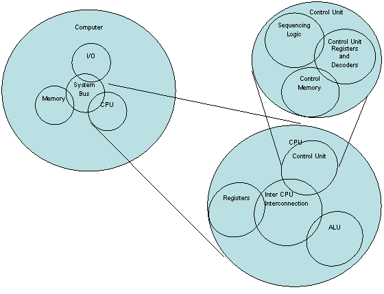
Functional view is the operation of individual components as part of the structure
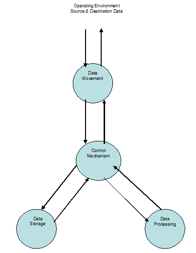
Vacuum Tubes
ENIAC - Electronic Numerical Integrator and Calculator was the world’s first general purpose electronic digital computer. It was designed as a response to U.S. wartime needs.
The Army’s Ballistic Research Laboratory (BRL) was responsible for developing range and trajectory tables for new weapons was having difficulty supplying these tables accurately and within a reasonable time frame. BRL employed more than 200 people using desktop calculators to solve the necessary ballistic equations. Later a general purpose computer using vacuum tubes, ENIAC was used for the BRL’s application. ENIAC weighs 30 tons, occupying 1500 square feet and containing more than 18000 vacuum tubes consuming 150 KW and capable of 5000 additions/ second.
ENIAC was decimal machine, numbers were represented in decimal form and arithmetic was performed in the decimal system. Its memory consisted of 20 accumulators, each capable of holding 10-digit decimal number. Each digit was represented by a ring of 10 vacuum tubes.
The Major drawback of ENIAC was that it had to be programmed manually by setting switches and plugging and unplugging cables and this was extremely tedious.
EDVAC - Electronic Discrete Variable Computer was developed based on stored program concept where
- A program was represented in a form suitable for storing in memory along with the data.
- Computer could get its instructions by reading them from memory.
- A program could be set or altered by setting the values of a portion of memory.
Princeton Institute for Advanced Studies designed IAS Computer - (Von Neumann Machine) was based on stored program concept defined as:
Data instructions are stored in a single read-write memory.
- The contents of this memory are addressable by location, without regard to the type of data contained there.
- Execution occurs in a sequential fashion (unless explicitly modified) from one instruction to the next.
The general structure of IAS computer is given below and it consists of
- Main Memory – stores data and instructions.
- ALU – capable of operating on binary data.
- Control Unit – interprets the instructions in memory and causes them to be executed.
- I/O – operated by control unit.
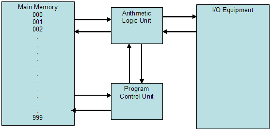
The Memory of IAS computer consists of 1000 storage locations called words of 40 bits each for both data and instructions. A word may contain
- A number is represented by a sign bit and a 39-bit value.
- Two 20-bit instructions with each instruction consisting of an 8-bit operation code (op code) specifying the operation to be performed and a 12-bit address designating one of the words in the memory(numbered from 0 – 999).
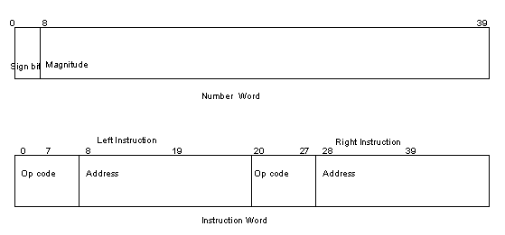
The control unit operates the IAS computer by fetching instructions from memory and executing them one at a time. Control unit and ALU contain storage locations called registers, defined as follows:
Memory Buffer Register (MBR): contains a word to be stored in memory or is used to receive a word from memory.
Memory Address Register (MAR): specifies the addresses in memory of the word to be written from or read into the MBR.
I/O Buffer Register (I/O BR): contains a word to be stored in I/O module or is used to receive a word from I/O module.
An I/O module transfers data from I/O devices to CPU and memory and vice versa. It contains internal buffers for temporarily holding data until it can be sent.
I/O Address Register (I/O AR): specifies a particular I/O device to be written from or read into the I/O BR.
Instruction Register (IR): contains the 8-bit op code instruction being executed.
Instruction Buffer Register (IBR): employed to temporarily hold the right-hand instruction from a word in memory.
Program Counter (PC): contains the address of the next instruction pair to be fetched from memory.
Accumulator (AC) & Multiplier-Quotient (MQ): employed to temporarily hold operands and results of ALU operations.
Eg: the result of multiplying two 40-bit numbers is an 80-bit number; the most significant 40-bit are stored in the AC and the least significant in the MQ.
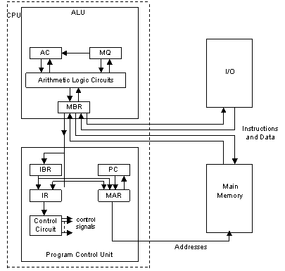
The IAS operates by repetitively performing an instruction cycle as shown below.
Each instruction cycle consists of two sub cycles.
Fetch cycle:
During the fetch cycle the op code of the next instruction is loaded into the IR and the address portion is loaded into the MAR. This instruction may be taken from the IBR or it can be obtained from memory by loading a word into the MBR and then down to the IBR, IR and MAR.
Execution cycle:
Execution cycle is performed once the op code is in the IR. Control circuits (of control unit interprets the op code and executes the instruction by sending out the appropriate control signals to cause data to be moved or an operation to be performed by the ALU.
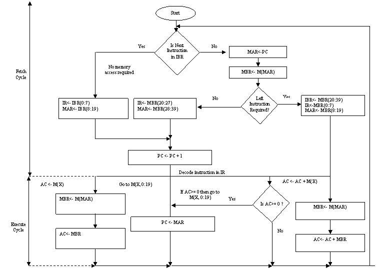
IAS computer Instruction Set:
The IAS computer had a total of 21 instructions and these can be grouped as:
Data Transfer: Moves data between memory and ALU registers or between ALU registers.
Unconditional branch: Normally the control unit executes instructions in sequence from memory. This sequence can be changed by a branch instruction. This facilitates repetitive operations
Conditional branch: The branch can be made dependent on a condition, thus allowing decision points.
Arithmetic: operations performed by the ALU.
Address Modify: performs addresses to be computed in ALU and then inserted into instructions stored in memory. This allows a program considerable addressing flexibility.
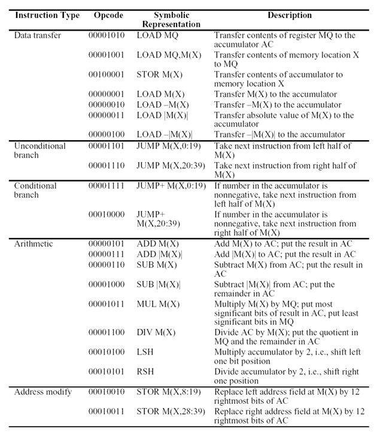
A small set of basic logic components are combined in various ways to store binary data and to perform arithmetic and logical operations on that data. This process of creating customized hardware is a form of programming and the resulting program is in the form of hardware and is termed as hardwired program.
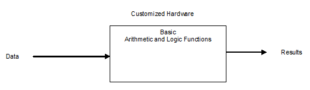
With customized hardware the system accepts data and produces results.
A general-purpose configuration of arithmetic and logic components is constructed. This set of hardware will perform various functions on data depending on control signals applied to the hardware.
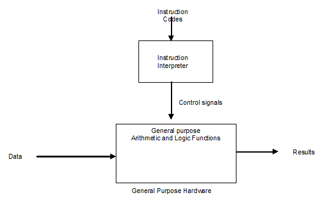
With general-purpose hardware, the system accepts data and control signals and produces results. Thus instead of rewiring the hardware for each new program, the programmer need to supply new set of control signals.
The Entire program is actually a sequence of steps. At each step, some arithmetic or logical operation is performed on some data. For each step a new set of control signals is needed and this set of control signals are identified by a unique code (op code).
Now a segment of the general purpose hardware called instruction interpreter can accept this code and generate control signals. This method of programming called software is much easier. Instead of rewiring the hardware for each new program all we need to do is provide a new sequence of codes. Each code is called an instruction and a part of the hardware interprets each instruction and generates control signals.
Program execution consists of repeating the process of instruction fetch and instruction execution.
Instruction fetch is a common operation for each instruction and consists of reading an instruction from a location in memory.
Instruction execution may involve several operations and depends on the nature of instruction.
The processing required for a single instruction is called an instruction cycle. Program execution halts only if the machine is turned off, some sort of unrecoverable error occurs or a program instruction that halts the computer is encountered.
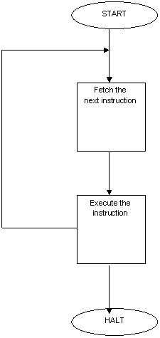
The CPU fetches an instruction from memory stored at the address pointed by program counter (PC). PC is always incremented after each fetch cycle unless otherwise to fetch the next instruction in sequence. The fetched instruction is loaded into instruction register (IR).
The CPU interprets the instruction and performs the required action.
These actions fall into four categories:
CPU - Memory: data may be transferred from (to) CPU to (from) memory.
CPU - I/O: data may be transferred from (to) I/O module to (from) CPU.
Data processing: CPU may perform some arithmetic or logic operation on data
Control: an instruction may specify that the sequence of execution be altered.
The execute cycle may involve a combination of these actions.
Let us consider a simple example using a hypothetical machine that includes following characteristics: (both instructions and data are 16-bit long)
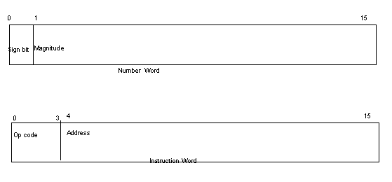
CPU Registers:
PC: Address of Instruction
IR: Instruction being executed.
AC: temporary storage
opcode list:
0001 = Load AC from memory
0010 = Store AC to memory
0101 = Add to AC from memory
In the below partial program execution, showing relevant portions of memory and CPU registers, the program fragment adds the contents of the memory word at address 940 to the contents of the memory word 941 and stores the result in the latter location. Three instruction cycles are required as shown below:
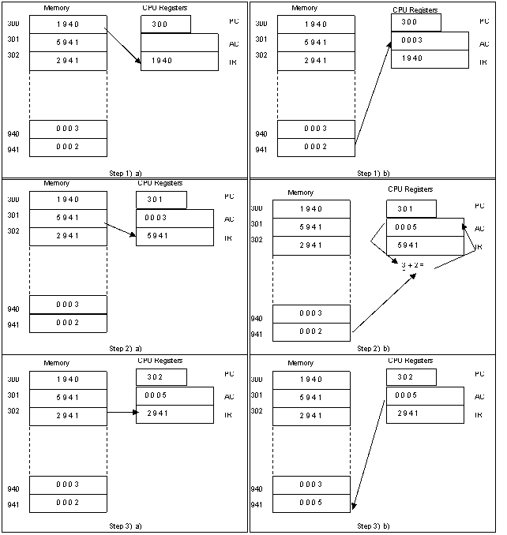
Instruction cycle 1:
- Initially the program counter (PC) contains 300, the address of the first instruction. The instruction word is fetched into MBR. The op code part of the instruction is loaded into the IR and the address part of the instruction is loaded into MAR.
- The opcode in IR is used to generate control signals, in this case the op code (1) indicates that the Accumulator (AC) is to be loaded with the contents at the address contained in MAR (940) that is 03.
Instruction cycle 2:
- program counter (PC) is incremented (301) and the next instruction is fetched into MBR. The op code part of the instruction is loaded into the IR and the address part of the instruction is loaded into MAR.
- The opcode in IR is used to generate control signals, in this case the op code (5) indicates that the Accumulator (AC) is to be added with the contents at the address contained in MAR (941) that is 02. The result in the Accumulator will be 05.
Instruction cycle 3:
- program counter (PC) is incremented (302) and the next instruction is fetched into MBR. The op code part of the instruction is loaded into the IR and the address part of the instruction is loaded into MAR.
- The opcode in IR is used to generate control signals, in this case the op code (2) indicates that the Accumulator (AC) is to be stored overriding the contents at the address contained in MAR (941) that is 02 with 05.
Interrupts provides a mechanism for other modules (I/O or memory) to interrupt the normal processing of the CPU.
The source/generation of interrupts or the interrupt processing is not covered here.
Classes of Interrupts |
Program |
Generated by some condition that occurs as result of an instruction execution, such as arithmetic overflow, division by zero, attempt to execute an illegal machine instruction and reference outside a user’s allowed memory space. |
Timer |
Generated by a timer within the processor. This allows the operating system to perform certain functions on a regular basis. |
I/O |
Generated by I/O controller, to signal normal completion of an operation or to signal a variety of error conditions. |
Hardware Failure |
Generated by a failure such as power failure or memory parity error. |
The impact of interrupts on the instruction cycle is covered.
IO module:
Interfaces to the system bus and controls one or more peripheral devices. IO module contains control logic for performing a communication function between the peripheral and the system bus.
Note: why peripherals cannot be directly connected to system bus? The reasons are:
- There are a wide variety of peripherals with various methods of operation. It is impossible to incorporate the necessary logic within the CPU to control a range of devices.
- The data transfer rate of peripherals is much slower than that of memory or CPU. It is impossible to use the high-speed system bus (operating at CPU/memory speeds) to communicate directly with a peripheral.
- Peripherals use different data formats and word lengths than the system bus (compliant with memory or CPU).
- I/O module will handle all these issues and acts as a perfect interface.
The link is used to exchange control, status and data between I/O module and the peripherals. Data are in the form of a set of bits to be sent to or received from the I/O module. Control signals determine the function that the device will perform such as send data to the I/O module(INPUT/READ), accept data from the I/O module(OUTPUT/WRITE) report status, or perform some control function particular to the device (eg: position a disk head). Status signals indicate the state of the device (READY/NOT READY) to show whether the device is ready for data transfer.
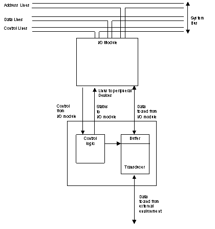
A computer system consists of a CPU and a number of device controllers that are connected through a common bus that provides access to shared memory. Each device controller is in charge of a specific type of device (for example, disk drives, audio devices, and video displays). The CPU and the device controllers can execute concurrently, competing for memory cycles. To ensure orderly access to the shared memory, a memory controller is provided whose function is to synchronize access to the memory.
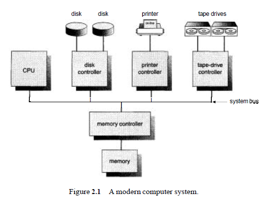
BIOS software is stored on a non-volatile ROM chip built into the system on the motherboard . It is the first code run by a PC when powered on ('boot firmware').
The primary function of the BIOS is to
the first job for the BIOS is to initialize and identify system devices such as the video display card , keyboard and mouse , hard disk drive , optical disc drive and other hardware .
The BIOS then locates software held on a peripheral device (designated as a 'boot device'), such as a hard disk or a CD/DVD, and loads and executes that software, giving it control of the PC. This process is known as booting, or booting up, which is short for bootstrapping .
A computer's central processor can only execute program code found in read-only memory (ROM), random access memory (RAM).
Modern operating systems and application program code and data are stored on non volatile data storage devices, such as hard drives , CD , DVD , flash memory cards (like an SD card ), USB flash drive , and floppy disk .
During the booting process, the binary code of the operating system is loaded from non-volatile secondary storage (such as a hard disk drive) into volatile memory (RAM) and then executed. The boot loader typically loads the main operating system for the computer.
When a computer is first powered on, it usually does not have an operating system in ROM or RAM. The computer must execute a relatively small program stored in ROM along with the bare minimum of data needed to access the non volatile devices from which the operating system programs and data are loaded into RAM.
The small program that starts this sequence of loading into RAM is known as a bootstrap loader, bootstrap or boot loader.
Common primary boot loaders include:
- BIOS
- EFI
- OpenBIOS
- OpenBoot
- SLOF
Second-stage boot loader
A second-stage boot loader, such as GRUB , BOOTMGR , Syslinux , LILO or NTLDR . It will then be able to load the operating system properly, and finally transfer execution to it. The operating system will initialize itself, and may load device drivers that are needed for the normal operation of the OS. After that it starts loading normal system programs.
Many boot loaders (like GRUB, BOOTMGR, LILO, and NTLDR) can be configured to give the user multiple booting choices. These choices can include different operating systems (for dual or multi-booting from different partitions or drives), different versions of the same operating system (in case a new version has unexpected problems), different operating system loading options (e.g., booting into a rescue or safe mode ) or some standalone program that can function without an operating system, such as memory testers (e.g., memtest86+ ) or even games (see List of PC Booter games ).[10] Usually a default choice is preselected with a time delay during which a user can press a key to change the choice, after which the default choice is automatically run, so normal booting can occur without interaction.
The boot process can be considered complete when the computer is ready to interact with the user, or the operating system is capable of running system programs or application programs. Typical modern personal computers boot in about one minute (of which about 15 seconds are taken by a power-on self test (POST) and a preliminary boot loader, and the rest by loading the operating system and other software.
Many embedded systems must boot immediately. For example, waiting a minute for a digital television or sat-nav to start is generally unacceptable. Therefore such devices have software system in ROM or flash memory so the device can begin functioning immediately. For these types of embedded system little or no loading is necessary, since the loading can be precomputed and stored on the ROM when the device is made.
Upon starting, a personal computer's x86 CPU runs the instruction located at the memory location CS:IP F000:FFF0 of the BIOS , which is located at the 0xFFFF0 linear address. This memory location is close to the end of the 1 MB of system memory accessible in real mode . It typically contains a jump instruction that transfers execution to the location of the BIOS start-up program. This program runs a power-on self test (POST) to check and initialize required devices. The BIOS goes through a pre-configured list of non-volatile storage devices ("boot device sequence") until it finds one that is bootable. A bootable device is defined as one that can be read from, and the last two bytes of the first sector contain the word 0xAA55 (also known as the boot signature).
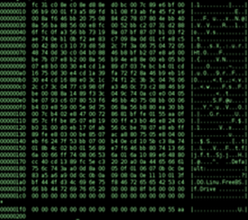

A hex dump of FreeBSD 's boot0 MBR
Once the BIOS has found a bootable device it loads the boot sector to hexadecimal Segment :Offset address 0000:7C00 or 07C0:0000 (maps to the same ultimate address) and transfers execution to the boot code. In the case of a hard disk, this is referred to as the master boot record (MBR) and is often not operating system specific. The conventional MBR code checks the MBR's partition table for a partition set as bootable (the one with active flag set).[13] If an active partition is found, the MBR code loads the boot sector code from that partition and executes it. The boot sector is often operating-system-specific; however, in most operating systems its main function is to load and execute the operating system kernel , which continues startup. If there is no active partition, or the active partition's boot sector is invalid, the MBR may load a secondary boot loader which will select a partition (often via user input) and load its boot sector, which usually loads the corresponding operating system kernel.
For a computer to start running-for instance, when it is powered up or rebooted-it needs to have an initial program to run. This initial program, or bootstrap program, tends to be simple. Typically, it is stored in read-only memory (ROM) such as firmware or EEPROM within the computer hardware. It initializes all aspects of the system, from CPU registers to device controllers to memory contents. The bootstrap program must know how to load the operating system and to start executing that system. To accomplish this goal, the bootstrap program must locate and load into memory the operating-system kernel. The operating system then starts executing the first process, such as "init," and waits for some event to occur.
http://www.vnutz.com/content/program_a_bootstrap_loader
The occurrence of an asynchronous event is usually signalled by an interrupt from either the hardware or the software. Hardware may trigger an interrupt at any time by sending a signal to the CPU, usually by way of the system bus. Software may trigger an interrupt by executing a special operation called a system call.
Modern operating systems are interrupt driven. If there are no processes to execute, no I/O devices to service, and no users to whom to respond, an operating system will sit quietly, waiting for something to happen. Events are almost always signalled by the occurrence of an interrupt or a trap. A trap (or an exception) is a software-generated interrupt caused either by an error (for example, division by zero or invalid memory access) or by a specific request from a user program that an operating-system service be performed.
For each type of interrupt, separate segments of code in the operating system determine what action should be taken. An interrupt service routine is provided that is responsible for dealing with the interrupt.
When the CPU is interrupted, it stops what it is doing and immediately transfers execution to a fixed location. The fixed location usually contains the starting address where the service routine for the interrupt is located. The interrupt service routine executes; on completion, the CPU resumes the interrupted computation.
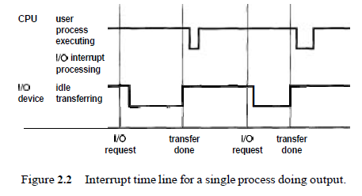
The interrupt must transfer control to the appropriate interrupt service routine (interrupt-specific handler). The straightforward method for handling this transfer would be to invoke a generic routine to examine the interrupt information; the routine, in turn, would call the interrupt-specific handler.
Given that only a predefined number of interrupts is possible, a table of pointers to interrupt routines can be used instead. The interrupt routine is then called indirectly through the table, with no intermediate routine needed. Generally, the table of pointers is stored in low memory (the first 100 so locations). These locations hold the addresses of the interrupt service routines for the various devices. This array, or interrupt vector, of addresses is then indexed by a unique device number, given with the interrupt request, to provide the address of the interrupt service routine for the interrupting device.
The interrupt architecture must also save the address of the interrupted instruction and also store the return address on the system stack. If the interrupt routine needs to modify the processor state-for instance, by modifying register values-it must explicitly save the current state and then restore that state before returning. After the interrupt is serviced, the saved return address is loaded into the program counter, and the interrupted computation resumes as though the interrupt had not occurred.
A general-purpose computer system consists of a CPU and multiple device controllers that are connected through a common bus.
Each device controller is in charge of a specific type of device. Depending on the controller, there may be more than one attached device. For instance, the small computer-systems interface (SCSI) controller can have seven or more devices attached to it.
A device controller maintains some local buffer storage and a set of special-purpose registers. The device controller is responsible for moving the data between the peripheral devices that it controls and its local buffer storage. The size of the local buffer within a device controller varies from one controller to another, depending on the particular device being controlled. For example, the size of the local buffer of a disk controller is the same as or a multiple of the size of the smallest addressable portion of a disk, called a sector, which is usually 512 bytes.
In general when a user process requests to start an I/O operation, the CPU loads the appropriate registers within the device controller. The device controller, in turn, examines the contents of these registers to determine what action to take. For example, if it finds a read request, the controller will start the transfer of data from the device to its local buffer.
Once the transfer of data is complete, the device controller informs the CPU that it has finished its operation. It accomplishes this communication by triggering an interrupt.
Once the I/O is started, two courses of action are possible. In the simplest case, the I/O is started; then, at I/O completion, control is returned to the user process. This case is known as synchronous I/O. The other possibility, called asynchronous I/O, returns control to the user program without waiting for the I/O to complete. The I/O then can continue while other system operations occur.
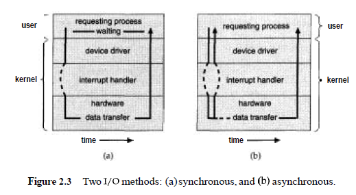
Waiting for I/O completion may be accomplished in one of two ways. Some computers have a special wait instruction that idles the CPU until the next interrupt. Machines that do not have such an instruction may have a wait loop:
Loop: jmp Loop
This tight loop simply continues until an interrupt occurs, transferring control to another part of the operating system. Such a loop might also need to poll any I/O devices that do not support the interrupt structure; instead, these devices simply set a flag in one of their registers and expect the operating system to notice that flag.
If the CPU always waits for I/O completion, at most one I/O request is outstanding at a time. Thus, whenever an I/O interrupt occurs, the operating system knows exactly which device is interrupting. On the other hand, this approach excludes concurrent I/O operations to several devices, and also excludes the possibility of overlapping useful computation with I/O.
A better alternative is to start the I/O and then to continue processing other operating-system or user program code.
A system call is then needed to allow the user program to wait for I/O completion, if desired. If no user programs are ready to run, and the operating system has no other work to do, we still require the wait instruction or idle loop, as before.
We also need to be able to keep track of many I/O requests at the same time. For this purpose, the operating system uses a table containing an entry for each I/O device: the device-status table. Each table entry indicates the device's type, address, and state (not functioning, idle, or busy). If the device is busy with a request, the type of request and other parameters will be stored in the table entry for that device. Since it is possible for other processes to issue requests to the same device, the operating system will also maintain a wait queue-a list of waiting requests-for each I/O device.
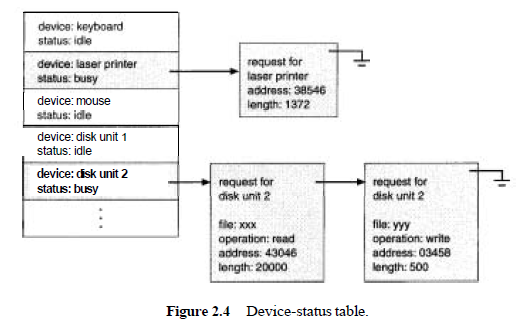
An I/O device interrupts when it needs service. When an interrupt occurs, the operating system first determines which I/O device caused the interrupt. It then indexes into the I/O device table to determine the status of that device, and modifies the table entry to reflect the occurrence of the interrupt. For most devices, an interrupt signals completion of an I/O request. If there are additional requests waiting in the queue for this device, the operating system starts processing the next request.
Finally, control is returned from the I/O interrupt. If a process was waiting for this request to complete (as recorded in the device-status table), we can now return control to it. Otherwise, we return to whatever we were doing before the I/O interrupt: to the execution of the user program (the program started an I/O operation and that operation has now finished, but the program has not yet waited for the operation to complete) or to the wait loop (the program started two or more I/O operations and is waiting for a particular one to finish, but this interrupt was from one of the other operations). In a time-sharing system, the operating system could switch to another ready-to-run process.
The main advantage of asynchronous I/O is increased system efficiency. While I/O is taking place, the system CPU can be used for processing or starting I/Os to other devices. Because I/O can be slow compared to processor speed, the system makes efficient use of its facilities.
In a simple terminal-input driver, when a line is to be read from the terminal, the first character typed is sent to the computer. When that character is received, the asynchronous-communication (or serial-port) device to which the terminal line is connected interrupts the CPU. When the interrupt request from the terminal arrives, the CPU is about to execute some instruction. The address of this interrupted instruction is saved, and control is transferred to the interrupt service routine for the appropriate device.
The interrupt service routine saves the contents of any CPU registers that it will need to use. It checks for any error conditions that might have resulted from the most recent input operation. It then takes the character from the device, and stores that character in a buffer. The interrupt routine must also adjust pointer and counter variables, to be sure that the next input character will be stored at the next location in the buffer. The interrupt routine next sets a flag in memory indicating to the other parts of the operating system that new input has been received. The other parts are responsible for processing the data in the buffer, and for transferring the characters to the program that is requesting input. Then, the interrupt service routine restores the contents of any saved registers, and transfers control back to the interrupted instruction.
If characters are being typed to a 9600-baud terminal, the terminal can accept and transfer one character approximately every 1 millisecond, or 1000 microseconds. A well-written interrupt service routine to input characters into a buffer may require 2 microseconds per character, leaving 998 microseconds out of every 1000 for CPU computation (and for servicing of other interrupts).
Given this disparity, asynchronous I/O is usually assigned a low interrupt priority, allowing other, more important interrupts to be processed first, or even to preempt the current interrupt for another.
A high-speed device, however such as a tape, disk, or communications network-may be able to transmit information at close to memory speeds; if the CPU needs two microseconds to respond to each interrupt and interrupts arrive every four microseconds, for example, that does not leave much time for process execution.
To solve this problem, direct memory access (DMA) is used for high-speed I/O devices. After setting up buffers, pointers, and counters for the I/O device, the device controller transfers an entire block of data directly to or from its own buffer storage to memory, with no intervention by the CPU. Only one interrupt is generated per block, rather than the one interrupt per byte (or word) generated for low-speed devices.
The basic operation of the CPU is the same. A user program, or the operating system itself, may request data transfer. The operating system finds a buffer (an empty buffer for input, or a full buffer for output) from a pool of buffers for the transfer. (A buffer is typically 128 to 4,096 bytes, depending on the device type.) Next, a portion of the operating system called a device driver sets the DMA controller registers to use appropriate source and destination addresses, and transfer length. The DMA controller is then instructed to start the I/O operation. While the DMA controller is performing the data transfer, the CPU is free to perform other tasks. Since the memory generally can transfer only one word at a time, the DMA controller "steals" memory cycles from the CPU. This cycle stealing can slow down the CPU execution while a DMA transfer is in progress. The DMA controller interrupts the CPU when the transfer has been completed.
Computer programs must be in main memory (also called random-access memory or RAM) to be executed. It is implemented in a semiconductor technology called dynamic random-access memory (DRAM), which forms an array of memory words. Each word has its own address.
Main memory is the only large storage area (millions to billions of bytes) that the processor can access directly. Interaction is achieved through a sequence of load or s t o r e instructions to specific memory addresses. The load instruction moves a word from main memory to an internal register within the CPU, whereas the s t o r e instruction moves the content of a register to main memory. Aside from explicit loads and stores, the CPU automatically loads instructions from main memory for execution.
A typical instruction-execution cycle, as executed on a system with a von Neumann architecture, will first fetch an instruction from memory and will store that instruction in the instruction register. The instruction is then decoded and may cause operands to be fetched from memory and stored in some internal register. After the instruction on the operands has been executed, the result may be stored back in memory.
NOTE:
Memory unit sees only a stream of memory addresses; it does not know how they are generated (by the instruction counter, indexing, indirection, literal addresses, and so on) or what they are for (instructions or data).
Main memory and the registers built into the processor itself are the only storage that the CPU can access directly. There are machine instructions that take memory addresses as arguments, but none that take disk addresses. Therefore, any instructions in execution, and any data being used by the instructions, must be in one of these direct-access storage devices. If the data are not in memory, they must be moved there before the CPU can operate on them.
Each I/O controller includes registers to hold commands and the data being transferred. Usually, special I/O instructions allow data transfers between these registers and system memory. To allow more convenient access to I/O devices, many computer architectures provide memory-mapped 110. In this case, ranges of memory addresses are set aside, and are mapped to the device registers. Reads and writes to these memory addresses cause the data to be transferred to and from the device registers. This method is appropriate for devices that have fast response times, such as video controllers. In the IBM PC, each location on the screen is mapped to a memory location. Displaying text on the screen is almost as easy as writing the text into the appropriate memory-mapped locations.
Memory-mapped I/O is also convenient for other devices, such as the serial and parallel ports used to connect modems and printers to a computer. The CPU transfers data through these kinds of devices by reading and writing a few device registers, called an 1/0 port. To send out a long string of bytes through a memory-mapped serial port, the CPU writes one data byte to the data register, then sets a bit in the control register to signal that the byte is available. The device takes the data byte, and then clears the bit in the control register to signal that it is ready for the next byte. Then, the CPU can transfer the next byte. If the CPU uses polling to watch the control bit, constantly looping to see whether the device is ready, this method of operation is called programmed 110 (PIO). If the CPU does not poll the control bit, but instead receives an interrupt when the device is ready for the next byte, the data transfer is said to be interrupt driven.
Registers that are built into the CPU are generally accessible within one cycle of the CPU clock. Most CPUs can decode instructions and perform simple operations on register contents at the rate of one or more operations per clock tick. The same cannot be said of main memory, which is accessed via a transaction on the memory bus. Memory access may take many cycles of the CPU clock to complete, in which case the processor normally needs to stall, since it does not have the data required to complete the instruction that it is executing. This situation is intolerable because of the frequency of memory accesses. The remedy is to add fast memory between the CPU and main memory. A memory buffer used to accommodate a speed differential, called a cache.
Caching is an important principle of computer systems. Information is normally kept in some storage system (such as main memory). As it is used, it is copied into a faster storage system-the cache-on a temporary basis. When we need a particular piece of information, we first check whether it is in the cache. If it is, we use the information directly from the cache; if it is not, we use the information from the main storage system, putting a copy in the cache under the assumption that we will need it again soon.
In addition, internal programmable registers, such as index registers, provide a high-speed cache for main memory. The programmer (or compiler) implements the register-allocation and register-replacement algorithms to decide which information to keep in registers and which to keep in main memory. There are also caches that are implemented totally in hardware. For instance, most systems have an instruction cache to hold the next instructions expected to be executed. Without this cache, the CPU would have to wait several cycles while an instruction is fetched from main memory. For similar reasons, most systems have one or more high-speed data caches in the memory hierarchy. these hardware-only are outside the control of the operating system.
Because caches have limited size, cache management is an important design problem. Careful selection of the cache size and of a replacement policy can result in 80 to 99 percent of all accesses being in the cache, greatly increasing performance.
The movement of information between levels of a storage hierarchy may be either explicit or implicit, depending on the hardware design and the controlling operating-system software. For instance, data transfer from cache to CPU and registers is usually a hardware function, with no operating-system intervention. On the other hand, transfer of data from disk to memory is usually controlled by the operating system.
In a hierarchical storage structure, the same data may appear in different levels of the storage system. For example, suppose that an integer A is located in file B that is to be incremented by 1, and file B resides on magnetic disk. The increment operation proceeds by first issuing an 1/0 operation to copy the disk block on which A resides to main memory. This operation is followed by copying A to the cache and to an internal register. Thus, the copy of A appears in several places: on the magnetic disk, in main memory, in the cache, and in an internal register. Once the increment takes place in the internal register, the value of A differs in the various storage systems. The value of A becomes the same only after the new value of A is written from the internal register back to the magnetic disk
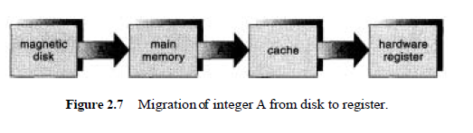
In a computing environment where only one process executes at a time, this arrangement poses no difficulties, since an access to the integer A will always be to the copy at the highest level of the hierarchy. However, in a multitasking environment, where the CPU is switched back and forth among various processes, extreme care must be taken to ensure that, if several processes wish to access A, then each of these processes will obtain the most recently updated value of A.
The situation becomes more complicated in a multiprocessor environment where, in addition to maintaining internal registers, each of the CPUs also contains a local cache. In such an environment, a copy of A may exist simultaneously in several caches. Since the various CPUs can all execute concurrently, we must make sure that an update to the value of A in one cache is immediately reflected in all other caches where A resides. This situation is called cache coherency, and it is usually a hardware problem (handled below the operating-system level).
Errors can occur in a multiprogramming system, where one erroneous program might modify the program or data of another program or even the resident monitor itself.
Many programming errors are detected by the hardware. These errors are normally handled by the operating system. If a user program fails in some way -such as by making an attempt either to execute an illegal instruction, or to access memory that is not in the user's address space-then the hardware will trap to the operating system. The trap transfers control through the interrupt vector to the operating system, just like an interrupt. Whenever a program error occurs, the operating system must abnormally terminate the program. This situation is handled by the same code as is a user-requested abnormal termination. An appropriate error message is given, and the memory of the program may be dumped. The memory dump is usually written to a file so that the user or programmer can examine it, and perhaps can correct and restart the program.
To ensure proper operation of computer system, we must protect the operating system and all other programs and their data from any malfunctioning program. Protection is needed for any shared resource. The approach taken by many operating systems is by using the hardware support that allows us to differentiate among various modes of execution.
At the very least, we need two separate modes of operation: user mode and system or privileged mode. A bit, called the mode bit, is added to the hardware of the computer to indicate the current mode: monitor (0) or user (1). With the mode bit, we are able to distinguish between a task that is executed on behalf of the operating system, and one that is executed on behalf of the user.
At system boot time, the hardware starts in monitor mode. The operating system is then loaded, and starts user processes in user mode. Whenever a trap or interrupt occurs, the hardware switches from user mode to monitor mode (that is, changes the state of the mode bit to 0). Thus, whenever the operating system gains control of the computer, it is in monitor mode. The system always switches to user mode (by setting the mode bit to 1) before passing control to a user program.
The dual mode of operation provides us with the means for protecting the operating system from errant users, and errant users from one another. We accomplish this protection by designating some of the machine instructions that may cause harm as privileged instructions. The hardware allows privileged instructions to be executed only in monitor mode. If an attempt is made to execute a privileged instruction in user mode, the hardware does not execute the instruction, but rather treats the instruction as illegal and traps it to the operating system.
System call:
The concept of privileged instructions also provides us with the means for the user to interact with the operating system by asking the system to perform some designated tasks that only the operating system should do. Each such request is invoked by the user executing a privileged instruction. Such a request is known as a system call.
When a system call is executed, it is treated by the hardware as a software interrupt. Control passes through the interrupt vector to a service routine in the operating system, and the mode bit is set to monitor mode. The system-call service routine is a part of the operating system. The monitor examines the interrupting instruction to determine what system call has occurred; a parameter indicates what type of service the user program is requesting. Additional information needed for the request may be passed in registers, on the stack, or in memory (with pointers to the memory locations passed in registers). The monitor verifies that the parameters are correct and legal, executes the request, and returns control to the instruction following the system call.
The lack of a hardware-supported dual mode can cause serious shortcomings in an operating system. For instance, MS-DOS was written for the Intel 8088 archtecture, which has no mode bit, and therefore, no dual mode. A user program running awry can wipe out the operating system by writing over it with data, and multiple programs are able to write to a device at the same time, with possibly disastrous results.
A user program may disrupt the normal operation of the system by issuing illegal I/O instructions, by accessing memory locations within the operating system itself, or by refusing to relinquish the CPU. We can use various mechanisms to ensure that such disruptions cannot take place in the system. To prevent users from performing illegal I/O, we define all I/O instructions to be privileged instructions. Thus, users cannot issue I/O instructions directly; they must do it through the operating system. For I/O protection to
be complete, we must be sure that a user program can never gain control of the computer in monitor mode. If it could, 1/0 protection could be compromised. Consider a computer executing in user mode. It will switch to monitor mode whenever an interrupt or trap occurs, jumping to the address determined from the interrupt vector. If a user program, as part of its execution, stores a new address in the interrupt vector, this new address could overwrite the previous address with an address in the user program. Then, when a corresponding trap or interrupt occurred, the hardware would switch to monitor mode, and would transfer control through the (modified) interrupt vector to the user program! The user program could gain control of the computer in monitor mode.
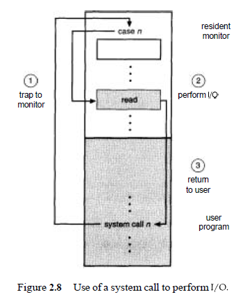
To do I/O, a user program executes a system call to request that the operating system perform 1/0 on its behalf . The operating system, executing in monitor mode, checks that the request is valid, and (if the request is valid) does the I/O requested. The operating system then returns to the user.
To ensure correct operation, we must protect the interrupt vector from modification by a user program. In addition, we must also protect the interrupt-service routines in the operating system from modification. Even if the user did not gain unauthorized control of the computer, modifying the interrupt service routines would probably disrupt the proper operation of the computer system and of its spooling and buffering. We see then that we must provide memory protection at least for the interrupt vector and the interrupt-service routines of the operating system. In general, we want to protect the operating system from access by user programs, and, in addition, to protect user programs from one another.
This protection must be provided by the hardware. one such possible implementation. To separate each program's memory space, we need the ability to determine the range of legal addresses that the program may access, and to protect the memory outside that space.
We can provide this protection by using two registers, usually a base and a limit. The base register holds the smallest legal physical memory address; the limit register contains the size of the range. For example, if the base register holds 300040 and limit register is 120900, then the program can legally access all addresses from 300040 through 420940 inclusive.
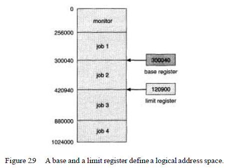
This protection is accomplished by the CPU hardware comparing every address generated in user mode with the registers. Any attempt by a program executing in user mode to access monitor memory or other users' memory results in a trap to the monitor, which treats the attempt as a fatal error.
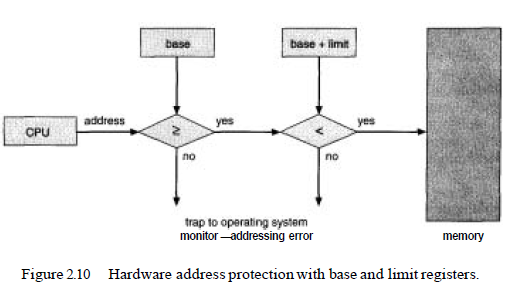
This scheme prevents the user program from (accidentally or deliberately) modifying the code or data structures of either the operating system or other users. The base and limit registers can be loaded by only the operating system, which uses a special privileged instruction. Since privileged instructions can be executed in only monitor mode, and since only the operating system executes in monitor mode, only the operating system can load the base and limit registers.
This scheme allows the monitor to change the value of the registers, but prevents user programs from changing the registers' contents. The operating system, executing in monitor mode, is given unrestricted access to both monitor and users' memory. This provision allows the operating system to load users' programs into users' memory, to dump out those programs in case of errors, to access and modify parameters of system calls, and so on.
In addition to protecting I/O and memory, we must ensure that the operating system maintains control. We must prevent a user program from getting stuck in an infinite loop or not calling system services, and never returning control to the operating system. To accomplish this goal, we can use a timer. A timer can be set to interrupt the computer after a specified period. The period may be fixed (for example, 1/60 second) or variable (for example, from 1 millisecond to 1 second). A variable timer is generally implemented by a fixed-rate clock and a counter. The operating system sets the counter. Every time the clock ticks, the counter is decremented. When the counter reaches 0, an interrupt occurs.
For instance, a 10-bit counter with a 1-millisecond clock allows interrupts at intervals from 1 millisecond to 1,024 milliseconds, in steps of 1 millisecond. Before turning over control to the user, the operating system ensures that the timer is set to interrupt. If the timer interrupts, control transfers automatically to the operating system, which may treat the interrupt as a fatal error or may give the program more time. Clearly, instructions that modify the operation of the timer are privileged.
Thus, we can use the timer to prevent a user program from running too long. A simple technique is to initialize a counter with the amount of time that a program is allowed to run. A program with a 7-minute time limit, for example, would have its counter initialized to 420. Every second, the timer interrupts and the counter is decremented by 1. As long as the counter is positive, control is returned to the user program. When the counter becomes negative, the operating system terminates the program for exceeding the assigned time limit.
A more common use of a timer is to implement time sharing. In the most straightforward case, the timer could be set to interrupt every N milliseconds, where N is the time slice that each user is allowed to execute before the next user gets control of the CPU. The operating system is invoked at the end of each time slice to perform various housekeeping tasks, such as adding the value N to the record that specifies (for accounting purposes) the amount of time the user program has executed thus far. The operating system also saves registers, internal variables, and buffers, and changes several other parameters to prepare for the next program to run. This procedure is known as a context switch; Following a context switch, the next program continues with its execution from the point at which it left off (when its previous time slice ran out).
Another use of the timer is to compute the current time. A timer interrupt signals the passage of some period, allowing the operating system to compute the current time in reference to some initial time. If we have interrupts every 1 second, and we have had 1427 interrupts since we were told that it was 1:00 P.M., then we can compute that the current time is 1:23:47 P.M. Some computers determine the current time in this manner, but the calculations must be done carefully for the time to be kept accurately, since the interrupt-processing time (and other times when interrupts are disabled) tends to cause the software clock to slow down. Most computers have a separate hardware time-of-day clock that is independent of the operating system.
A computer system can be divided roughly into four components: the hardware, the operating system, the application programs, and the users.
An operating system is a program that manages the computer hardware and acts as an intermediary between the user application programs of a computer and the computer hardware. Operating system provides an environment in which a user can execute programs in a convenient and efficient manner.
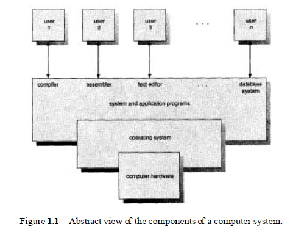
A computer system has many resources-hardware and software and data -that may be required to solve a problem: CPU time, memory space, file-storage space, I/O devices, and so on. The operating system provides the means for the proper use of these resources in the operation of the computer system.
The operating system is the program that acts as a resource allocator/ manager. Facing numerous and possibly conflicting requests for resources, the operating system must decide how to allocate them to specific programs and users so that it can operate the computer system efficiently and fairly.
The operating system controls and coordinates the use of the hardware among the various application programs -such as word processors, spreadsheets, compilers, and web browsers- for the various users.
- Process Control.
- Process Communication
- Process Synchronization
Real-time applications cover a wide range of tasks with differing time dependencies and require high-speed computation power to respond to an external event in a timely and predictable manner.
- Timeliness: meeting time constraints. For example, an experimenter in high-energy physics needs to collect data in microseconds while a meteorologist monitoring the environment might need to collect data in intervals of several minutes.
- Predictability (bounded response time) means that a task or set of tasks can always be completed within a predetermined amount of time.
Real-time applications can be classified as either hard or soft real-time.
- Hard real-time applications: meeting timing constraints is a condition for success. An example of a hard real-time application is a missile guidance control system where a late response to a needed correction leads to disaster.
- Soft real-time applications: meeting timing constraints is a not condition for success. An example of a soft real-time application is an airline reservation system where an occasional delay is tolerable.
Real-time applications make use of following Real-time System Capabilities.
- Pre-emptive kernel
- Fixed-priority scheduling policies (scheduler)
- Real-time clocks and timers
- Memory locking
- Asynchronous I/O
- File synchronization
- Queued real-time signals
- Process communication facilities
The amount of time it takes for a higher-priority process to displace a lower-priority process is referred to as process pre-emption latency.
Every application can interact with the operating system in two modes: user mode and kernel mode. User-mode processes call utilities, library functions, and other user applications. A process running in user mode can be pre-empted by a higher-priority process. During execution, a user-mode process often makes system calls, switching context from user to kernel mode where the process interacts with the operating system.
Under the traditional timesharing scheduling algorithm, a process running in kernel mode cannot be pre-empted. A pre-emptive kernel guarantees that a higher-priority process can quickly interrupt a lower-priority process, regardless of whether the low-priority process is in user or kernel mode. Whenever a higher-priority process becomes runnable, a pre-emption is requested, and the higher-priority process displaces the running, lower-priority process.
The standard UNIX kernel is a non pre-emptive kernel; it does not allow a user process to pre-empt a process executing in kernel mode. Once a running process issues a system call and enters kernel mode, pre-emptive context switches are disabled until the system call is completed. During that time, the process that made the system call may delay the execution of a higher-priority, runnable, real-time process.
The maximum process pre-emption latency for a non pre-emptive kernel is the maximum amount of time it can take for the running, kernel-mode process to switch out of kernel mode back into user mode and then be pre-empted by a higher-priority process.
Under these conditions, a worst-case pre-emption takes seconds, which is clearly unacceptable for many real-time applications.
A pre-emptive kernel, such as the Tru64 UNIX kernel with real-time pre-emption enabled, allows the operating system to respond quickly to a process pre-emption request.
When a real-time user process engages one of the fixed-priority scheduling policies, the Tru64 UNIX kernel can break out of kernel mode to honour the pre-emption request.
A pre-emptive kernel supports the concept of process synchronization with the ability to respond quickly to interrupts while maintaining data integrity. The kernel employs mechanisms to protect the integrity of kernel data structures, and defines restrictions on when the kernel can pre-empt execution.
The maximum process pre-emption latency for a pre-emptive kernel is the exact amount of time required to preserve system and data integrity and pre-empt the running process.
Under these conditions a worst-case pre-emption takes only milliseconds.
When a higher-priority real-time process makes a preemption request, the amount of elapsed time until the request is honored depends on the kernel. Latency is represented as the shaded area.
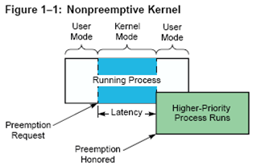
Figure 1–1 shows the expected latency of a non pre-emptive kernel. In this situation, the currently running process moves back and forth between user and kernel mode as it executes. The higher-priority, real-time process advances to the beginning of the priority process list, but cannot pre-empt the running process while it runs in kernel mode. The real-time process must wait until the running process either finishes executing or changes back to user mode before the real-time process is allowed to preempt the running process.
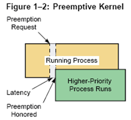
Figure 1–2 shows the expected latency of a preemptive kernel. In this situation the running process is quickly preempted and the higher-priority, real-time process takes its place on the run queue.
Wind is VxWorks multitasking kernel. Wind is based on multitasking, intertask synchronization and communications facilities and hardware interrupt handling.
Wind is VxWorks High-Performance Real-time Kernel. Wind, includes multitasking with pre-emptive priority scheduling, inter task synchronization and communications facilities, interrupt handling support, watchdog timers, memory management.
A multitasking environment allows a real-time application to be constructed as a set of independent tasks, each with its own thread of execution and set of system resources.
Under VxWorks, any subroutine can be spawned as a separate task, with its own context and stack. Other basic task control facilities allow tasks to be suspended, resumed, deleted, delayed, and moved in priority.
Wind, uses interrupt-driven, priority-based task scheduling. It features fast context switch times and low interrupt latency.
Hardware interrupt handling is a mechanism to inform a system of external events. To get the fastest possible response to interrupts, interrupt service routines (ISRs) in VxWorks run in a special context of their own, outside of any task’s context.
Inter task communication facilities(semaphores, message queues, pipes, signals, shared memory) and network inter task communication facilities(sockets, RPCs, SNMP, NFS, RSH, FTP, TFTP, BOOTP, Proxy ARP) allow these tasks to synchronize and communicate in order to coordinate their activities.
The wind kernel supplies semaphores as the basic task synchronization and mutual-exclusion mechanism. There are several kinds of semaphores in wind, specialized for different application needs: binary semaphores, counting semaphores, mutual-exclusion semaphores, and POSIX semaphores. All of these semaphore types are fast and efficient. In addition to being available to application developers, they have also been used extensively in building higher-level facilities in VxWorks.
POSIX (Portable Operating System Interface Exchange) is a set of standards to support application portability at the source level across operating systems. POSIX standard 1003.1b (formerly called 1003.4) defines a set of interfaces for real-time operating system services. Using these interfaces makes it easier to move applications from one operating system to another.
Nearly all POSIX 1003.1b interfaces are available in VxWorks such as asynchronous I/O, semaphores, message queues, memory management, queued signals, scheduling, clocks and timers. In addition several interfaces from traditional POSIX 1003.1 standard are also supported.
The VxWorks I/O system provides uniform device-independent access to many kinds of devices. VxWorks provides a fast and flexible ANSI C-compatible I/O system, including UNIX standard buffered I/O and POSIX standard asynchronous I/O.
You can call seven basic I/O routines: creat( ), remove( ), open( ), close( ), read( ), write( ), and ioctl( ). Higher-level I/O routines (such as ANSI C compatible printf( ) and scanf( ) routines) are also provided.
VxWorks also provides a standard buffered I/O package (stdio) that includes ANSI C-compatible routines such as fopen( ), fclose( ), fread( ), fwrite( ), getc( ), and putc( ). These routines increase I/O performance in many cases.
The VxWorks I/O system also includes POSIX-compliant asynchronous I/O: a library of routines that perform input and output operations concurrently with a task’s other activities.
VxWorks includes the following drivers:
- Network driver – for network devices (Ethernet, shared memory)
- Pipe driver – for intertask communication
- RAM “disk” driver – for memory-resident files
- SCSI driver – for SCSI hard disks, diskettes, and tape drives
- Keyboard driver – for PC x86 keyboards (x86 BSP only)
- Display driver – for PC x86 VGA displays (x86 BSP only)
- Disk driver – for IDE and floppy disk drives (x86 BSP only), Parallel port driver – for PC-style target hardware.
VxWorks provides fast file systems( MS-DOS® compatible file system,RT-11 file system,“raw disk” file system, filesystem that supports SCSI tape devices ) tailored to real-time applications.
VxWorks provides “transparent” access to other VxWorks and TCP/IPnetworked systems, a BSD1 Sockets-compliant programming interface, remote procedure calls (RPC), SNMP (optional), remote file access (including NFS client and server facilities and a non-NFS facility utilizing RSH, FTP, or TFTP),BOOTP, and proxy ARP. All VxWorks network facilities comply with standard Internet protocols, both loosely coupled over serial lines or standard Ethernet connections and tightly coupled over a backplane bus using shared memory.
VxWorks provides both bundled and unbundled (VxVMI) virtual memory support for boards with an MMU, including the ability to make portions of memory noncacheable or read-only, as well as a set of routines for virtualmemory management.
The VxMP option provides facilities for sharing semaphores, message queues, and memory regions between tasks on different processors.
Shared memory and memory-mapped files allow processes to communicate by incorporating data directly into process address space. Processes communicate by sharing portions of their address space. When one process writes to a location in the shared area, the data is immediately available to other processes sharing the area. Communication is fast because there is none of the overhead associated with system calls. Data movement is reduced because it is not copied into buffers.
A process manipulates its address space by mapping or removing portions of memory objects into the process address space. When multiple processes map the same memory object, they share access to the underlying data. Shared-memory functions allow you to open and unlink the shared-memory files.
The memory-mapping and shared-memory functions allow you controlled access to shared memory so that the application can coordinate the use of shared address space.When you use a shared, mapped file, the changes initiated by a single process or multiple processes are reflected back to the file. Other processes using the same path and opening the connection to the memory object have a shared mapping of the file.Use memory-mapping or file control functions to control usage and access. If the mappings allow it, data written into the file through the address space of one process appears in the address space of all processes mapping the same portion of the file. Memory-mapped objects are persistent; their names and contents remain s all processes that have accessed the object unlink the file.
A process can be thought of as a program in execution. A process will need certain resources-such as CPU time, memory, files, and I/O devices-to accomplish its task. These resources are allocated to the process either when it is created or while it is executing. When the process terminates, the operating system will reclaim any reusable resources.
A system consists of a collection of processes: Operating system processes executing system code, and user processes executing user code. All these processes can potentially execute concurrently, with the CPU (or CPUs) multiplexed among them. By switching the CPU between processes, the operating system can make the computer more productive.
The operating system is responsible for the following activities in connection with process management:
- Process Control.
- Creating and deleting both user and system processes
- Suspending and resuming processes
- Process Communication
- Providing mechanisms for process communication
- Process Synchronization
- Providing mechanisms for process synchronization
- Providing mechanisms for deadlock handling
Program is an executable file. It is created by a link editor and resides on a disk file. Different Executable file formats are: Windows - exe format, UNIX - elf format.
NOTE: For more details on object and executable file formats go through:
- ../../2_ProgrammingLanguages_Learnings/CCP-Weekly/ModuleW.html click here.
- ../../3_Compilers Linkers Loaders_Learnings/Compilers-Linkers-Loaders.html click here.
Process is an instance of a program executed by the operating system. Some operating systems use the term task instead of process. A process can be thought of as a program in execution. A system consists of a collection of processes:
- Operating system processes executing system code, and
- User processes executing user code.
A process will need certain resources - such as CPU time, memory, files, and I/O devices-to accomplish its task. These resources are allocated to the process either when it is created or while it is executing. When the process terminates, the operating system will reclaim any reusable resources.
All these processes can potentially execute concurrently, with the CPU (or CPUs) multiplexed among them. By switching the CPU between processes, the operating system can make the computer more productive.
The operating system is responsible for the following activities in connection with process management:
- Creating and deleting both user and system processes
- Suspending and resuming processes
- Providing mechanisms for process synchronization
- Providing mechanisms for process communication
- Providing mechanisms for deadlock handling
It is possible for a single program to be executing as many different processes at the same time. Although two processes may be associated with the same program, they are nevertheless (how ever) considered as two separate execution sequences. For instance, several users may be running different copies of the mail program, or the same user may invoke many copies of the editor program. Each of these is a separate process, and, although the text sections are equivalent, the data sections vary.
A process, an active entity, includes:
- program code/text section.
- current activity, as represented by the value of the program counter ( specifying the next instruction to execute) and the contents of the processor's registers.
- process stack, which contains temporary data (such as method parameters, return addresses, and local variables), and
- data section, which contains global variables.
The execution of a process must be sequential. The CPU executes one instruction of the process after another, until the process completes. Further, at any time, at most one instruction is executed on behalf of the process.
A typical arrangement of a user process consists of user context and kernel context as shown below:
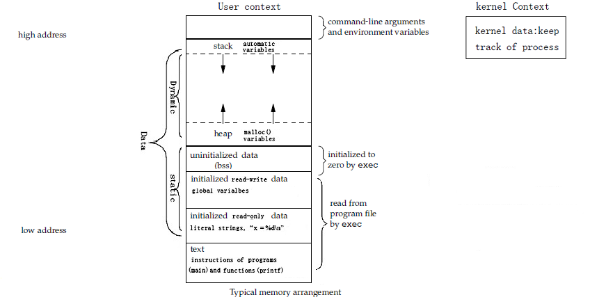
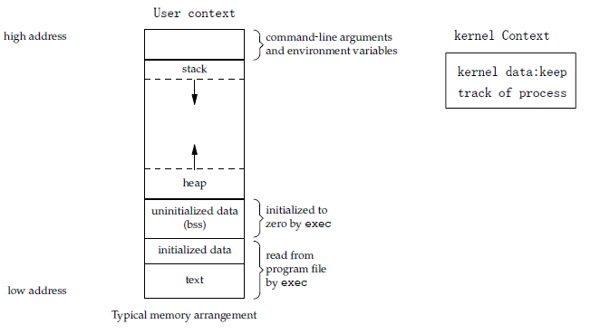
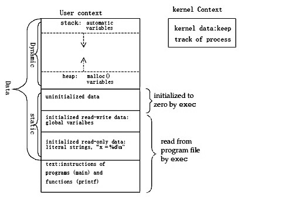
NOTE:
A gap is shown between the heap and the stack to indicate that some room between these two portions is left, so that both can grow dynamically during the execution of a process. This area between the heap and stack is also where the shared memory segments are usually allocated.
User context of a process consists of the portions of the address space that are accessible to the process while it is running in user mode.
Text portion
The text portion of a process contains the actual machine instructions that are executed. This portion is set read-only so that the process cannot modify its instructions. This allows multiple instances of a single program to share a single copy of the text portion. When a program is executed by the operating system, the text portion is read into memory from its disk file.
Data portion
The data portion contains the program’s data. This portion can be divided into three pieces:
- Initialized read-only data - Initialized read-only data contains data elements that are initialized by the program and are read-only while the process is executing. This area can be used for items such as constants and literal strings that the programmer can initialize but not change.
- Initialized read-write data - Initialized read-write data contains data elements that are initialized by the program and may have their values modified during execution of the process.
- unInitialized data - The UNIX System calls the unInitialized data as Block Started by Symbol - bss. UnInitialized data contains data elements that are not initialized by the program but are set to zero before the process starts execution. These may be modified during the execution of the process. The advantage of providing uninitialized data is that the system does not need to allocate space in the disk file for this area since it is by default initialized to zero by the operating system before the process begins. In addition to savings disk space this feature also reduces the amount of time required to read the disk file into memory.
The term Initialized or unInitialized means whether the data element is initialized or not initialized by the process.
Stack portion
The stack portion is used dynamically while the process is running to contain the stack frames. Stack frames contain the return address linkage for each function call and also the data elements required by a function.
Heap portion
The heap portion is used to allocate more data space dynamically while the process is running.
For example: In the following C program
#include<stdio.h>
int debug = 1;
char *progname;
int main(int argc, char *argv[ ] )
{
int i;
char *ptr, *malloc();
progname = argv[0];
printf(“argc = %d \n”,argc);
for(i=1;i<argc;i++)
{
ptr = malloc(strlen(argv[i]) + 1);
strcpy(ptr,argv[i]);
if(debug)
printf(“%s \n”,ptr);
}
return 0;
} ///:~
the strings “argc = %d \n” and “%s \n” can be stored as read-only data. The integer variable debug is an initialized, read-write variable and the char pointer progname is an uninitialized read-write variable. The variables i and ptr are called automatic variables. They are stored on the stack while the main function is executing. Finally the storage space allocated by the malloc() is on the heap. The machine instructions comprising the functions main(), printf(), strlen(), strcpy() and malloc() are all in the text segment.
The kernel context of a process is maintained and accessible only to the kernel. This area contains information that the kernel needs to keep track of the process and to stop and resume the process while other processes are allowed to execute. The kernel context contains elements such as
- machine registers corresponding to the process,
- physical locations and sizes of each portion of the process and so on.
This area is not accessible to the process while is running. A part of the kernel context is stored in the process table. The process table is a data structure within the kernel that contains one entry per process to store process details and parameters such as process ID, effective user ID.
Each process is represented in the operating system by a process control block (PCB) - also called a task control block.
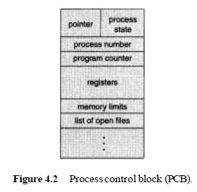
It contains many pieces of information associated with a specific process, including these:
- Process state - may be new, ready, running, waiting, halted, and so on.
- Program counter -
indicates the address of the next instruction to be executed for this process.
- CPU registers -
vary in number and type, depending on the computer architecture. Along with the program counter, this state information must be saved when an interrupt occurs, to allow the process to be continued correctly afterward. They include
- accumulators,
- index registers,
- stack pointers,
- general-purpose registers,
- plus any condition-code information.
- CPU-scheduling information - includes a process priority, pointers to scheduling queues, and any other scheduling parameters. (Chapter 6 describes process scheduling.)
- Memory-management information - may include such information as the value of the base and limit registers, the page tables, or the segment tables, depending on the memory system used by the operating system.
- Accounting information - includes the amount of CPU and real time used, time limits, account numbers, job or process numbers, and so on.
- status information - includes the list of I/O devices allocated to this process, a list of open files, and so on.
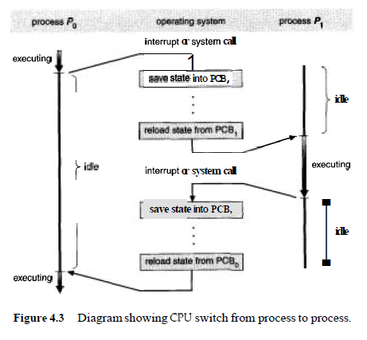
In UNIX a process can spawn another process. Then this process is called parent process and the spawned process is called child process.
Process Identification Number (PID)
Process ID is an integer number stored in process table and is used to uniquely identify the processes running on the machine. These processes can be in different states like: run able, running, suspended or blocked, zombie and orphan. Process ID is accessed from process table using the system calls: getpid( ) and getppid( ).
Process ID
Every process has a unique process ID or PID. The PID is an integer between 0 to 30,000 and is assigned by kernel when a new process is created. A process can obtain its PID using getpid( ) system call.
int getpid( );
PID = 0: process ID 0 is a special kernel process termed as swapper or scheduler.
PID = 1: process ID 1 is a special kernel process termed as init.
PID = 2: process ID 2 is a special kernel process termed as pagedaemon.
Parent Process ID
Every process has a parent process and a corresponding parent process ID. The kernel assigns the parent process ID when a new process is created and a process can obtain its parent process ID using getppid( ) system call.
int getppid( );
getpid( )
getpid( ) is a UNIX system call used to get the process ID of the current process.
#include<stdio.h>
int main( )
{
int pid;
pid = getpid();
printf(“process ID of current process is %d”,pid);
return 0;
} ///:~
getppid( )
getppid( ) is a UNIX system call used to get the parent process ID of the current process.
#include<stdio.h>
int main( )
{
int ppid;
ppid = getppid();
printf(“parent process ID of current process is %d”,ppid);
return 0;
} ///:~
Real user ID
Each user is assigned a positive integer user ID.
Real Group ID
Effective user ID
Effective Group ID
Super user
Password file
Shadow Passwords
Group file
Shells
Filename
Pathname
File Descriptor
Files
File Access permissions
File Access mode word
File mode creation mask
Major and Minor Device Numbers
Directories
Current Working Directory
Process Group ID
Terminal Group ID and Control Terminal
Socket Group ID
Process Group ID
Process control involves process creation, process execution and process termination. The processes in the system can execute concurrently, and they must be created and deleted dynamically. Thus, the operating system must provide a mechanism (or facility) for process creation and termination.
A process may create several new processes, via a create-process system call, during the course of execution. The creating process is called a parent process, whereas the new processes are called the children of that process. Each of these new processes may in turn create other processes, forming a tree of processes (Figure 4.7).

In general, a process will need certain resources (such as CPU time, memory, files, I/O devices) to accomplish its task. When a process creates a subprocess, that subprocess may be able to obtain its resources directly from the operating system, or it may be constrained to a subset of the resources of the parent process. The parent may have to partition its resources among its children, or it may be able to share some resources (such as memory or files) among several of its children. Restricting a child process to a subset of the parent's resources prevents any process from overloading the system by creating too many subprocesses.
When a process is created it obtains, in addition to the various physical and logical resources, initialization data (or input) that may be passed along from the parent process to the child process.
For example, consider a process whose function is to display the status of a file, say F1, on the screen of a terminal. When it is created, it will get, as an input from its parent process, the name of the file F1, and it will execute using that datum to obtain the desired information. It may also get the name of the output device. Some operating systems pass resources to child processes. On such a system, the new process may get two open files, F1 and the terminal device, and may just need to transfer the datum between the two.
When a process creates a new process, two possibilities exist in terms of execution:
- 1. The parent continues to execute concurrently with its children.
- 2. The parent waits until some or all of its children have terminated.
There are also two possibilities in terms of the address space of the new process:
- 1. The child process is a duplicate of the parent process.
- 2. The child process has a program loaded into it.
To illustrate these different implementations, let us consider the UNIX operating system. In UNIX, each process is identified by its process identifier, which is a unique integer. A new process is created by the fork() system call. The new process consists of a copy of the address space of the original process. This mechanism allows the parent process to communicate easily with its child process. Both processes (the parent and the child) continue execution at the instruction after the fork system call, with one difference: The return code for the fork system call is zero for the new (child) process, whereas the (nonzero) process identifier of the child is returned to the parent.
Typically, the execlp system call is used after a fork system call by one of the two processes to replace the process' memory space with a new program. The execlp system call loads a binary file into memory-destroying the memory image of the program containing the execlp system call-and starts its execution. In this manner, the two processes are able to communicate, and then to go their separate ways. The parent can then create more children, or, if it has nothing else to do while the child runs, it can issue a wait system call to move itself off the ready queue until the termination of the child.
The C program shown in Figure 4.8 illustrates the UNIX system calls previously described. The parent creates a child process using the fork system call. We now have two different processes running a copy of the same program. The value of pid for the child process is zero; that for the parent is an integer value greater than zero.
The child process overlays its address space with the UNIX command /bin/ls (used to get a directory listing) using the execlp system call. The parent waits for the child process to complete with the wait system call. When the child process completes, the parent process resumes from the call to wait where it completes using the exit system call.
The DEC VMS operating system, in contrast, creates a new process, loads a specified program into that process, and starts it running. The Microsoft
#include <stido.h>
void main(int argc, char *argv [I )
{
int pid;
/* fork another process */
pid = fork();
if (pid < 0) { /* error occurred */
f printf (stderr , "Fork Failed") ;
exit (-1) ;
}
else if (pid == 0) { /* child process */
execlp("/bin/ls" , "1s" ,NULL) ;
1
else { /* parent process */
/* parent will wait for the child to complete */
wait (NULL) ;
printf ("Child Complete") ;
exit (0) ;
}
}
Windows NT operating system supports both models: The parent's address space may be duplicated, or the parent may specify the name of a program for the operating system to load into the address space of the new process.
User created process can in turn create child processes using the UNIX system call fork( ).
int fork();
The fork() system call creates a child process that is a duplicate of the parent process. The process that executed the fork() system call is called parent process and the new process is called child process. After fork ( ) system call child starts execution from the statements following fork ( ) statement. All the statements after fork( ) are executed twice (Once by the parent process and once by the child process due to code duplication). However statements above fork( ) are executed only in the parent process.
The values of the following process variables in the child process are copied from the parent process:
- Real user ID
- Real group ID
- Effective user ID
- Effective group ID
- Process group ID
- Terminal group ID
- Root directory
- Current working directory
- Signal handling settings
- File mode creation mask
The child process differs from the parent process in the following ways:
- The child process has a new unique process ID.
- The child process has a different parent process ID.
- The child process has its own copies of the parent’s file descriptors.
- The time left until an alarm clock signal is set to zero in the child.
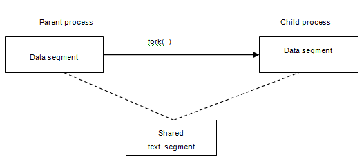
#include<stdio.h>
int main( )
{
printf(“This is parent process \n”);
fork();
printf(“Hello World”);
return 0;
}
Therefore the output of parent and child processes is:
Parent process child process:
This is parent process
Hello World Hello World
Return value of fork ()
The fork() system call is called once (by the parent process) but it returns twice (once in the parent process and once in the child process). The fork() system call may or may not create the child process due to limited memory.
- If successful fork () will return the child’s PID in the parent process where as in the child process it returns 0.
- If unsuccessful due to insufficient memory fork() will return –1 in the parent process.
#include<stdio.h>
int main( )
{
int pid;
pid = fork();
if(pid > 0 )
printf(“parent process ID is %d”,pid);
return 0;
}
Uses of fork() operation
- A process can make a copy of itself so that one copy can handle one operation while other copy does another operation. Eg: network servers.
- A process can execute another program by issuing an exec() to execute the new program from one of the copies (typically the child process).
#include<stdio.h>
int main( )
{
int pid;
pid = fork();
if(pid == 0 )
{
printf(“exec starts \n”);
execl(“/bin/ls”, “ls”, (char *)0);
printf(“execl did not work”);
}
else
{
wait(0);
printf(“parent process: ls is completed in child \n”);
}
return 0;
}
Here we create a child process in which a call to the execl() function is made. This gives control to the “ls” shell program, which gives a directory listing. Once that is over, control is not handed back to the child process because it has been replaced in memory by the ls program so the printf() message “execl did not work” is not displayed. The parent process which has been in wait() state till now is activated and displays the printf() message “parent process: ls is completed in child \n”.
The shell is a process running in the background. When a call is made to it, the shell creates a child process through a call to fork(). It is from this child process that a exec() call runs the commands we specify. Let’s take an example, suppose at the UNIX prompt we said ls –l command. The shell, which has been waiting patiently for us to key in some command, will call a function looks like this:
#include<stdio.h>
int main(int argc, char *argv[ ] )
{
int pid;
if((pid = fork()) == 0 )
{
printf(“exec starts \n”);
execvp(argv[1], &argv[1]);
printf(“execvp failed”);
}
else
{
wait((char *)0);
printf(“return to shell \n”);
}
return 0;
}
Compile and run this program by keying in a.out ls –l.
In this program after fork(), a call to execvp() is made in the child process. execvp() takes two parameters: the program to run, that is ls, as signified by argv[1] and the pointer to the arguments, that is ls –l, as signified by &argv[1]. This gives a directory listing after which we will be returned to the shell.
Example: to find out how much time one process takes to run, using the shell would be an ideal way to find out. All we need to do is get the time before fork() takes place. Run the command in the child process while the parent is waiting. And when the command is over and the parent process is activated, get the time again. The difference between the two times noted will give an approximate idea of the time taken.
#include<stdio.h>
#include<time.h>
int main(int argc, char *argv[ ])
{
int pid;
long a, b;
time(&a);
if((pid = fork()) == 0 )
{
printf(“exec starts \n”);
execvp(argv[1], &argv[1]);
printf(“execvp failed”);
}
else
{
wait((char *)0);
time(&b);
printf(“time taken by given command: %ld seconds \n”,(b-a));
}
return 0;
}
Run the program in the following manner: a.out vi test. This gets you the vi editor. Wait for sometime and then exit. Before you returned to the UNIX prompt you’ll see the time you spent in vi.
In UNIX an existing process can execute a program by using exec() system call. The exec() system call replaces the current process with the new program. The process ID does not change. The process that issues the exec() system call is called calling process and the program that is exec()ed is called the new program. It is incorrect to refer to the new program as a new process because a new program is executing in the context of the calling program and in reality a new process is not created.
There are six different versions of the exec() function:
int execlp(char *filename, char *arg0,char *arg1, …, (char *)0 );
int execl(char *pathname, char *arg0,char *arg1, …, (char *)0 );
int execle(char * pathname, char *arg0,char *arg1, …, (char *)0, char **envp );
int execvp(char *filename, char **argv);
int execv(char *pathname, char **argv);
int execve(char *pathname, char **argv, char **envp);
The exec functions return to the caller if an error occurs otherwise control is passed to the start of the new program.
The new program invoked by the exec() system call inherits the following attributes from the process that calls exec()
- process ID
- parent process ID
- process group ID
- terminal group ID
- time left until an alarm clock signal
- root directory
- current work directory
- file mode creation mask
- real user ID
- real group ID
- file locks
The status of signals is handled specially when the new program is exec()ed. Any signals that were set to terminate the calling process will terminate the new program and any signals that were set to be ignored by the calling process will still be ignored. But signals that were set to be caught by the calling process can no longer be caught, since the function handlers that was passed to the signal() system call in the calling process is now meaning less in the new program. So those signals that were set to be caught in the calling process are changed to terminate in the new program.
A process terminates when it finishes executing its final statement and asks the operating system to delete it by using the exit system call. At that point, the process may return data (output) to its parent process (via the wait system call). All the resources of the process-including physical and virtual memory, open files, and 1/0 buffers-are deallocated by the operating system.
Termination occurs under additional circumstances. A process can cause the termination of another process via an appropriate system call (for example, abort). Usually, only the parent of the process that is to be terminated can invoke such a system call. Otherwise, users could arbitrarily kill each other's jobs. A parent therefore needs to know the identities of its children. Thus, when one process creates a new process, the identity of the newly created process is passed to the parent.
A parent may terminate the execution of one of its children for a variety of reasons, such as these:
The child has exceeded its usage of some of the resources that it has been allocated. This requires the parent to have a mechanism to inspect the state of its children.
The task assigned to the child is no longer required.
The parent is exiting, and the operating system does not allow a child to continue if its parent terminates. On such systems, if a process terminates (either normally or abnormally), then all its children must also be terminated.
This phenomenon, referred to as cascading termination, is normally initiated by the operating system.
To illustrate process execution and termination, consider that in UNIX we can terminate a process by using the exit system call; its parent process may wait for the termination of a child process by using the wait system call. The wait system call returns the process identifier of a terminated child, so that the parent can tell which of its possibly many children has terminated. If the parent terminates, however, all its children have assigned as their new parent the init process. Thus, the children still have a parent to collect their status and execution statistics.
A process can terminate itself by calling the exit() system call. When exit() system call is called an integer exit status is passed by the process to the kernel. The exit_status is inturn made available to the parent process of the exiting process through the wait() system call. Only the lower-order 8-bits of the exit status are updated allowing a process to terminate with an exit status in the range 0 through 255.
A process that terminates normally returns an exit_status of zero while non zero values are used to indicate an error condition.
void exit(int exitstatus);
When a call to fork() is made it results in the creation of child process. The child process is an exact duplicate of the parent process but it starts executing after the fork( ). When a duplicate process is made not only the lines of code but also the variables and pointers (local and global) and their latest values are copied to the child process.
For example:
int main( )
{
int pid, i=10;
i = 20; // latest value
pid = fork();
if( pid == 0)
{
printf(“initial value of i in child: %d \n”,i);
i+=10;
printf(“new value of i in child: %d \n”,i);
}
else
{
wait(0);
printf(“value of i in parent: %d \n”,i);
}
return 0;
}
The output of the program:
the initial value of i in child: 20
the new value of i in child: 30
the value of i in parent: 20
For example: After the fork( ) creates child, both parent and child will have variables and pointers with same initialization values or latest values (if variable values are changed in between) as seen just before calling the fork( ) system call. Here in the below example the initialization values of local variable arr[2], global variable j and pointer variable ptr are 10, 20, 30 and arr[0] respectively initially.
#include<stdio.h>
int j = 30;
int main( )
{
int pid, arr[2]={10,20};
int *ptr = arr;
pid = fork();
if(pid == 0)
{
printf(“initial value of arr in child: %d \t %d \n”,arr[0],arr[1]);
printf(“initial value of ptr and *ptr in child: %p \t %d \n”,ptr,*ptr);
printf(“initial value of j in child: %d \n”,j);
arr[0]+=10;
arr[1]+=10;
j+=10;
ptr++;
printf(“new value of arr in child: %d \t %d \n”,arr[0],arr[1]);
printf(“new value of ptr and *ptr in child: %p \t %d \n”,ptr,*ptr);
printf(“new value of j in child: %d \n”,j);
printf(“child terminated \n “);
}
else
{
wait(0);
printf(“value of arr in parent: %d \t %d \n”,arr[0],arr[1]);
printf(“value of ptr and *ptr in parent: %p \t %d \n”,ptr,*ptr);
printf(“value of j in parent: %d \n”,j);
}
return 0;
}
The output of the program:
initial value of arr in child: 10 20
initial value of ptr and *ptr in child: 0x22ccb8 10
initial value of j in child: 30
new value of arr in child: 20 30
new value of ptr and *ptr in child: 0x22ccbc 30
new value of j in child: 40
child terminated
value of arr in parent: 10 20
value of ptr and *ptr in parent: 0x22ccb8 10
value of j in parent: 30
After fork( ) time slice is given to child and parent has to wait for child because of wait( ). Here child process will increment the local variable arr[0], arr[1], global variable j and pointer ptr. When the parent process get time slice it will print the actual initialization values for local variable arr[0], arr[1] and global variable j and pointer variable ptr respectively. This is because parent process will have its own version of all the variables (local/global/pointers). So a change to the variable in one process will not be reflected in other processes because they are two different versions of the same variables.
Common area in memory used by all child/parent processes
The above demarcation in memory is maintained in UNIX as follows. When fork( ) creates a child process it is stored in some area in memory. Once the time slice of parent is over it is transferred to a special part in memory called swap area. Next the child is loaded in main memory. Once the time slice of child is over, it is stored in swap area and parent process is transferred to main memory. This swapping will continue until both terminate. If the processes are too large to fit in the swap area, then that part of the process that spills over is saved to the disk and now swapping takes place between main memory, swap area and disk.
All processes run from common area in main memory that is variables that are duplicated for spawned processes use the same area in main memory as that of the parent process. For example
#include<stdio.h>
int main( )
{
int pid, i=10;
i = 20;
printf(“initial value of i before fork(): %d \n”,i);
pid = fork();
if(pid == 0)
{
printf(“i's address in child: %p \n”,&i);
i+=10;
printf(“new value of i in child: %d \n”,i);
}
else
{
wait(0);
printf(“i's address in parent: %p \n”,&i);
printf(“value of i in parent: %d \n”,i);
}
return 0;
}
The output of the program:
initial value of i before fork(): 20
i's address in child: 0x22ccc0
new value of i in child: 30
i's address in parent: 0x22ccc0
value of i in parent: 20
More than one fork ( )
If N fork( ) statements are used in the parent process 2N child processes are created for the parent process. So the duplicated code is executed 2N times. fork( ) updates process table with child’s entry.
Each child has its own PID
We can track the PID of the child processes using the fact “fork ( ) will return the child’s PID in the parent process otherwise –1 is returned (in case of insufficient memory) where as in the child process it returns 0”.
#include<stdio.h>
int main( )
{
int pid;
pid = fork();
if(pid == 0 )
printf(“child process ID is %d”,getpid);
else
printf(“parent process ID is %d”,getpid);
return 0;
}
The child process can know its parent process using the system call getppid( ).
#include<stdio.h>
int main( )
{
int pid;
pid = fork();
if(pid == 0 )
{
printf(“child process ID is %d”,getpid);
printf(“child's parent process ID is %d”,getppid);
}
else
{
printf(“parent process ID is %d”,getpid);
printf(“parent's parent process ID is %d”,getppid);
}
return 0;
}
Maximum number of processes UNIX allows
To know the maximum number of processes UNIX supports we can run the below program
#include<stdio.h>
int main( )
{
int pid, i=1;
for( ; ;)
{
pid = fork();
if(pid<0)
printf(“maximum number of concurrent processes: %d \n”,i);
if(pid ==0)
i++;
else
{
wait(0);
exit(0);
}
}
return 0;
}
In the program we start a for() loop and immediately fork() a child. Now a check is made to see if the process is a child or a parent. If it is a parent process it is made to wait(). If it is a child process, variable ‘i’ is incremented and the child process now fork()s to create another process. The child process in turn will become a parent and is made to wait(). This goes on till the limit is reached and that point the fork() fails and returns a negative value and as message is printed with maximum number of concurrent processes allowed.
From that point onwards, a backward movement starts taking place in which child processes get killed one by one. First the last child process, then the second last and so on till the first parent is terminated.
Important Note: This program will hang the machine if there is any error in logic.
fork ( ) duplicates code and variables(local, global, pointers) in the child and all the processes will have separate version of these variables. However common area in the main memory is used for these in both parent and child.
Two processes (parent-child or unrelated processes) can share values or communicate with one another using files because file descriptor (since UNIX implements and treats message queues, pipes, FIFOs like files so they have file handles) are shared by parent and child processes and are not duplicated. But file descriptor table is duplicated.
Two processes (parent-child or unrelated processes) can share values or communicate with one another using files as
#include<fcntl.h>
#include<stdio.h>
int main( )
{
int pid, fp;
char chr = 'A';
printf(“initial value of chr before fork(): %c \n”,chr);
pid = fork();
if(pid == 0)
{
fp = open(“/home/Hari/baby”,O_WRONLY,0666);
if(fp != -1)
{
printf(“intial value of chr in child: %c \n”,chr);
chr = 'B';
printf(“The number of bytes written in child : %d”,write(fp,&chr,1));
printf(“new value of chr after child writes: %c \n”,chr);
printf(“child terminated \n”);
close(fp);
}
else
printf(“error opening file \n”);
}
else
{
wait((int *)0);
fp = open(“baby”,O_RDONLY);
if(fp != -1)
{
printf(“The number of bytes read in parent: %d”,read(fp,&chr,1));
printf(“value of chr after parent reads: %c \n”,chr);
close(fp);
}
else
printf(“error opening file \n”);
}
return 0;
}
A variable ‘chr’ is declared with a value ‘A’ and a process is forked. The child processes becomes activated as wait() suspends the parent process. In the child process a file “baby” is opened in write mode. The value of variable ‘chr’ is changed to ‘B’ and then the variable ‘chr’ is written to the file. Then the child will close the file and terminate giving time slice to the parent process. The parent gets activated and opens the same file once again but in the read mode. The value of the variable ‘chr’ is ‘A’ in the parent process although it was changed to ‘B’ in the child process because parent process has its own version of variables (local/global/pointer). The parent process reads the value ‘B’ from the file “baby”. In this way processes can share data using files. The file was opened singularly in the above program. That is at one time only one process (parent/child) will open the file, reads/writes and will close the file.
Suppose a file is opened before a call to the fork(), the file would be global and is accessible (shared) by both processes, unlike variables. For example
#include<fcntl.h>
#include<stdio.h>
int main( )
{
int pid, fp;
char buff[11];
fp = open(“/home/Hari/baby”,O_RDONLY,0666);
pid = fork();
if(pid == 0)
{
printf(“child with pid: %d begins \n”,getpid());
read(fp,buff,10);
buff[10]=’\0’;
printf(“child read: ”);
puts(buff);
printf(“child terminated \n”);
}
else
{
read(fp,buff,10);
buff[10] = ‘\0’;
printf(“parent read: ”);
puts(buff);
printf(“parent terminated \n”);
}
return 0;
}
In the above program a file “baby” is opened and a child process created. The file “baby” contains the line “This is for all the lonely people, thinking that life has passed them by.”
The child process is given time slice and reads 10 characters “This is fo” into the array buff and is displayed on screen and the child is terminated. Next the parent process gets the time slice and reads 10 characters “r all the ” into the array buff and is displayed on screen. This is because a file is not duplicated like variables or pointers. The file descriptor table is duplicated when a child process is fork()ed. This table holds file descriptor, an integer value of the file opened by the parent process. Sincne the file descriptor table is duplicated all files opened in the parent process when the fork() is called are also open in the child process.
Besides the file descriptor table, system file table is used to control files. This table stores file pointer (file handle) and file access mode. Every file opened by a process will have an entry in the file descriptor table and another entry in the system file table. Both these entries are linked.
While each process has its own file descriptor table, the system file table is global and not duplicated when a process is created. Thus not only file but also the file pointer (file handle) and file access mode are shared.
To demonstrate that file handle is shared by all processes run the below program
#include<fcntl.h>
#include<stdio.h>
int main( )
{
int pid, fp;
char buff[11];
fp = open(“/home/Hari/baby”,O_RDONLY,0666);
pid = fork();
if(pid == 0)
{
printf(“file handle in the child is: %d \n”,lseek(fp,01,1));
read(fp,buff,10);
buff[10]=’\0’;
printf(“file handle is now %d in the child \n”,lseek(fp,01,1))
}
else
{
wait(0);
printf(“file handle in the parent is: %d \n”,lseek(fp,01,1));
}
return 0;
}
lseek() prints the position of file handle and takes three arguments: file handle, the offset or no of characters to move and from where to move (file handle position).
Process table is a kernel internal data structure to keep track of all existing processes. You can see this using the command ps -el
As a process executes, it changes state. The state of a process is defined in part by the current activity of that process.
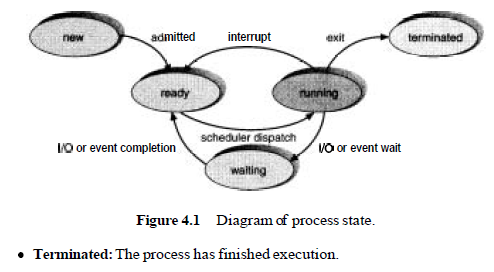
Each process may be in one of the following states:
- New: The process is being created.
- Running: Instructions are being executed.
- Waiting: The process is waiting for some event to occur (such as an I/O completion or reception of a signal).
- Ready: The process is waiting to be assigned to a processor.
- Terminated: The process has finished execution.
Orphan process
Normally after fork( ) the time slice is given to the child process. But suppose the parent process terminates before the child process, the child process becomes orphan process. But in UNIX child process is adopted by the process dispatcher. For example
#include<stdio.h>
int main( )
{
int pid;
pid = fork();
if(pid == 0 )
{
printf(“child process ID is %d”,getpid);
printf(“child's parent process ID is %d”,getppid);
sleep(50);
printf(“child process ID is %d”,getpid);
printf(“child's parent process ID is %d”,getppid);
}
else
{
printf(“parent process ID is %d”,getpid);
printf(“parent's parent process ID is %d”,getppid);
}
return 0;
}
Here when the child process goes to sleep() the parent process is executed and terminted. Then the child is adapter to process dispatcher as an Orphan process.
NOTE: orphan process is denoted as O in process table.
Zombie process
When parent process uses fork( ) to create a child process, fork( ) updates the process table with child’s entry. Now suppose the child process has terminated well before the parent does, the child process intimates about its termination to parent. But the parent may be busy (condition evaluation or critical section) so it ignores child termination. Due to this process table still contains the child’s entry and is not properly updated. Parent thinks that child is still alive based on process table entry. Such a child process is called zombie and is denoted as Z in process table. For example
#include<stdio.h>
int main( )
{
if(fork() > 0)
{
printf(“This is parent process \n”);
sleep(50);
}
return 0;
}
Sleeping beauty process
When a process goes to suspended state (sleep state) for some reason for example: executes sleep( ) it is made sleeping beauty and is denoted as S in process table. For example
int main( )
{
sleep(50);
printf(“This is a sleeping beauty process \n”);
return 0;
}
Running process
A run able process that is being executed by the processor is said to be in running state and is denoted as R in process table. For example
#include<stdio.h>
int main( )
{
for(; ;)
printf(“This is a running process \n”);
return 0;
}
Note: a process keeps changing its state during execution from running state to sleeping (suspended) state and back forth before it terminates. For example
int main( )
{
printf(“see process state in process table using command: ps -el \n”);
sleep(50);
printf(“see process state in process table using command: ps -el \n”);
for(;;);
return 0;
}
NOTE: A program can be executed as a fore ground process or a background process.
How to run a background process
A background process runs in the background and allows the execution of other process in foreground. A background process will not take input and will not print output on screen. Consider the following program:
#include<stdio.h>
int main( )
{
int i;
for(i=0;i<1000;i++)
printf(“i is %d”,i);
return 0;
} ///:~
We can execute a background process of this program using the UNIX program execution command after compiling and linking the program as
a.out &
The background process terminates if the process ends or is interrupted by DEL key.
When we boot the system a special process called scheduler (swapper) is created with process ID = 0. In UNIX scheduler is called ADAM. Scheduler manages allocation of system resources (CPU time, memory and others) for processes.
The scheduler in turn creates three child processes: process dispatcher, vhand, bdflush.
- Process dispatcher is process with process ID = 1. In UNIX process dispatcher is called init(). Process dispatcher manages the creation of login shells – UNIX shells as its child process.
- vhand is process with process ID = 2.
- bdflush is process with process ID = 3.
Login shell - UNIX shell is a child process of process dispatcher. All user processes are child processes of the UNIX shell.
UNIX uses Process ID to switch between many run able processes. Process ID identifies a unique process and also gives access to process table where information about variables and register values of that process that are useful during process switching is stored.
Swap area is the place in main memory where the UNIX kernel writes information about suspended programs while switching form one process to another.
Process Scheduling
The objective of multiprogramming is to have some process running at all times, so as to maximize CPU utilization. The objective of time-sharing is to switch the CPU among processes so frequently that users can interact with each program while it is running. A uniprocessor system can have only one running process.
If more processes exist, the rest must wait until the CPU is free and can be rescheduled.
Scheduling Queues
As processes enter the system, they are put into a job queue. This queue consists of all processes in the system.
The processes that are residing in main memory and are ready and waiting to execute are kept on a list called the ready queue. This queue is generally stored as a linked list. A ready-queue header contains pointers to the first and final PCBs in the list. We extend each PCB to include a pointer field that points to the next PCB in the ready queue.
The operating system also has other queues. When a process is allocated the CPU, it executes for a while and eventually quits, is interrupted, or waits for the occurrence of a particular event, such as the completion of an I/O request. In the case of an I/0 request, such a request may be to a dedicated tape drive, or to a shared device, such as a disk. Since the system has many processes, the disk may be busy with the I/O request of some other process. The process therefore may have to wait for the disk. The list of processes waiting for a particular I/O device is called a device queue. Each device has its own device queue (Figure 4.4).
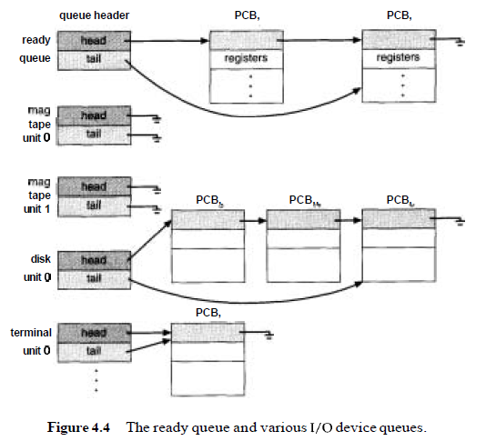
A common representation of process scheduling is a queueing diagram, such as that in Figure 4.5. Each rectangular box represents a queue. Two types of queues are present: the ready queue and a set of device queues. The circles represent the resources that serve the queues, and the arrows indicate the flow of processes in the system.
A new process is initially put in the ready queue. It waits in the ready queue until it is selected for execution (or dispatched). Once the process is assigned to the CPU and is executing, one of several events could occur:
- The process could issue an I/O request, and then be placed in an I/O queue.
- The process could create a new subprocess and wait for its termination.
- The process could be removed forcibly from the CPU, as a result of an interrupt, and be put back in the ready queue.
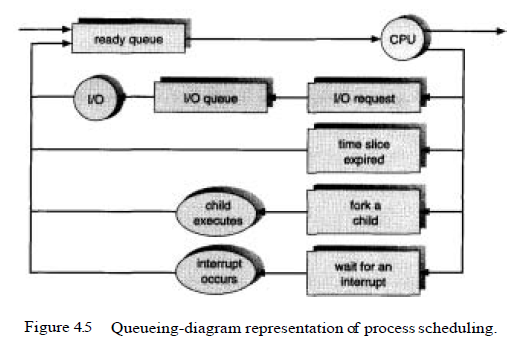
In the first two cases, the process eventually switches from the waiting state to the ready state, and is then put back in the ready queue. A process continues this cycle until it terminates, at which time it is removed from all queues and has its PCB and resources deallocated.
Schedulers
A process migrates between the various scheduling queues throughout its lifetime. The operating system must select, for scheduling purposes, processes from these queues in some fashion. The selection process is carried out by the appropriate scheduler.
In a batch system, often more processes are submitted than can be executed immediately. These processes are spooled to a mass-storage device (typically a disk), where they are kept for later execution.
- The long-term scheduler, or job scheduler, selects processes from this pool and loads them into memory for execution.
- The short-term scheduler, or CPU scheduler, selects from among the processes that are ready to execute, and allocates the CPU to one of them.
The primary distinction between these two schedulers is the frequency of their execution.
The short-term scheduler must select a new process for the CPU frequently. A process may execute for only a few milliseconds before waiting for an I/O request. Often, the short-term scheduler executes at least once every 100 milliseconds. Because of the brief time between executions, the short-term scheduler must be fast. If it takes 10 milliseconds to decide to execute a process for 100 milliseconds, then 10/(100 + 10) = 9 percent of the CPU is being used (or wasted) simply for scheduling the work.
The long-term scheduler, on the other hand, executes much less frequently. There may be minutes between the creation of new processes in the system. The long-term scheduler controls the degree of multiprogramming-the number of processes in memory. If the degree of multiprogramming is stable, then the average rate of process creation must be equal to the average departure rate of processes leaving the system. Thus, the long-term scheduler may need to be invoked only when a process leaves the system. Because of the longer interval between executions, the long-term scheduler can afford to take more time to select a process for execution.
The long-term scheduler must make a careful selection. In general, most processes can be described as either I/O bound or CPU bound. An 110-bound process spends more of its time doing I/O than it spends doing computations. A CPU-bound process, on the other hand, generates I/O requests infrequently, using more of its time doing computation than an I/O-bound process uses.
The long-term scheduler should select a good process mix of I/O-bound and CPU-bound processes. If all processes are I/O bound, the ready queue will almost always be empty, and the short-term scheduler will have little to do. If all processes are CPU bound, the I/O waiting queue will almost always be empty, devices will go unused, and again the system will be unbalanced. The system with the best performance will have a combination of CPU-bound and I/O-bound processes.
On some systems, the long-term scheduler may be absent or minimal. For example, time-sharing systems such as UNIX often have no long-term scheduler, but simply put every new process in memory for the short-term scheduler. The stability of these systems depends either on a physical limitation (such as the number of available terminals) or on the self-adjusting nature of human users. If the performance declines to unacceptable levels, some users will simply quit.
Some operating systems, such as time-sharing systems, may introduce an additional, intermediate level of scheduling. This medium-term scheduler, diagrammed in Figure 4.6, removes processes from memory (and from active contention for the CPU), and thus reduces the degree of multiprogramming. At some later time, the process can be reintroduced into memory and its execution can be continued where it left off. This scheme is called swapping. The process is swapped out, and is later swapped in, by the medium-term scheduler.
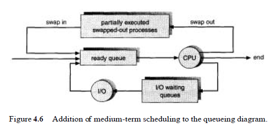
Swapping may be necessary to improve the process mix, or because a change in memory requirements has overcommitted available memory, requiring memory to be freed up. Swapping is discussed in Chapter 9.
Context Switch
Switching the CPU to another process requires saving the state of the old process and loading the saved state for the new process. This task is known as a context switch. The context of a process is represented in the PCB of a process; it includes the value of the CPU registers, the process state (Figure 4.1), and memory-management information. When a context switch occurs, the kernel saves the context of the old process in its PCB and loads the saved context of the new process scheduled to run. Context-switch time is pure overhead, because the system does no useful work while switching. Its speed varies from machine to machine, depending on the memory speed, the number of registers that must be copied, and the existence of special instructions (such as a single instruction to load or store all registers). Typical speeds range from 1 to 1000 microseconds.
Context-switch times are highly dependent on hardware support. For instance, some processors (such as the Sun UltraSPARC) provide multiple sets of
registers. A context switch simply includes changing the pointer to the current register set. Of course, if active processes exceed register sets, the system resorts to copying register data to and from memory, as before. Also, the more complex the operating system, the more work must be done during a context switch.
As we will see in Chapter 9, advanced memory-management techniques may require extra data to be switched with each context. For instance, the address space of the current process must be preserved as the space of the next task is prepared for use. How the address space is preserved, and what amount of work is needed to preserve it, depend on the memory-management method of the operating system. As we will see in Chapter 5, context switching has become such a performance bottleneck that programmers are using new structures (threads) to avoid it whenever possible.
UNIX operates on the basis of giving time slices to processes in an interleaving fashion. This is inconvenient in some cases due to lack of synchronization between the user processes having parent-child relation ship. For example
#include<stdio.h>
int main( )
{
int i, j, pid;
pid = fork();
if(pid == 0 )
{
for(i=0;i<500;i++);
printf(“value of i in child process: %d”,i);
}
else if (pid > 0)
{
for(j=0;j<500;j++);
printf(“value of j in parent process: %d”,j);
}
return 0;
}
Here both the parent and child processes print 1 to 50 but as time slice is are given to both processes in an interleaving fashion, the output order is missing and this is un-expected. We need process synchronization for this.
sleep( ) can be used for process synchronization but it may result in two problems: zombie, orphan.
#include<stdio.h>
int main( )
{
int pid;
printf(“Ready to fork \n”,i);
pid = fork();
if(pid == 0 )
{
printf(“child process id is %d \n”,getpid());
printf(“child process end \n”);
}
else if (pid > 0)
{
sleep(15);
printf(“parent process \n”,j);
}
return 0;
}
In this program the parent is put to sleep for a certain amount of time that is equal to what it takes for the child to execute before it terminates.
There are two problems with sleep().
- Suppose the child process’s code was so long that the period of time that the parent process was put to sleep for ended. In that case both the parent and child processes will start running concurrently and further suppose the parent process ended before the child process did, we would have an orphan process.
- Assume that the child process finished executing and the parent process then started executing. Assume further that the parent process had many lines of code to go through before it terminated. In that case the child process would be in zombie state.
wait() is used for perfect process synchronization and to further avoid zombie and orphan.
wait( ) is used for process synchronization between processes having parent-child relationship only. The wait() system call suspends the parent process to wait until the termination of one of its child processes. The prototype of the system call wait( ) looks like:
int wait(int * status);
- wait(&status) takes address of an integer variable - status to receive the nature of child termination and
- returns an integer value.
Return value
The system call wait( &status ) checks if the parent process has child processes.
- If no child process exist for the parent process, wait(&status) returns -1.
- If a child process exists and has not yet terminated, wait() suspends the parent process until one of its child processes terminates to avoid orphan process.
- When the child process terminates:
- (SIGCLD) signal is sent to the parent to represent child process termination.
- wait() returns the child process PID to the parent process to allow the parent process to remove it from the process table and update the process table to avoid zombie process.
For example
#include<stdio.h>
int main( )
{
int i = 0, pid;
printf(“Ready to fork \n”,i);
pid = fork();
if(pid == 0 )
{
printf(“child process start \n”,i);
printf(“value of i in child process:”);
for(i=0;i<1000;i++);
printf(“%d \t”,i);
printf(“child process end \n”,i);
}
else if (pid > 0)
{
wait(0);
printf(“parent process \n”,j);
}
return 0;
}
Here parent process waits for the child even though it is as simple printf( ) statement to print “parent process”. Suppose a parent process has created many child processes and wants to wait till all of them have terminated. We can use as many wait() system calls as there are child processes in the parent process to suspend the parent process till all the child process execute and terminate.
For example
#include<stdio.h>
int main( )
{
int i = 0, pid1, pid2, cpid;
printf(“Ready to fork \n”,i);
pid = fork();
if(pid1 == 0 )
{
printf(“1st child process start \n”,i);
printf(“value of i in child process:”);
for(i=0;i<1000;i++);
printf(“%d \t”,i);
printf(“1st child process end \n”,i);
}
else
{
pid2 = fork();
if(pid2 == 0 )
{
printf(“2nd child process start \n”,i);
printf(“value of i in child process:”);
for(i=0;i<1000;i++);
printf(“%d \t”,i);
printf(“2nd child process end \n”,i);
}
else
{
cpid = wait(0);
printf(“child process with pid %d died \n”,cpid);
cpid = wait(0);
printf(“child process with pid %d died \n”,cpid);
printf(“am parent process \n”,j);
sleep() ;
}
}
return 0;
}
Run the above program in background and run ps -el command to see the process table. You will not see any zombie or orphan process as they have already been removed. wait() returns child process pid to the parent process in one of the following 3 cases:
- A child process called exit() system call.
- A child process was terminated by a signal.
- A child process was being traced and the process stopped.
When a child process terminates (normally or abnormally) and wait() returns , if the status argument is not NULL, the value passed to exit() in the terminating child process is stored in the status argument as shown below.
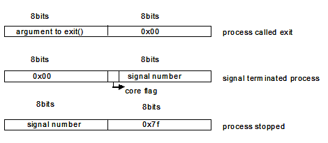
Argument value
In addition to returning the child’s pid, wait(&status) also tells the reason for child termination by updating the value of its function parameter – status(16 bits). The parameter status is sent by standard call by address. The value of this parameter if
Normally terminated:
The higher order 8-bits of the parameter status are updated with the reason for child termination and lower order 8-bits are set to zero(s). An example of normal termination- when child executes exit( ) system call. (8 MSB bits of status are updated)
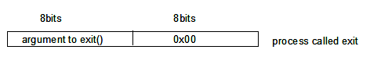
Abnormally terminated:
The lower order 8-bits of the parameter status are updated with the reason for child termination and higher order 8-bits are set to zero(s). An example of abnormal termination - when kill command is used on child as kill child’s PID eg. Kill 1645. (8 LSB bits of status are updated)
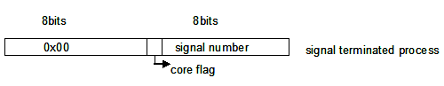
#include<stdio.h>
int main( )
{
int i = 0, pid, exit_state, status;
printf(“Ready to fork \n”,i);
pid = fork();
if(pid == 0 )
{
printf(“enter exit_state \n”,i);
scanf(“%d \t”,&i);
exit(i);
}
else
{
wait(status);
if((status & 0xff) !=0)
{
printf(“signal interrupted”) ; // if abnormally termination
}
else
{
exit_state = (int)status/256;
printf(“exit status of process with pid: %d is %d \n”,pid.exit_state); // if normally terminated
}
}
return 0;
}
When we run the above program, a child process is forked and we are asked to enter exit state. Assume we input 3, this value is stored in the variable ‘i’. The child process terminates and time slice is given to the parent process which has been put in wait() state. The value of the variable ‘i’ passed to exit() in the terminating child process is stored in the status argument of wait().
Remember whether a termination normal or abnormal will assign the value passed to exit() in the terminating child process to the status argument of wait(). Only difference is this value will update the MSB or LSB bits of status argument depending upon whether termination is normal or abnormal.
Run the above program and it results in normal termination and updates the MSB bits of status parameter of wait() with value passed to exit() with a message “exit status of process with pid: %d is %d”
Now make a small modification in the above program by placing a sleep and run the program in background and use kill command on the child pid and observe that it updates the LSB bits of status parameter of wait() with value passed to exit()with a message “signal interrupted”.
#include<stdio.h>
int main( )
{
int i = 0, pid, exit_state, status;
printf(“Ready to fork \n”,i);
pid = fork();
if(pid == 0 )
{
printf(“enter exit_state \n”,i);
scanf(“%d \t”,&i);
sleep(10);
exit(i);
}
else
{
wait(status);
if((status & 0xff) !=0)
{
printf(“signal interrupted”) ; // if abnormally termination
}
else
{
exit_state = (int)status/256;
printf(“exit status of process with pid: %d is %d \n”,pid.exit_state); // if normally terminated
}
}
return 0;
}
Kernel interaction
The following steps are done by the kernel when a process exit()s
- If the parent process of the exit()ing process has called the wait() system call, the parent process is notified that a child process has terminated (i.e., the wait() system call returns to the parent process). The parent process is passed the child’s exit status (the child’s argument to the exit() function), if the parent’s status argument was non zero.
- If the parent process of the exit()ing process is not executing wait(), the terminating process is marked as a zombie process. A zombie process is one that has terminated but its parent has not waited for it yet. The kernel releases all the resources being used by a zombie process () (its memory, for example) but has to at least maintain its exit status until its parent waits for it.
- The parent process ID of all the terminating process’ child processes is set to 1 (the init process). When a parent process terminates before its child process, it presents a problem, since the parent process IDs of any child processes are no longer valid, once the parent terminates. The way UNIX handles this is to find all processes (active, zombie) whose parent process ID equals the process ID of the terminating process and set the parent process ID of these child processes that are about to be orphaned to 1, the process ID of the init process. The init process never terminates.
- If the process ID, process group ID and terminal group ID fields of the terminating process are all equal the hangup signal SIGHUP is sent to each process that has a process group ID equal to that of the terminating process.
On a single-processor system, only one process’s code is executing at a time. Which process has control of the CPU is decided by the scheduler. The scheduler chooses which process should execute based on priority, therefore the highest priority process will be the one that is executing.
The scheduler has 64 priority levels; every process on the system is at one of these priority levels. The priority level at which a process is allowed to execute, its scheduling interactions with other processes at that level, and if or how it moves between priority levels are determined by its scheduling policy.
Tru64 UNIX provides two interfaces to the scheduler: the traditional UNIX timesharing interface (nice) and the POSIX 1003.1b real-time execution scheduling interface.
The scheduler operates on threads. A thread is a single, sequential flow of control within a process. Within a single thread, there is a single point of execution. Most traditional processes consist of a single thread. Threads execute independently, and within a multithreaded process, each thread has its own point of execution. The scheduler considers all threads on the system and runs the one with the highest priority.
Every thread has a state. The thread currently executing in the CPU is in the run state. Threads that are ready to run are in the runnable state. Threads that are waiting for a condition to be satisfied are in the wait state. Examples of conditions a thread may be waiting for are a signal from another process, a timer expiration, or an I/O completion. The scheduler selects the highest priority thread in the running or runnable state to execute on the CPU. Thus the running thread will always be the one with the highest priority.
All runnable threads have entries in the scheduler database. The scheduler database is an array of 64 lists, one list for each priority level. The scheduler orders the processes on each priority level list by placing the process that should run next at the head of the list, and the process that should wait the longest to run at the tail of the list.
Each thread has a value associated with it, known as a quantum, that defines the maximum amount of contiguous CPU time it may use before being forced to yield the CPU to another thread of the same priority.
A new thread is selected to run when one of the following events occurs:
- The running process enters a wait state.
- A higher priority process becomes runnable.
- A process changes scheduling policy.
- The quantum of the running process expires.
When an event occurs, the scheduler updates the scheduler database. If a thread in the database now has priority higher than that of the currently running thread, the current thread is pre-empted, placed into the scheduler database, and the highest priority thread is made the running thread. A scheduler that works in this manner is known as a pre-emptive priority scheduler.
When a thread is placed into a priority list in the scheduler database, it is placed at the tail of the list unless it has just been pre-empted. If it has just been pre-empted, the threads scheduling policy determines whether it is inserted at the head (real-time scheduling policy) or the tail (timeshare scheduling policy).
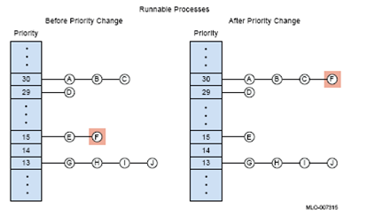
Processes A, B, and C are in the process list for the highest priority used in this illustration. Process A is at the beginning of the process list for priority 30. That means that process A executes first, then processes B and C, respectively. When no more processes remain in the process list for priority 30, the scheduler looks to the next lowest priority, finds process D at the beginning of the process list, and executes process D.
When a process changes priority, it goes to the end of the process list for its new priority. Figure 2–1 shows process F changing priority from 15 to 30. At priority 15 process F is at the end of the process list. When process F changes to priority 30, the process goes to the end of the process list for priority 30. At priority 30 process F is queued to execute after process C, but before process D.
The algorithm or set of rules that governs how the scheduler selects runnable processes, how processes are queued, and how much time each process is given to run is called a scheduling policy.
Scheduler’s algorithm or scheduling policy determines the order in which processes execute, gives you flexibility and control in determining how work is performed so that you can balance the nature of the work with the behavior of the process.
Tru64 UNIX supports the following POSIX - P1003.1b scheduling policies that are set only through a call to the sched_setscheduler() function.
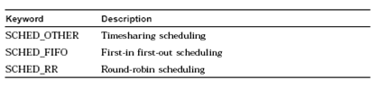
In timesharing scheduling, a process starts with an initial priority that either the user or the scheduler can change. Timesharing processes run until the scheduler recalculates process priority, based on the system load, the length of time the process has been running, or the value of nice. Under the timesharing scheduling policy, the scheduler enforces a quantum. Processes are allowed to run until they are pre-empted, yield to another process, or finish their quantum. If no equal or higher-priority processes are waiting to run, the executing process is allowed to continue. However, while a process is running, the scheduler changes the process’s priority. Over time, it is likely that a higher-priority process will exist because the scheduler adjusts priority. If a process is pre-empted or yields to another process, it goes to the end of the process list for the new priority.
With a fixed-priority scheduling policy, the scheduler does not adjust process priorities. If the application designer sets a process at priority 30, it will always be queued to the priority 30 process list, unless the application or the user explicitly changes the priority. As with all scheduling policies, fixed-priority scheduling is based on the priorities of all runnable processes. If a process waiting on the process list has a higher priority than the running process, the running process is pre-empted for the higher-priority process. With fixed-priority scheduling policies, you must explicitly set priorities by calling either sched_setparam or sched_setscheduler function. Thus, real-time processes using fixed-priority scheduling policies are free to yield execution resources to each other in an application-dependent manner.
FIFO scheduling does not enforce a quantum. Rather, each process runs to completion or until it voluntarily yields or is pre-empted by a higher-priority process. Processes scheduled under the first-in first-out scheduling policy are chosen from a process priority list that is ordered according to the amount of time its processes have been on the list without being executed. Under this scheduling policy, the process at the beginning of the highest-priority, nonempty process list is executed first. The next process moves to the beginning of the list and is executed next. Thus execution continues until that priority list is empty. Then the process at the beginning of the next highest-priority, nonempty process list is selected and execution continues. A process runs until execution finishes or the process is pre-empted by a higher-priority process.The process at the beginning of a process list has waited at that priority thelongest amount of time, while the process at the end of the list has waited the shortest amount of time. Whenever a process becomes runnable, it is placed on the end of a process list and waits until the processes in front of it have executed. When a process is placed in an empty high-priority process list, the process will pre-empt a lower-priority running process. If an application changes the priority of a process, the process is removed from its list and placed at the end of the new priority process list.
The following rules determine how runnable processes are queued for execution using the first-in first-out scheduling policy:
- When a process is pre-empted, it goes to the beginning of the process list for its priority.
- When a blocked process becomes runnable, it goes to the end of the process list for its priority.
- When a running process changes the priority or scheduling policy of another process, the changed process goes to the end of the new priority process list.
- When a process voluntarily yields to another process, it goes to the end of the process list for its priority.
A process running under the round-robin scheduling policy is subject to the same rules as a process running under the fixed-priority scheduling policy, but a quantum is imposed on the running process. When a process finishes its quantum, it goes to the end of the process list for its priority.
Processes under the round-robin scheduling policy may be pre-empted by a higher-priority process before the quantum has expired. A pre-empted process goes to the beginning of its priority process list and completes the previously unexpired portion of its quantum when the process resumes execution. This ensures that a pre-empted process regains control as soon as possible.
All applications are given an initial priority, either implicitly by the operating system or explicitly by the user. If you fail to specify a priority for a process, the kernel assigns the process an initial priority.In general, process scheduling is based on the concept that tasks can be prioritized, either by the user or by the scheduler. Each process table entry contains a priority field used in process scheduling. Conceptually, each priority level consists of a process list. The process list is ordered with the process that should run first at the beginning of the list and the process that should run last at the end of the list. Since a single processor can execute only one process at a time, the scheduler selects the first process at the beginning of the highest priority, nonempty process list for execution.
- Priority levels are organized in ranges.
- Nonprivileged user application runs in the same range as most applications using the timesharing scheduling policy.
Privileged applications (system or real-time) use higher priorities than nonprivileged user applications. In some instances, real-time and system processes can share priorities, but most real-time applications will run in a priority range that is higher than the system range.
The nice interface priorities are divided into two ranges: the higher range is reserved for the operating system, and the lower range for nonprivileged user processes. Note: A numerically high value implies a high priority level.
An application can read a process’s priority by calling the getpriority() function/ can change a process’s priority by calling the setpriority() function.
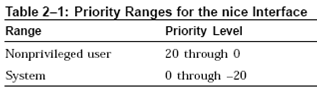 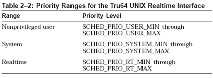
Real-time interface priorities are divided into three ranges: the highest range is reserved for real-time, the middle range is used by the operating system, and the low range is used for nonprivileged user processes.
Note: A numerically high value implies a high priority level.
Note that hardware interrupts are unaffected by process priorities, even the highest real-time priority.
Tru64 UNIX does not support priority inheritance between processes.
Wind real-time applications are organized into independent, though cooperating programs. Each of these independent programs, while executing, is called a task.
In VxWorks, tasks have immediate, shared access to most system resources, while also maintaining enough separate contexts to maintain individual threads of control.
Wind Multitasking is a fundamental mechanism for a real-time application to control and react to multiple, discrete real-world events.
Multitasking creates the appearance of many threads of execution running concurrently when, in fact, the kernel interleaves their execution on the basis of a scheduling algorithm.
Each task has its own context, which is the CPU environment and system resources that the task sees each time it is scheduled to run by the kernel. On a context switch, a task’s context is saved in the task control block (TCB).
Wind Task’s context includes:
- A thread of execution (task’s program counter), CPU registers and (optionally) floating-point registers.
- A stack for dynamic variables and function calls, I/O assignments for standard input, output, and error.
- A delay timer, a time slice timer, kernel control structures, signal handlers
- Debugging and performance monitoring values.
Kernel maintains the current state of each task in the system. A task changes from one state to another as the result of kernel function calls made by the application. When created, tasks enter the suspended state. Activation is necessary for a created task to enter the ready state. spawning primitive, allows a task to be created and activated with a single function. Tasks can be deleted from any state.
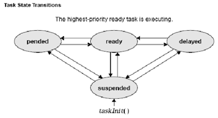
Multitasking requires a scheduling algorithm to allocate the CPU to ready tasks. Priority-based pre-emptive scheduling is the default algorithm in wind, but you can select round-robin scheduling for your applications as well.
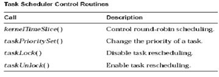
If a task that has higher priority than the current task becomes ready to run, the kernel immediately saves the current task’s context and switches to the context of the higher priority task to ensure that the CPU is allocated to the highest priority task that is ready to run.
Wind kernel has 256 priority levels. Priority 0 is the highest and priority 255 is the lowest. Tasks are assigned a priority when created;however, while executing, a task can change its priority using taskPrioritySet( ).
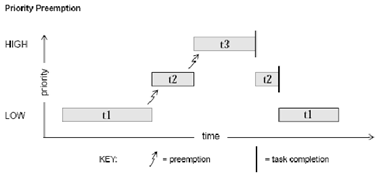
Without round-robin scheduling, when multiple tasks of equal priority must share the processor, a single task can usurp the processor by never blocking, thus never giving other equal-priority tasks a chance to run.
Round-robin scheduling achieves fair allocation of the CPU to tasks of the same priority by an approach known as time slicing. Each task of a group of tasks executes for a defined interval, or time slice; then another task executes for an equal interval, in rotation. The allocation is fair in that no task of a priority group gets a second slice of time before the other tasks of a group are given a slice.
- Round-robin scheduling can be enabled with the routine kernelTimeSlice( ), which takes a parameter for a time slice, or interval.
- A run-time counter is kept for each task and incremented on every clock tick. When the specified time-slice interval is completed, the counter is cleared and the task is placed at the tail of the queue of tasks at its priority.
- New tasks joining a priority group are placed at the tail of the group with a run-time counter initialized to zero. If a task is Pre-empted by a higher priority task during its interval, its run-time count is saved and then restored when the task is again eligible for execution.
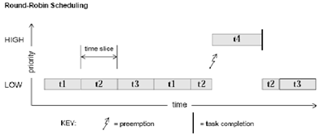
The wind scheduler can be explicitly disabled and enabled on a per-task basis with the routines taskLock( ) and taskUnlock( ).
When a task disables the scheduler by calling taskLock( ), no priority-based pre-emption can take place while that task is running. However, if the task explicitly blocks or suspends, the scheduler selects the next highest-priority eligible task to execute. When the pre-emption-locked task unblocks and begins running again, pre-emption is again disabled.
Note: pre-emption locks prevent task context switching but do not lock out interrupt handling.
Wind Tasking Control provides the means for task creation, control, and information.
Task Creation and Activation routines are used to create, initialize and activate tasks.

The arguments to taskSpawn( ) are the new task’s name (an ASCII string), priority, an “options” word, stack size, main routine address, and 10 arguments to be passed to the main routine as startup parameters:
tid = taskSpawn ( name, priority, options, stacksize, main, arg1, …arg10 ); The taskSpawn( ) routine creates the new task context, which includes allocating the stack and setting up the task environment to call the main routine (an ordinary subroutine) with the specified arguments. The new task begins execution at the entry to the specified routine.
The taskSpawn( ) routine itself embodies the lower-level steps of allocation, initialization, and activation. The initialization and activation functions are provided by the routines taskInit( ) and taskActivate( ); however, we recommend you use these routines only when you need greater control over allocation or activation.
When a task is spawned, you can specify an ASCII string of any length to be the task name. wind returns a task ID, which is a 4-byte handle to the task’s data structures. Most wind task routines take a task ID as the argument specifying a task. wind uses a convention that a task ID of 0 (zero) always implies the calling task. If a NULL pointer is supplied for the name argument of taskSpawn( ), then wind assigns a unique name. The name is of the form tN, where N is a decimal integer that increases by one for each unnamed task that is spawned. These Task Name/Id Routines are used for Task Name/Id information.
Task Information routines get information about a task by taking a snapshot of a task’s context when called. The state of a task is dynamic, and the information may not be current unless the task is known to be dormant (that is, suspended).


Tasks can be dynamically deleted from the system. These routines are used to delete tasks and protect tasks from unexpected deletion.

Tasks implicitly call exit( ) if the entry routine specified during task creation returns(ends). Alternatively, a task can explicitly call exit( ) at any point to kill itself. A task can kill another task by calling taskDelete( ). When a task is deleted, no other task is notified of this deletion. The routines taskSafe( ) and taskUnsafe( ) avoid problems that stem from unexpected deletion of tasks. The routine taskSafe( ) protects a task from deletion by other tasks. This protection is often needed when a task executes in a critical region or engages a critical resource. When finished with its critical resource, the protected task can make itself available for deletion by calling taskUnsafe( ), which readies any deleting task.
Protection operates only on the calling task. A task cannot make another task safe or unsafe from deletion.

Task Control routines provide direct control over a task’s execution.

Tasks may require restarting during execution in response to some catastrophic error. The restart mechanism, taskRestart( ), recreates a task with the original creation arguments. Delay operations provide a simple mechanism for a task to sleep for a fixed duration. Task delays are often used for polling applications. For example, to delay a task for half a second without making assumptions about the clock rate, call:
taskDelay (sysClkRateGet ( ) / 2); Instead of taskDelay( ), you can use the POSIX routine nanosleep( ) to specify a delay directly in time units. Only the units are different; the resolution of both delay routines is the same, and depends on the system clock. taskDelay( ) moves the calling task to the end of the ready queue for tasks of the same priority. In particular, you can yield the CPU to any other tasks of the same priority by “delaying” for zero clock ticks:
taskDelay (NO_WAIT); /* allow other tasks of same priority to run */
A “delay” of zero duration is only possible with taskDelay( ); nanosleep( ) considers it an error.
The POSIX 1003.1b scheduling routines let you use a portable interface to get and set task priority, get the scheduling policy, get the maximum and minimum priority for tasks, and if round-robin scheduling is in effect, get the length of a time slice.
POSIX and Wind scheduling routines differ in the following ways:
- POSIX scheduling is based on processes, while Wind scheduling is based on tasks. Tasks and processes differ in several ways. Most notably, tasks can address memory directly while processes cannot; and processes inherit only some specific attributes from their parent process, while tasks operate in exactly the same environment as the parent task.
- VxWorks documentation uses the term Pre-emptive priority scheduling, while the POSIX standard uses the term FIFO. But the Scheduling policy is the same priority-based policy (same working principle).
- POSIX scheduling algorithms are applied on a process-by-process basis. The Wind methodology, on the other hand, applies scheduling algorithms on a system-wide basis—either all tasks use a round-robin scheme, or all use a Pre-emptive priority scheme.
- POSIX priority numbering scheme is the inverse of the Wind scheme. In POSIX, the higher the number, the higher the priority; in the Wind scheme, the lower the number, the higher the priority.
The routines sched_setparam( ) and sched_getparam( ) set and get a task’s priority, respectively. Both routines take a task ID and a sched_param structure (defined in h/sched.h). A task ID of 0 sets or gets the priority for the calling task. The sched_priority member of the sched_param structure specifies the new task priority when sched_setparam( ) is called. The routine sched_getparam( ) fills in the sched_priority with the specified task’s current priority.

The POSIX routine sched_getscheduler( ) returns the current scheduling policy.There are two valid scheduling policies in VxWorks: Pre-emptive priorityscheduling (in POSIX terms, SCHED_FIFO) and round-robin scheduling by priority (SCHED_RR).
The routine sched_setscheduler( ) is designed to set both scheduling policy and priority for a single POSIX process (which corresponds in most other cases to a single Wind task). In the VxWorks kernel, sched_setscheduler( ) controls only task priority, because the kernel does not allow tasks to have scheduling policies that differ from one another. If its policy specification matches the current system-wide scheduling policy, sched_setscheduler( ) sets only the priority, thus acting like sched_setparam( ). If its policy specification does not match the current one, sched_setscheduler( ) returns an error. The only way to change the scheduling policy is to change it for all tasks; there is no POSIX routine for this purpose. To set a system-wide scheduling policy, use the Wind function kernelTimeSlice( ) described in Round-Robin Scheduling.
The routines sched_get_priority_max( ) and sched_get_priority_min( ) return the maximum and minimum possible POSIX priority values, respectively. If round-robin scheduling is enabled, you can use sched_rr_get_interval( ) to determine the length of the current time-slice interval. This routine takes as an argument a pointer to a timespec structure (defined in time.h), and writes the number of seconds and nanoseconds per time slice to the appropriate elements of that structure.
UNIX provides a number of ways to share or communicate data between processes.
- In traditional single process programming, different modules within a single process can communicate and share data with each other using global variable, functional call arguments and return values.
- But in multi process with multiple thread environments with each process executing within its own address space (in the same system or on across different systems over a network), Inter Process Communications are used to communicate and share data with each other. Information can be shared between Unix processes in various ways.

Three ways to share information between Unix processes.
- The two processes on the left are sharing some information that resides in a file in the filesystem. To access this data, each process must go through the kernel (e.g., read, write, lseek, and the like). Some form of synchronization is required when a file is being updated, both to protect multiple writers from each other, and to protect one or more readers from a writer.
- The two processes in the middle are sharing some information that resides within the kernel. A pipe is an example of this type of sharing, as are System V message queues and System V semaphores. Each operation to access the shared information now involves a system call into the kernel.
- The two processes on the right have a region of shared memory that each process can reference. Once the shared memory is set up by each process, the processes can access the data in the shared memory without involving the kernel at all. Some form of synchronization is required by the processes that are sharing the memory.
NOTE:
Nothing restricts any of the IPC techniques that we describe to only two processes. Any of the techniques that we describe work with any number of processes.
We can define the persistence of any type of IPC as how long an object of that type remains in existence.

- A process-persistent IPC object remains in existence until the last process that holds the object open closes the object. Examples are pipes and FIFOs.
- A kernel-persistent IPC object remains in existence until the kernel reboots or until the object is explicitly deleted. Examples are System V message queues, semaphores, and shared memory. Posix message queues, semaphores, and shared memory must be at least kernel-persistent, but may be filesystem- persistent, depending on the implementation.
- A filesystem-persistent IPC object remains in existence until the object is explicitly deleted. The object retains its value even if the kernel reboots. Posix message queues, semaphores, and shared memory have this property, if they are implemented using mapped files (not a requirement).

Kernel maintains data structure of information for each IPC channel about it’s key, access permissions etc., in IPC identifier (msgid, semid,etc.,).
struct ipc_perm
{
ushort uid; // owner’s user id.
ushort gid; // owner’s group id.
ushort cid; // creator’s user id.
ushort cgid; // creator’s group id.
ushort mode; // access modes
ushort seq; // slot usage seq number.
ushort key; // key.
};
Summary of system calls for IPC |
Message Queue |
Semaphore |
Shared Memory |
Include file |
sys/msg.h |
sys/sem.h |
sys/shm.h |
Create/ open system call. |
msgget( ) |
semget( ) |
shmget( ) |
Control operations system call |
msgctl( ) |
semctl( ) |
shmctl( ) |
IPC operations system calls |
msgsnd( ) |
semop( ) |
shmat( ) |
msgrcv( ) |
|
shmdt( ) |
Pipe is a kernel primitive/facility used for unidirectional data transfer. Pipe is a one-way communication channel and is created using pipe() system call as
int pipe(int *filedes);
pipe ( ) takes an array of two elements to return two file descriptors (filedes[0]-which is open for reading, filedes[1]-which is open for writing) if successful otherwise -1 is returned.
For Example
main( )
{
int p[2];
pipe(p);
printf(“ read end p[0]: %d \t write end p[1]: %d”, p[0], p[1]);
}

fork( ) can only duplicate file descriptors of a pipe. So pipe remains global to processes with parent-child relationship and can be shared by parent and child.
For example:
main( )
{
int p[2], pid;
pipe(p);
pid = fork( );
if(pid= = 0)
printf(“In child p[0]: %d p[1]: %d \n”, p[0], p[1]);
else
printf(“In parent p[0]: %d p[1]: %d \n”, p[0], p[1]);
}

But it is better to close read end in one process and write end in another process so that system file descriptor resources are efficiently used.
Pipe Operations: Pipe supports below file operations
- read( )
- write( )
- fcntl( ) and
- fstat( )
1. read( ): read( ) blocks a process waiting for data on an empty pipe if atleast one opened write end exists in any of the two process-parent/child.
For example:
main( )
{
int pid, p[2], retval;
char inbuff[5];
pipe(p);
pid = fork( );
if(pid = = 0)
printf(“child exiting \n”); // child terminates so its read & write ends are closed.
else
{
retval = read(p[0], inbuff,5); // parent gets blocked as its write end is still open.
printf(“value returned: %d \n”, retval);
}
}
To avoid read( ) getting blocked on an empty pipe two approaches are used: fcntl( ) & fstat( ).
2. fcntl( ): is used to set an open file attributes using its file descriptor as
int fcntl(int filedes, int cmd, int arg);
UNIX pipe is implemented as file so fcntl( ) works fine.
fcntl( ) takes 3 args to set a file descriptor flag that instructs read( ) to perform a nonblock I/O as
fcntl(fd, F_SETFL, O_NDELAY); // fd is read end, F_SETFL is set to O_NDELAY for nonblock I/O.
3. fstat( ): is used to get an open file attributes using its file descriptor as
int fstat(int filedes, struct stat *buff);
UNIX pipe is implemented as file so fstat( ) works fine.
fstat( ) is used to know whether pipe is empty or not? as
fstat(fd, &pipeinfo);
if(pipeinfo.st_size = = 0) // condition becomes true if pipe is empty
4. write( ) does a successful write if atleast one opened read end exists otherwise kernel send SIGPIPE signal to terminate that process.
For example:
main( )
{
int pid, p[2], retval;
char inbuff[5] = “hari”;
pipe(p);
pid = fork( );
if(pid = = 0)
printf(“child exiting \n”); // child terminates so its read & writes
else // ends are closed.
{
close(p[0]); // parent read end closed.
retval = write(p[1], inbuff,1); // kernel sends SIGPIPE signal.
printf(“value returned: %d \n”, retval);
}
}
Demerits of pipe:
- Pipe can be used for unidirectional data transfer between two processes that have parent-child relationship only and not between unrelated processes .
- Unix pipes are implemented as files but pipes don’t support some file operations like lseek( ) ect.,
- Pipes are not permanent entities and depend on process lifetime(destroyed on process termination).
- Pipe is a stream based I/O and data boundaries are unknown.
FIFO (named pipes) is also one-way communication channel and is created using
int mknod(char *path, int mode, int dev=0);
where path is FIFO name, mode is file access mode, device is 0 always. FIFOs works in the same way as pipes and are treated as files. FIFOs are permanent entities and don’t depend on process lifetime. Pipes are global to processes having parent-child relationship and can be shared between parent-child processes only where as FIFOs are global to the entire system and can be shared between two unrelated processes.
FIFO operations: FIFOs support below file operations-
mknode( ) - FIFO is created before used for communication between processes using mknode( ). mknode( ) returns 1 if successful otherwise -1 is returned.
int mknod(char *path, int mode, int dev=0);
open( ) - FIFO is opened to read/write using open( ). open( ) returns file descriptor if successful otherwise -1 is returned.
int open(char *path, int oflag);
close( ) - FIFO is closed after communication using close( ). close( ) returns 1 if successful otherwise -1 is returned.
int close(int filedes);
Message queue is a one-way communication channel implemented as first-in first-out. Message queue is stored in the kernel data structures and is global to entire system- all unrelated processes can access them. Message queue is identified by a message queue identifier-msqid that can be used by unrelated processes send or received messages. Every message on the message queue has following attributes:
- long integer type.
- length of the data portion of the message(can be zero).
- data( if length>0).
So message queue can hold messages of different types and length i.e variable length messages are allowed.

For every message queue in the system, the kernel maintains the following data structure:
struct msqid_ds
{
struct ipc_perm msg_perm; // operation permissions.
struct msg *msg_first; // ptr to first message on queue.
struct msg *msg_last; // ptr to last message on queue.
ushort msg_cbytest; // current # bytes on queue.
ushort msg_qnum; // current # of messages on queue.
ushort msg_ qbytes; // max # of bytes allowed on queue.
ushort msg_lspid; // pid of last msgsnd( ).
ushort msg_lrpid; // pid of last msgrcv( ).
time_t msg_stime; // time of last msgsnd( ).
time_t msg_rtime; // time of last msgrcv( ).
time_t msg_ctime; // time of last msgctl( ).
};
ipc_perm contains the access permissions of the message queue.
Every message on message queue is described by msg structure, a linked list of messages.
struct msg
{
struct msg *msg_next; // ptr to next message on message queue.
long msg_type; // message type.
short msg_ts // message text size.
short msg_spot // message text map address.
};
Eg: message queue with three messages is stored in kernel as

Note: ipcs –q command at the prompt gives existing message queues in system.
creating a new message queue or accessing an existing message queue
A new message queue is created or an existing message queue is accessed using msgget( )
int msgget(key_t key, int msgflag);
where key is message queue name, msgflag specify mode of creation and access permissions that are used to set ipc_perm data structure stored in the kernel. From now on whenever a user tries to access the IPC channel the mode word of ipc_perm data structure is queried to check whether user access rights match with those in the mode word of ipc_perm data structure stored in the kernel. msgflag can take a combination of the following constants.
Numeric |
Symbolic |
Description |
0400 |
MSG_R |
Read by owner. |
0200 |
MSG_A |
Alter by owner. |
0040 |
MSG_R>>3 |
Read by group. |
0020 |
MSG_A>>3 |
Alter by group. |
0004 |
MSG_R>>6 |
Read by world |
0002 |
MSG_A>>6 |
Alter by world. |
IPC_CREAT |
Create a new msqid (or) access an existing msqid for the specified key. |
IPC_CREAT | IPC_EXCL |
Create a new msqid for the specified key, only if it doesn’t already exist otherwise return error. |
msgget( ) returns message queue identifier if successful otherwise -1 is returned.
message queue IPC operations: IPC operations-msgsnd( ) and msgrcv( ) can be performed on a message queue to put/read a message as
sending a message: A message is put on a message queue using msgsnd( ) as
int msgsnd(int msqid, struct msgbuff *ptr, int length, int flag);
struct msgbuff
{
long mtype; // message type, must be >0.
char mtext[10]; // user-defined message data.
};
where msqid is message queue identifier, ptr is pointer to message structure- msgbuff that contains the actual message being sent, length is message length in bytes. flag can be either 0 or IPC_NOWAIT
- 0- to tell the system should wait if the send operation can’t be completed.
- room is available for the message to be sent.
- message queue is removed from the system.
- process receives a signal that is caught.
- IPC_NOWAIT- to tell the system should not wait if the send operation can’t be completed.
msgsnd( ) returns 0 if successful otherwise -1 is returned.
receiving a message: a message is read from a message queue using msgrcv( ) as
int msgrcv(int msqid, struct msgbuff *ptr, int length, int msgtype, int flag);
where msqid is message queue identifier, ptr is pointer to message structure- msgbuff that contains the actual message read, length is message length in bytes.
flag can be either 0 or IPC_NOWAIT or MSG_NOERROR or combination.
- 0- to tell the system should wait if the receive operation can’t be completed until:
- a message of the requested type is available.
- message queue is removed from the system.
- process receives a signal that is caught.
- IPC_NOWAIT- to tell the system should not wait if the receive operation can’t be completed.
- MSG_NOERROR- to tell the system to just truncate the data portion and return without an error if the actual data portion of the received message > length.
msgtype specifies which message on the queue to read:
- msgtype = 0 – read the oldest message on the queue.
- msgtype > 0 – read the first message with message type equal to msgtype.
- msgtype < 0 – read the first message with the lowest type <=|msgtype|.
msgrcv( ) returns the number of bytes of data in the received message if successful otherwise -1 is returned.
controlling message queue: various control operations(delete, get/set ipc_perm) on a message queue are performed using msgctl( ) as
int msgctl(int msqid, int cmd, struct msqid_ds *buff);
where msqid is message queue identifier returned during msgget( ). Depending upon the value of cmd command, buff of type struct msqid_ds can take one of the following value:
cmd |
meaning |
struct msqid_ds |
IPC_RMID |
remove message queue from the system |
0 |
IPC_STAT |
to access members of msqid_ds of message queue. |
msqid_ds *buff |
IPC_SET |
to set members of msqid_ds of message queue. |
msqid_ds *buff |
GETPID |
returns last process pid. |
0 |
deleting a message queue: a message queue is deleted using msgctl( )
int msgctl(int msqid, int cmd=IPC_RMID,0);
getting msqid_ds of message queue:
int msgctl(int msqid, int cmd=IPC_STAT, &buff);
setting msqid_ds of message queue:
int msgctl(int msqid, int cmd=IPC_SET, &buff);
multiplexing messages: mtype associated with each message allows multiple processes to multiplex messages onto a single message queue. For example: In a client-server model with one server and multiple clients- mtype of 1 can be used to indicate a message from any client to the server and client can pass its pid as part of message so that the server can reply to the client using client’s pid as mtype of the reply as

Merits: There is no constraints on send( ) or receive( ) operations as in pipes/FIFOs.
Semaphores are not used for exchanging large amounts of data as are pipes, FIFOs and message queues. Semaphores are intended to let multiple processes synchronize their operations like access to shared memory. In order to provide resource synchronization between different processes, semaphore must be stored in kernel space.
A binary semaphore is an integer valued variable that is a resource counter. The value of the variable at any point in time is the number of resources available. if we have one resource, then the valid semaphore values are zero and one.
- To obtain a resource that is controlled by a semaphore, a process needs to test its current value, and if the current value is greater than zero, decrement the value by one.
- if the current value is zero, the process must wait until the value is greater than zero (ie wait for other processes to release resource)
- To release a resource that is controlled by a semphore, a process increments the semaphore value.
NOTE: System V implementation of semaphores is done in the kernel, to guarantee that a group of operations on semaphore is done atomically, with respect to other processes. For example: the below implementation of semaphores - to test the current value, followed by a decrement of that value must be atomic.
for(;;)
{
if(semaphore_value>0)
{
semaphore_value--;
break;
}
}
The system V implementation expands the meaning of a Binary Semaphore in two directions:
1. A semaphore is not a single value but a set of non-negative integers. the number of non-negative integer values in the set can be from one to a system defined maximum value.
2. Each value in the set is not restricted to zero and one, instead can assume any non-negative integer, upto a system defined maximum value.
Semaphore set is a synchronization primitive used for:
- Process synchronization (mutual exclusion) for critical section (lines of code that need atomic operation). semaphores are intended to let multiple processes synchronize their operations.
- Resource synchronization - synchronize access to system resources by multiple processes. Eg: shared memory segments.
Semaphore set is stored in the kernel data structures and is global to entire system- so that all unrelated processes can access them. Semaphore set is identified by a semaphore identifier- semid that can be used by processes as a process/resource synchronization primitive.

For every semaphore set in the system, kernel maintains the following data structure:
#include <sys/types.h>
#include <sys/ipc.h>
struct semid_ds
{
struct ipc_perm sem_perm; // operation permissions
struct sem *sem_base; // ptr to first semaphore in the set.
ushort sem_nsems; // # of semaphores in the set.
time_t sem_otime; // time of last semop.
time_t sem_ctime // time of last change.
};
ipc_perm contains the access permissions of the semaphore set. Every member of semaphore set is described by sem structure as
#include <sys/types.h>
#include <sys/ipc.h>
struct sem
{
ushort semval; // semaphore value, nonnegative.
short sempid; // pid of last operation.
ushort semncnt; // # awaiting semval > cval
ushort semzcnt; // # awaiting semval = 0
};
For example: semaphore set with two members is stored in kernel as

Note: ipcs –s command at the prompt gives existing semaphores in system.
creating a new semaphore set or accessing an existing semaphore set
A new semaphore set is created or an existing semaphore is accessed using semget( )
#include <sys/types.h>
#include <sys/ipc.h>
#include <sys/sem.h>
int semget(key_t key, int nsems, int semflag);
semget( ) returns semaphore identifier if successful otherwise -1 is returned.
key is semaphore name, nsems is number of semaphores in the set, nsems should be atleast 1 otherwise semget( ) will fail. we cannot change the number of semaphores in a set once it is created. if we are not creating a new semaphore but only accessing existing semaphore set (ie we didnot specify the IPC_CREAT flag for the semflag argument) we can specify this argument as zero. semflag specify mode of creation and access permissions that are used to set ipc_perm data structure stored in the kernel. From now on whenever a user tries to access the IPC channel the mode word of ipc_perm data structure is queried to check whether user access rights match with those in the mode word of ipc_perm data structure stored in the kernel. semflag can take a combination of the following constants.
Numeric |
Symbolic |
Description |
0400 |
SEM_R |
Read by owner. |
0200 |
SEM_A |
Alter by owner. |
0040 |
SEM_R>>3 |
Read by group. |
0020 |
SEM_A>>3 |
Alter by group. |
0004 |
SEM_R>>6 |
Read by world |
0002 |
SEM_A>>6 |
Alter by world. |
IPC_CREAT |
Create a new semid (or) access an existing semid for the specified key. |
IPC_CREAT | IPC_EXCL |
Create a new semid for the specified key, only if it doesn’t already exist otherwise return error. |
Note: unix can create a maximum of 10 set of semaphores. A set of semaphores can have a maximum of 25 sub-semaphores.
If semaphore is created with certain key that was already used for an existing semaphore, semget( ) still returns semaphore identifier of the existing semaphore. But creation of semaphore a second time can be avoided using IPC_EXCL in semget( ) as
int semget(key_t key, int nsem, int semflag| IPC_EXCL);
For example:
main( )
{
int semid, key, flag, nsem, i;
for(i=0; i<2;i++)
{
key = (key_t)0x30;
flag = IPC_CREAT| 0666| IPC_EXCL;
nsem = 1;
semid = semget(key, nsem, flag);
if(semid>0)
printf(“created semaphore with id; %d”, semid);
else
perror(“semget”);
}
} // delete semaphore with key 30 before running this program.
Creation of a semaphore a second time must use a new mode (semflag) that is either same or subset of old mode (semflag) used while creating semaphore for the first time otherwise semget( ) returns error. For example:
main( )
{
int semid, key, flag, nsem, i;
key = (key_t)0x30;
flag = IPC_CREAT| 0644;
nsem = 1;
semid = semget(key, nsem, flag);
if(semid>0)
printf(“created semaphore with id; %d”, semid);
else
perror(“1st semget”);
flag = IPC_CREAT| 0444; // semget successful 0444 is subset of 0666
semid = semget(key, nsem, flag);
if(semid>0)
printf(“created semaphore with id; %d”, semid);
else
perror(“2nd semget”);
flag = IPC_CREAT| 0666; // semget returns error as 0666 > 0644
semid = semget(key, nsem, flag);
if(semid>0)
printf(“created semaphore with id; %d”, semid);
else
perror(“2nd semget”);
} // delete semaphore with key 30 before running this program.
Creation of a semaphore a second time must use either same or less then the number of sub-semaphores (nsem) used while creating the semaphore for the first time otherwise semget( ) returns error. For example:
main( )
{
int semid, key, flag, nsem, i;
key = (key_t)0x30;
flag = IPC_CREAT| 0644;
nsem = 2;
semid = semget(key, nsem, flag);
if(semid>0)
printf(“created semaphore with id; %d”, semid);
else
perror(“1st semget”);
nsem = 1; // semget is successful as nsem (1 < 2)
semid = semget(key, nsem, flag);
if(semid>0)
printf(“created semaphore with id; %d”, semid);
else
perror(“2nd semget”);
nsem = 3; // semget returns error as nsem (3 > 2)
semid = semget(key, nsem, flag);
if(semid>0)
printf(“created semaphore with id; %d”, semid);
else
perror(“2nd semget”);
} // delete semaphore with key 30 before running this program.
semaphore set IPC operations: Once a semaphore is created using semget( ), IPC operations are performed on one or more semaphore members in the set using semop( ) as
#include <sys/types.h>
#include <sys/ipc.h>
#include <sys/sem.h>
int semop(int semid, struct sembuf **opsptr, unsigned int nops);
opsptr points to an sembuf array of nops elements.
sembuf
{
ushort sem_num; // semaphore #
short sem_op; // semaphore operation.
short sem_flg; // operation flags.
};
sembuf contains operation(sem_op) to be done on a particular semaphore member (sem_num). sem_op can take following value:
- positive -
- zero -
- negative –
sem_flg can be either 0 or IPC_NOWAIT or SEM_UNDO or combination.
- 0-to tell the system should wait if the operation can’t be completed until:
- requested semaphore is available.
- semaphore is removed from the system.
- process receives a signal that is caught.
- IPC_NOWAIT-to tell the system should not wait if the operation can’t be completed.
- SEM_UNDO- to tell the system to reset the semaphore if the process terminates.
The array of operations passed to semop( ) are done atomically by the kernel. semop( ) returns 0 if successful otherwise -1 is returned.
controlling a semaphore set: Various control operations (delete, get/set member/all, get/set ipc_perm) on a semaphore set are performed using semctl( ) as
int semctl(int semid, int semnum, int cmd, union semun arg);
union semun
{
int val; // used for SETVAL only.
struct semid_ds *buff; // used for IPC_STAT and IPC_SET.
ushort *array; // used for IPC_GETALL and IPC_SETALL.
}arg;
where semid is semaphore identifier returned during semget( ), semnum is semaphore number. Depending upon the value of cmd command, semnum and arg of type union semun can take one of the following value:
cmd |
semnum |
meaning |
union semun |
IPC_RMID |
0 |
remove semaphore set from the system |
0 |
IPC_GETALL |
0 |
returns all semaphore members’ values. |
ushort *array |
IPC_SETALL |
0 |
sets all semaphore members’ value to arg->array |
ushort *array |
GETVAL |
ith member |
returns semaphore member’s value |
0 |
SETVAL |
ith member |
sets semaphore member’s value to arg.val |
int val |
IPC_STAT |
0 |
to access members of semid_ds of semaphore set. |
semid_ds *buff |
IPC_SET |
0 |
to set members of semid_ds of semaphore set. |
semid_ds *buff |
GETPID |
ith member |
returns last process pid that has set semaphore member. |
0 |
deleting a semaphore set: a semaphore is deleted using semctl( )
int semctl(int semid, 0, int cmd=IPC_RMID,0);
getting semaphore member:
int semctl(int semid, int nsem=i, int cmd =GETVAL, 0);
setting semaphore member:
int semctl(int semid, int nsem=i, int cmd=SETVAL, union semun arg.val);
getting all semaphore members:
int semctl(int semid, 0, int cmd=IPC_GETALL, union semun arg->array);
setting all semaphore members:
int semctl(int semid, 0, int cmd=IPC_GETALL, union semun arg->array);
getting semid_ds of semaphore set:
int semctl(int semid, 0, int cmd=IPC_STAT, union semun arg->buff);
setting semid_ds of semaphore set:
int semctl(int semid, 0, int cmd=IPC_SET, union semun arg->buff);
getting last process pid that has set semaphore member:
int semctl(int semid, int nsem=i, int cmd =GETPID, 0);
Demerits: semaphore cannot be used for exchanging large amounts of data as pipes, FIFOs and message queues.
Shared memory allows two or more processes to work on same area in memory but these processes have to coordinate and synchronize the use of memory using semaphores.
while using message queues (pipe/FIFO), to share data there is a lot of overhead. For example, to transfer data using message queue (pipe/FIFO) from server’s input file to client’s output file:
- server read from the input file: (a). kernel reads data from input file to its internal buffer (b). kernel copies data from internal buffer to server’s buffer.
- server writes data to message queue(pipe/FIFO).
- client reads data from message queue(pipe/FIFO).
- client writes to the output file: (a). kernel copies data from client’s buffer to its internal buffer (b). kernel writes data from its internal buffer to output file.

where as while using shared memory, data becomes instantly available to all processes. For example, to transfer data using shared memory from server’s input file to client’s output file.
Server and client have to coordinate and synchronize the use of memory using semaphores. Shared memory should be accessed by one process at a time.
- server accesses shared memory segment using semaphore.
- server reads data from input file into the shared memory segment.
- server signal client using semaphore of an event.
- client transfers data from shared memory segment to output file.

Semaphore set is stored in the kernel data structures and is global to entire system- all unrelated processes can access them. Shared memory is identified by a shared memory identifier- shmid that can be used by processes as a shared memory segment access primitive.

For every shared memory segment in the system, kernel maintains the following data structure:
struct shmid_ds
{
struct ipc_perm shm_perm; // operation permissions
int shm_segsz; // segment size.
struct xxx shm_yyy; // ptr to shared memory segment
//( h/w and implementation dependent).
ushort shm_lpid; // pid of last operation.
ushort shm_cpid; // creator pid.
ushort shm_nattch; // cuurent # attached.
ushort shm_cnattch; // in-core # attached.
time_t shm_atime; // time of last attach.
time_t shm_dtime; // time of last detach.
time_t shm_ctime // time of last change.
};
ipc_perm contains the access permissions of the shared memory segment.
Note: ipcs –m command at the prompt gives existing shared memory segments in system.
creating a new share memory segment or accessing an existing share memory segment
A new shared memory segment is created or an existing shared memory segment is accessed using shmget( )
int shmget(key_t key, int size, int shmflag);
where key is shared memory segment name, size specifies the size of shared memory segment in bytes. shmflag specify mode of creation and access permissions that are used to set ipc_perm data structure stored in the kernel. From now on whenever a user tries to access the IPC channel the mode word of ipc_perm data structure is queried to check whether user access rights match with those in the mode word of ipc_perm data structure stored in the kernel. shmflag can take a combination of the following constants.
Numeric |
Symbolic |
Description |
0400 |
SHM_R |
Read by owner. |
0200 |
SHM_A |
Alter by owner. |
0040 |
SHM_R>>3 |
Read by group. |
0020 |
SHM_A>>3 |
Alter by group. |
0004 |
SHM_R>>6 |
Read by world |
0002 |
SHM_A>>6 |
Alter by world. |
IPC_CREAT |
Create a new shmid (or) access an existing shmid for the specified key. |
IPC_CREAT | IPC_EXCL |
Create a new shmid for the specified key, only if it doesn’t already exist otherwise return error. |
shmget( ) returns shared memory segment identifier if successful otherwise -1 is returned.
shared memory segment IPC operations:
IPC operations-shmat( ) and shmdt( ) can be performed to attach/detach shared memory segment to calling process as
attaching shared memory segment:
A shared memory segment is attached to and accessed by a calling process using shmat( ) as
int shmat(int shmid, char *shmaddr, int shmflag);
where shmid is shared memory segment identifier. shmat( ) returns the starting address of the shared memory segment. The rules for determining this address are as follows:
- shmaddr=0, returned address is selected by the system for the caller.
- shmaddr>0, returned address depends on whether caller specifies SHM_RND value for the shmflag:
- if SHM_RND is not specified, segment is attached at the address specified by the shmaddr.
- if SHM_RND is specified, segment is attached at the address specified by the shmaddr-rounded down by constant- SHMLBA.
For practical purposes, shmat( ) is called with shmaddr=0 and let the kernel select the address. By default, shared memory segment is attached for both reading and writing by calling process. shmflag can be either 0 or SHM_RDONLY or SHM_RND
- 0- segment is attached at the address specified by the shmaddr.
- SHM_RDONLY- for read only access to shared memory segment.
- SHM_RND- segment is attached at the address specified by the shmaddr-rounded down by constant- SHMLBA.
shmat( ) returns the starting address of the shared memory segment if successful otherwise -1 is returned.
detaching shared memory segment:
A shared memory segment is detached by a calling process using shmdt( ) as
int shmdt(char *shmaddr);
controlling a shared memory segment: Various control operations(delete, get/set ipc_perm) on a shared memory segment are performed using msgctl( ) as
int shmctl(int shmid, int cmd, struct shmid_ds *buff);
where msqid is message queue identifier returned during msgget( ).Depending upon the value of cmd command, buff of type struct msqid_ds can take one of the following value:
cmd |
meaning |
union semun |
IPC_RMID |
remove shared memory from the system |
0 |
IPC_STAT |
to access members of shmid_ds of shared memory. |
shmid_ds *buff |
IPC_SET |
to set members of shmid_ds of shared memory. |
shmid_ds *buff |
GETPID |
returns last process pid. |
0 |
deleting a shared memory segment: a shared memory segment is deleted using shmctl( )
int shmctl(int shmid, int cmd=IPC_RMID,0);
getting shmid_ds of shared memory segment:
int shmctl(int shmid, int cmd=IPC_STAT, &buff);
setting shmid_ds of shared memory segment:
int shmctl(int shmid, int cmd=IPC_SET, &buff);
A signal is a notification to a process about an event. Signals are asynchronous software interrupts to a process about an event. Signals can be sent:
- by one process to another only if both processes(sending process & receiving process) have same effective user id or sending process must be the super user.
- by kernel to a process.
All the signals are defined in the header file <signal.h>. Every signal has mnemonic name. Examples of signals are:
| mnemonic name |
S No. |
Default action |
Generated by (process/kernel) |
Description |
| SIGALRM |
1 |
Exit |
|
Alarm Clock |
SIGBUS |
2 |
Core |
|
Bus Error |
SIGCHLD |
3 |
Ignore |
|
Child Status |
SIGCONT |
4 |
Ignore |
|
Continued |
SIGEMT |
5 |
Core |
|
Emulation Trap |
SIGFPE |
6 |
Core |
|
Arithmetic Exception |
SIGHUP |
7 |
Exit |
|
Hang up |
SIGILL |
8 |
Core |
|
Illegal Instruction |
SIGINT |
9 |
Exit |
|
Interrupt |
SIGKILL |
10 |
Exit |
|
Killed |
SIGPIPE |
11 |
Exit |
|
Broken Pipe |
SIGPOLL |
12 |
Ignore |
|
Socket I/O Possible |
SIGPROF |
13 |
Exit |
|
Profiling Timer Expired |
SIGPWR |
14 |
Ignore |
|
Power Fail/Restart |
SIGQUIT |
15 |
Core |
|
Quit |
SIGABRT |
16 |
Core |
|
Abort |
SIGSEGV |
17 |
Core |
|
Segmentation Fault |
SIGSTOP |
18 |
Stop |
|
Stopped (signal) |
SIGSYS |
19 |
Core |
|
Bad System Call |
SIGTERM |
20 |
Exit |
|
Terminated |
SIGTRAP |
21 |
Core |
|
Trace/Breakpoint Trap |
SIGTSTP |
22 |
Stop |
|
Stopped (user) |
SIGTTIN |
23 |
Stop |
|
Stopped (tty input) |
SIGTTOU |
24 |
Stop |
|
Stopped (tty output) |
SIGURG |
25 |
Ignore |
|
Urgent Socket Condition |
SIGUSR1 |
26 |
Exit |
|
User Signal 1 |
SIGUSR2 |
27 |
Exit |
|
User Signal 2 |
SIGVTALRM |
28 |
Exit |
|
Virtual Timer Expired |
SIGWINCH |
29 |
Ignore |
|
Window Size Change |
SIGXCPU |
30 |
Core |
|
CPU time limit exceeded |
SIGXFSZ |
31 |
Core |
|
File size limit exceeded |
SIGWAITING |
32 |
Ignore |
|
All LWPs blocked |
SIGLWP |
33 |
Ignore |
|
Virtual Inter processor Interrupt for Threads Library |
SIGAIO |
34 |
Ignore |
|
Asynchronous I/O |
Signal generation
Signals can be generated in the following 5 ways:
- kill() system call,
- kill command,
- Terminal control characters,
- H/W conditions and
- S/W conditions.
kill() system call (process generated)
The kill() system call allows a process to send a signal to another process or to itself. The kill() system call takes two parameters: process id of the process to which the signal is to be sent and the signal that is to be sent as
int kill(int pid, int sig); where pid can be {0,-1, negative number} and sig is signal number.
Depending upon the values of the arguments the kill system call does different things:
- If pid=0, signal is sent to all processes in sender’s process group.
- If pid= -1 & sender is not super user, signal is sent to all processes whose real user id equals the effective user id of the sending process.
- If pid= -1 & sender is super user, signal is sent to all processes except system processes (system process are processes with pids = 0,1: scheduler, process dispatcher, shell).
- If pid is negative (but not -1), signal is sent to all processes whose process group id equals absolute value of pid.
- If sig=0, no signal is sent and used for error checking.
The kill() system call can be used to send signals between parent and child (as they know each other’s process id) or between two unrelated processes(if they know each other pids for eg by reading a file containing their pids) belonging to same process group.
#include <signal.h>
void sigkey(int signo)
main()
{
int pid = 0;
pid = fork();
if(pid ==0)
{
signal(SIGINT, sigkey);
sleep(2);
}
else
{
kill(pid, SIGINT);
sleep(5);
printf(“parent exiting \n”);
}
}
void sigkey(int signo)
{
printf(“ You have sent a signal with signal no.: %d to the CHILD process “, signo);
}
In the forked child process we make a call to the signal() system call to handle SIGINT signal. The sleep() in child process ensures that the time slice is given to the parent process. The parent process calls the kill() system call with its child pid and SIGINT to send SIGINT signal to the child process and sleep() in parent causes time slice to be given to child process. Then the child process catches the SIGINT signal to invoke user defined function and terminates. Later parent process terminates.
NOTE: A process can not send signal to any other arbitrary process. A process can send signal to another only if both processes(sending process & receiving process) have same effective user id or sending process must be the super user.
kill command (process generated)
The kill command is a program that takes pid as command line argument and in turn invokes the kill( ) system call to send signal.
terminal/keyboard control characters (kernel generated)
Certain terminal control characters (keyboard interrupts) causes kernel to generate signal and send it to the running process. For example:
- Interrupt character (ctrl + ‘c’ or DEL): generates SIGINT signal to terminate the running process.
- Quit character (ctrl + ‘\’): generates SIGQUIT signal to terminate the running process and generate core image/dump of the process. The core image can be used with a debugger for analysis.
- Terminal suspend character (ctrl + ‘Z’): generates “stop process” SIGTSTP signal immediately to stop(suspend) the running process.
- Delayed terminal suspend character (ctrl + ‘Y’): generates “stop process” SIGTSTP signal when the process attempts to read the character(instead of when it is typed) to stop(suspend) the running process.
A process can also be stopped using SIGSTOP signal. The SIGCONT signal resumes a stopped process.
NOTE: terminal generated signals are sent not only to the running process but to all processes in the control group of the terminal.
H/W conditions (kernel generated)
Certain H/W conditions generate signals. For example floating point arithmetic errors generate SIGFPE signal, referencing an address outside a process’s address space generates SIGSEGV signal. These signals are sent from kernel to the process.
S/W conditions (kernel generated)
Certain software conditions that can be noticed by the kernel cause signals to be generated. For example SIGURG signal is generated when out-of-band data arrives on a socket.
Signal Handling
signal() system call
When a process receives a signal from another process/ from kernel code it is left to the receiving process what to do with the signal. The receiving process can do one of the following with the signal:
- A process can provide a signal handler that is called whenever a specific type of signal occurs. This is called catching the signal.
- A process can choose to ignore the signal. All signals other than SIGKILL and SIGSTOP can be ignored.
- A process can allow the default action to happen as mentioned in the signal table shown above. Default action can be to terminate process/ terminate process and generate core image/stop process/ ignore the signal.
Receiving process can specify the way (3 options mentioned above) signal must be handled using signal( ) system call as shown in the below prototype
#include <signal.h>
typedef void (*sighandler_t)(int);
sighandler_t signal(int signum, sighandler_t handler);
signal is a function that returns a pointer to a function that returns a integer. The signal( ) system call takes two parameters:
signum is signal number or mnemonic name of the signal generated. sighandler_t is a pointer to a function of return type void and it can take one of the following values.
- SIG_DFL - default action is taken- suspend/terminate receiving process.
- SIG_IGN - signal is ignored as if it is not received.
- func – address of a user defined function – signal handler of return type void.
When the func() is invoked to handle a signal, the integer signal number is passed as the first argument to the func(). This allows a single function to handle multiple signals determining at runtime which signal occurred. When the signal handler returns, the process that received the signal continues from where it was interrupted.
catching a signal:
When a signal is send to a process by another process or kernel code then the receiving process can catch the signal to execute some user define function. For example:
#include <signal.h>
void sigkey(int signo)
main()
{
printf(“press DEL key \n”);
signal(SIGINT, sigkey);
for( ; ;);
}
void sigkey(int signo)
{
printf(“ You have pressed DEL key”);
printf(“ You have sent a signal with signal no.: %d to the process “, signo);
}
When the above program is run it keeps on running without terminating even when the interrupt key DEL is pressed because SIGINT signal is handled or redefined to invoke the function sigkey() rather than its default action.
Now if DEL is pressed again the program terminates. Because, when ever the system call signal() is called the second parameter sigkey() which is the function is stored in the memory. When the interrupt key DEL is pressed, this function sigkey() is executed and then immediately cleared from memory. As a result if the interrupt key DEL is pressed again the SIGINT signal will invoke the default action code which will terminate the program.
Now if the function sigkey() can remain permanently in the memory, the SIGINT signal is always handled to execute the function sigkey() without terminating the program. For this after the function sigkey() is executed and cleared from memory, the sigkey() function is restored in memory by using another call to signal() system call as
#include <signal.h>
void sigkey(int signo)
main()
{
printf(“press DEL key \n”);
signal(SIGINT,sigkey);
for( ; ;);
}
void sigkey(int signo)
{
printf(“ You have pressed DEL key”);
printf(“ You cannot kill the process with signal no.: %d “, signo);
signal(SIGINT, sigkey);
}
ignoring a signal:
When a signal is send to a process by another process or kernel code then the receiving process can ignore the signal. For example:
#include <signal.h>
main()
{
printf(“press DEL key \n”);
signal(SIGINT, SIG_IGN);
for( ; ;);
}
When the above program is run it keeps on running without terminating. When the interrupt key DEL is pressed SIGINT signal is generated and sent to the process. The signal SIGINT is handled by the receiving process using the signal() system call to invoke the code associated with SIG_IGN which ignores the signal. So the program keeps on running.
NOTE: press ctrl + ‘\’ to terminate the program using SIGQUIT signal.
Executing default action:
When a signal is send to a process by another process or kernel code then the receiving process can choose to execute the default action for that signal provided by kernel. For example:
#include <signal.h>
main()
{
printf(“press DEL key \n”);
signal(SIGINT, SIG_DFL);
for( ; ;);
}
When the above program is run it keeps on running without terminating. When the interrupt key DEL is pressed SIGINT signal is generated and sent to the process. The signal SIGINT is handled by the receiving process using the signal() system call to invoke the code associated with SIG_DFL which will terminate the process. So the program terminates.
catching multiple signals:
We can also catch more than one signal in the receiving process. for example two signals SIGINT, SIGQUIT can be handled as
#include <signal.h>
void sigkey(int signo)
main()
{
printf(“press DEL or ctrl + ‘\’ keys \n”);
signal(SIGINT,sigkey);
signal(SIGQUIT,sigkey);
for( ; ;);
}
void sigkey(int signo)
{
printf(“ You cannot kill the process with signal no.: %d “, signo);
signal(SIGINT, sigkey);
signal(SIGQUIT,sigkey);
}
If DEL or ctrl + ‘\’ are pressed a message is displayed with signal number without terminating the process because both SIGINT, SIGQUIT signals are handled.
SIGALRM - alarm signal
A process can set up an alarm clock by calling the alarm() system call. After the alarm() system call the process carries on its job.
unsigned int alarm(unsigned int sec);
The sec argument specifies the number of seconds to elapse before the kernel is to send the process a SIGALRM signal. If the sec argument is 0, any previously set alarm is cancelled. The SIGALRM signal is used to tell the process that the clock’s timer has expired.
The alarm() system call is used for setting software timeouts. For example, the internet ping program uses this system call to send network message to another system every second. Whenever we want to place a time limit on some activity we can use the alarm() system call. If the process takes longer than the alarm set, it is interrupted by the SIGALRM signal. For example we can interrupt a process and terminate it after a specified number of seconds as
#include <signal.h>
main()
{
alarm(5);
for( ; ;);
}
The program terminates after 5 seconds with a message “Alarm call”. When the program is run in the background the process terminates after 5 seconds but the message is flashed on the screen only after ps –el system call is made. The message is not printed on the screen but saved to some buffer in memory and the buffer contents are emptied on screen only when ps –el system call is made.
NOTE: the sleep() function is used to pause for a specified number of seconds
unsigned int sleep(unsigned int sec);
The sleep() system call is internally implemented using alarm() and pause(). The alarm() system call waits for the time period specified to elapse. The pause() function is like infinite for loop and basically waits for a signal to be sent before it retuns/terminates. The moment the time period elapses, SIGALRM signal is sent and terminates the pause(). The sleep() looks like this
#include <signal.h>
main()
{
alarm(i);
pause();
}
NOTE: pause() keeps the process active and is like for loop. A for loop will attract CPU attention and wastes CPU time where as a pause() does not.
In the program below the SIGALRM signal is handled using signal() system call to invoke user defined function as
#include <signal.h>
void abc(void)
main()
{
signal(SIGALRM,abc);
alarm(30*60);
pause(); // instead of for loop
}
void abc(void)
{
printf(“User defined function”);
}
NOTE: Run the above program in the background. The alarm() informs the kernel when the specified time (30*60) is elapsed. The kernel in turn generates a SIGALRM which results in the user defined function abc() being called and the program terminates. However, a ps –el command will yet show this program in memory since the user defined function does not have a termination statement in it. An explicitly defined exit(0) will terminate the process and hence remove it from the process table as
#include <signal.h>
void abc(void)
main()
{
signal(SIGALRM,abc);
alarm(30*60);
pause(); // instead of for loop
}
void abc(void)
{
printf(“User defined function”);
exit(0);
}
SIGHUP - hangup signal
When a terminal is closed using ctrl + ‘D’ at the UNIX prompt, kernel will send SIGHUP signal to terminate all the processes (back ground processes also) for which it is control terminal. SIGHUP signal is also sent to all the processes in a process group when the process group leader terminates. For example, assume that out of 10 background processes we have, we want one to remain active even after SIGHUP signal I sent. All we have to do is ignore the signal in that process as
#include <signal.h>
main()
{
printf(“press ctrl + ‘D’ keys \n”);
signal(SIGHUP, SIG_IGN); // Run this program in background
for( ; ;);
}
When this process is run in the background and ctrl + ‘D’ is pressed we can still see that the process exists by ignoring the SIGHUP signal.
NOTE: use ps –el command at the shell to see process table.
SIGINT - terminal/keyboard interrupt character signal
When a process keeps on running without termination then we can terminate it by pressing an interrupt character (DEL). Then a part of the kernel that handles keyboard interrupts is notified about interrupt key been pressed. The kernel then sends a SIGINT signal to all processes associated with the terminal and they terminate.
NOTE: the shell will ignore the SIGINT and will not terminate.
#include <signal.h>
main()
{
Printf(“use DEL to terminate this program”);
for( ; ;);
}
Compile and run the program. Then press DEL key to terminate it.
SIGQUIT - terminal/keyboard Quit character signal
When a process keeps on running without termination then we can terminate it by pressing an quit character (ctrl + ‘\’). Then a part of the kernel that handles keyboard interrupts is notified about interrupt key been pressed. The kernel then sends a SIGQUIT signal to all processes associated with the terminal and they terminate.
NOTE: the shell will ignore the SIGQUIT and will not terminate.
#include <signal.h>
main()
{
Printf(“use ctrl + ‘\’ to terminate this program”);
for( ; ;);
}
Compile and run the program. Then press DEL key to terminate it.
SIGILL - illegal instruction signal
When an illegal instruction such as divide by zero is encountered in the program the UNIX will generate error message “Illegal Instruction - core dumped” using the signal SIGILL as.
#include <signal.h>
main()
{
int i = 0, j= 50;
signal(SIGILL,SIG_DFL);
j = j/i;
}
However we can handle this SIGILL signal and execute our own function sigkey() as
#include <signal.h>
void sigkey(int signo)
main()
{
int i = 0, j= 50;
signal(SIGILL, sigkey);
j = j/i;
}
void sigkey(int signo)
{
printf(“ the process received a signal with signal no.: %d “, signo);
exit(0);
}
SIGTRAP signal
SIGABRT signal
SIGEMT signal
SIGFPE signal
SIGKILL signal
SIGBUS signal
SIGSEGV signal
SIGSYS - bad argument system call signal
When a process passes an invalid argument to a system call, the kernel always generates the SIGSYS signal that invokes the code that displays the error message “ A Bad system call – Core dumped”.
#include<fcntl.h>
#include <signal.h>
main()
{
int fd;
signal(SIGSYS,SIG_DFL);
fd = open(“filename.c”,O_RDONLY);
lseek(fd,01,5) // invalid parameter 5 can be only <=2
}
The SIGSYS signal can be handled to invoke user defined code as
#include<fcntl.h>
#include <signal.h>
void abc();
main()
{
int fd;
signal(SIGSYS,SIG_DFL);
fd = open(“filename.c”,O_RDONLY);
lseek(fd,01,5) // invalid parameter 5 can be only <=2
}
void abc()
{
printf(“ illegal use of system call \n “);
exit(0);
}
Now the user defined code is executed instead of default code.
SIGPIPE signal
SIGTERM signal
SIGUSR1 signal
SIGUSR2 signal
SIGCLD - signal
When a child process terminates it sends SIGCLD signal to its parent. Then the parent on receiving the SIGCLD signal it proceeds to delete the child’s entry from the process table as
SIGPWR signal
SIGWINCH signal
SIGURG signal
SIGPOLL signal
SIGSTOP signal
SIGTSTP signal
SIGCONT signal
SIGTTIN signal
SIGTTOU signal
SIGVTALRM signal
SIGPROF signal
SIGXCPU signal
SIGXFSZ signal
SIGWAITING signal
SIGLWP signal
SIGAIO signal
In earlier versions of UNIX, signals were unreliable that is signals could get lost. An event could occur to generate a signal but the process would never get notified. So changes were made in 4.3 BSD & System V to make signals reliable. The following features were added to provide more reliability:
- Signal handlers remain installed in memory after the signal is handled and any subsequent occurrence will also be handled. Earlier UNIX versions reset the signal action to SIG_DFL right before the signal handler is called and any occurrence of the same signal before the signal handler could call the signal() system call again, would be lost.
- A process must be able to prevent selected signals from occurring when desired. But we don’t want the signal discarded. Instead we want the signal to be remembered so that when the process is ready the signal is delivered. 4.3 BSD terms this blocking a signal and System V calls it holding a signal.
- If a signal is generated second time, while the process is handling its first occurrence, the signal handler is not called again. Instead the second occurrence of the signal is remembered. Once the signal handler that is processing the first occurrence of the signal returns normally, only then the same signal handler is called again to handle the remembered signal.
Signal mask is a concept in 4.3 BSD. Signal mask is a 32-bit integer that specifies one or more signal values. One bit is used for each signal value thus limiting the total number of signals to 32. The sigmask() macro defined in the header file <signal.h> takes signal number as arg and generates signal masks. For example to generate a signal mask containing the signal values for the SIGQUIT and SIGINT signals, we write
int mask;
mask = sigmask(SIGQUIT) | sigmask(SIGINT);
NOTE: System V doesn’t support the concept of signal mask.
The sigblock() system call is used to block one or more signals as
int sigblock(int mask);
The set of signals specified by the mask are added to the set of signals currently blocked. This system call returns the signal mask that was in effect before the call.
The sigsetmask() system call is used to unblock one or more signals that were blocked previously as
int sigsetmask(int mask);
- Signal can be temporarily buffered (sigblock( ) or sighold( )) when process is busy and unblocked(sigsetmask( ) or sigrelse( )) to handle when it is ready.
- 4.3 BSD UNIX: can buffer more than one signal at a time.
- sigmask( ) macro: defined in <signal.h> takes signal number as arg and generates signal mask that is 32-bit integer that specifies a combination of signals as int signalmask = sigmask(SIGQUIT) | (SIGINT);
- sigblock( ): can temporarily buffer one or more signals when process is busy as int sigblock(int signalmask);
- sigsetmask( ): can unblock one or more signals when process is ready as
- int sigblock(int signalmask);
- System V UNIX: each signal is individually buffered.
- sighold( ): can temporarily buffer one or more signals when process is busy as
int sigblock(int signal);
- sigrelse( ): can unblock one or more signals when process is ready as
int sigblock(int signal);
Signals can be used between parent-child processes or two unrelated processes but cannot be used for data transfer. Pipes can be used but only between parent-child processes.
POSIX 1003.1 standardized the reliable signal functions developed under 4.3BSD and SVR3.

POSIX 1003.1b extended the POSIX 1003.1 definition to include better support for signals in real-time environments. A real-time application uses the sigqueue function instead of the kill function. It may also use the sigwaitinfo or sigtimedwait function instead of the sigsuspend function.

Sending a Signal to another Process

kill( ): a process can send a signal to another process using the kill function.
The first arg to the kill function is the process ID of the receiving process, or one of the following special values:
The second arg to the kill function is the name or number of the signal to be sent.
Specifying a Signal Action sigaction( ):
sigaction allows a process to specify the action to be taken for a given signal. When you set a signal-handling action with a call to the sigaction function, the action remains set until you explicitly reset it with another call to the sigaction function.
The first argument to the sigaction function specifies the signal for which the action is to be defined.
The second argument is a sigaction structure that specifies the action to be taken when the process receives the signal specified in the first argument. If this argument is specified as NULL, signal handling is unchanged by the call to the sigaction function, but the call can be used to inquire about the current handling of a specified signal.
The third argument is a sigaction structure that receives from the sigaction function the action that was previously established for the signal. An application typically specifies this argument so that it can use it in a subsequent call to the sigaction function that restores the previous signal state. This allows you to activate handlers only when they are needed, and deactivate them when they may interfere with other handlers set up elsewhere for the same signal.


The sigaction structure has two different formats, defined in signal.h, distinguished by whether the sa_handler member specifies a traditional POSIX 1003.1 signal handler or a POSIX 1003.1b real-time signal handler:
For POSIX 1003.1 signal handling:
struct sigaction (
void (*sa_handler) (int);
sigset_t sa_mask;
int sa_flags;
};
For POSIX 1003.1b signal handling:
struct sigaction (
void (*sa_sigaction) (int, siginfo_t *, void *);
sigset_t sa_mask;
int sa_flags;
};
Use the sa_handler member of the sigaction structure to identify the action associated with a specific signal, as follows:
To ignore the signal, specify SIG_IGN. In this case, the signal is never delivered to the process. Note that you cannot ignore the SIGKILL or SIGSTOP signals.
To accept the default action for a signal, specify SIG_DFL. To handle the signal, specify a pointer to a signal handling function.When the signal handler is called, it is passed a single integer argument, the number of the signal.
sockets:
Intertask communication facilities permit independent tasks to coordinate their actions. VxWorks supplies a rich set of intertask communication mechanisms, including:
- Shared memory, for simple sharing of data.
- Semaphores, for basic mutual exclusion and synchronization.
- Message queues and pipes, for intertask message passing within a CPU.
- Sockets and remote procedure calls, for network-transparent intertask communication.
- Signals, for exception handling.
VxMP, provides intertask communication over the backplane for tasks running on different CPUs. This includes shared semaphores, shared message queues, shared memory, and the shared name database.
It is common for a single copy of a subroutine or subroutine library to be invoked by many different tasks. For example, many tasks may call printf( ), but there is only a single copy of the subroutine in the system.
Shared Code
A single copy of code executed by multiple tasks is called shared code.

Re-entrancy
Shared code must be reentrant. A subroutine is reentrant if a single copy of the routine can be called from several task contexts simultaneously without conflict. Such conflict typically occurs when a subroutine modifies global or static variables, because there is only a single copy of the data and code. A routine’s references to such variables can overlap and interfere in invocations from different task contexts.
The majority of VxWorks routines use the following reentrancy techniques:
– dynamic stack variables
– global and static variables guarded by semaphores
– task variables
Dynamic stack variables
Many subroutines are pure code, having no data of their own except dynamic stack variables. They work exclusively on data provided by the caller as parameters.
The linked-list library, lstLib, is a good example of this. Its routines operate on lists and nodes provided by the caller in each subroutine call.
Subroutines of this kind are inherently reentrant. Multiple tasks can use such routines simultaneously without interfering with each other, because each task does indeed have its own stack.

Guarded Global and Static Variables
Some libraries encapsulate access to common data. One example is the memory allocation library, memLib, which manages pools of memory to be used by many tasks. This library declares and uses its own static data variables to keep track of pool allocation.
This kind of library requires some caution because the routines are not inherently reentrant. Multiple tasks simultaneously invoking the routines in the library might interfere with access to common variables. Such libraries must be made explicitly reentrant by providing a mutual-exclusion mechanism to prohibit tasks from simultaneously executing critical sections of code. The usual mutual-exclusion mechanism is the semaphore facility provided by semLib
Task Variables
Some routines that can be called by multiple tasks simultaneously may require global or static variables with a distinct value for each calling task. For example, several tasks may reference a private buffer of memory and yet refer to it with the same global variable.
Task variables that allows 4-byte variables to be added to a task’s context, so that the value of such a variable is switched every time a task switch occurs to or from its owner task. Typically, several tasks declare the same variable (4-byte memory location) as a task variable.
Each of those tasks can then treat that single memory location as its own private variable;

Each task variable adds a few microseconds to the context switching time for its task, because the value of the variable must be saved and restored as part of the task’s context. Consider collecting all of a module’s task variables into a single dynamically allocated structure, and then making all accesses to that structure indirectly through a single pointer. This pointer can then be the task variable for all tasks using that module.
Multiple Tasks with the Same Main Routine
With VxWorks, it is possible to spawn several tasks with the same main routine.
Each spawn creates a new task with its own stack and context. Each spawn can also pass the main routine different parameters to the new task. In this case, the same rules of reentrancy described in Task Variables, p.50 apply to the entire task.
This is useful when the same function needs to be performed concurrently with different sets of parameters. For example, a routine that monitors a particular kind of equipment might be spawned several times to monitor several different pieces of that equipment. The arguments to the main routine could indicate which particular piece of equipment the task is to monitor.
multiple joints of the mechanical arm use the same code. The tasks manipulating the joints invoke joint( ). The joint number (jointNum) is used to indicate which joint on the arm to manipulate.

Shared memory allows tasks to communicate is by accessing shared data structures. Because all tasks in VxWorks exist in a single linear address space, sharing data structures between tasks is trivial; Global variables, linear buffers, ring buffers, linked lists, and pointers can be referenced directly by code running in different contexts.

shared address space simplifies exchange of data, so interlocking access to memory is crucial to avoid contention. Many methods exist for obtaining exclusive access to resources, and vary only in the scope of the exclusion. Such methods include disabling interrupts, disabling Pre-emption, and resource locking with semaphores.
Interrupt Locks and Latency:
disabling interrupts/Interrupt Locks guarantees exclusive access to the CPU. interrupt locking should be used where mutual exclusion involves ISRs the duration of interrupt lockouts should be kept short. This can't be used as a general-purpose mutual-exclusion method for most real-time systems, because it prevents the system from responding to external events for the duration of these locks.

Pre-emptive Locks and Latency:
Disabling pre-emption offers a somewhat less restrictive form of mutual exclusion. While no other task is allowed to Pre-empt the current executing task, ISRs are able to execute. This method can lead to unacceptable real-time response. Tasks of higher priority are unable to execute until the locking task leaves the critical region, even though the higher-priority task is not itself involved with the critical region.

Semaphores are the primary means for addressing the requirements of both mutual exclusion and task synchronization.
For mutual exclusion, semaphores interlock access to shared resources. They provide mutual exclusion with finer granularity than either interrupt disabling or Pre-emptive locks.
For synchronization, semaphores coordinate a task’s execution with external events.
Wind supports 3 semaphores:
- Binary Semaphore: The fastest, most general-purpose semaphore. Optimized for synchronization or mutual exclusion.
- Mutual exclusion Semaphore: A special binary semaphore optimized for problems inherent in mutual exclusion: priority inheritance, deletion safety, and recursion.
- Counting Semaphore: is like the binary semaphore, but keeps track of the number of times a semaphore is given. Optimized for guarding multiple instances of a resource.
VxWorks provides Wind semaphores, designed expressly for VxWorks and POSIX semaphores, designed for portability.
Instead of defining a full set of semaphore control routines for each type of semaphore, the Wind semaphores provide a single uniform interface for semaphore control. Only the creation routines are specific to the semaphore type. The semBCreate( ), semMCreate( ), and semCCreate( ) routines return a semaphore ID that serves as a handle on the semaphore during subsequent use by the other semaphore-control routines. When a semaphore is created, the queue type is specified. Tasks pending on a semaphore can be queued in priority order (SEM_Q_PRIORITY) or in first-in first-out order (SEM_Q_FIFO).

Binary Semaphore addresses task coordination: mutual exclusion and synchronization. Binary Semaphore can be viewed as a flag that is available (full)/ unavailable (empty).
semTake( ):
When a task takes a binary semaphore, with semTake( ), the outcome depends on whether the semaphore is available(full)/unavailable (empty) at the time of the call. If the semaphore is available (full), the semaphore becomes unavailable (empty) and the task continues executing immediately. If the semaphore is unavailable (empty), the task is put on a queue of blocked tasks and enters a state of pending on the availability of the semaphore.


semGive( ):
When a task gives a binary semaphore, using semGive( ), the outcome also depends on whether the semaphore is available (full) or unavailable (empty) at the time of the call. If the semaphore is already available (full), giving the semaphore has no effect at all. If the semaphore is unavailable (empty) and no task is waiting to take it, then the semaphore becomes available (full). If the semaphore is unavailable (empty) and one or more tasks are pending on its availability, then the first task in the queue of blocked tasks is unblocked, and the semaphore is left unavailable (empty).
Mutual Exclusion:
Binary semaphores interlock access to a shared resource efficiently. Unlike disabling interrupts or Pre-emptive locks, binary semaphores limit the scope of the mutual exclusion to only the associated resource. In this technique, a semaphore is created to guard the resource. Initially the semaphore is available (full).When a task wants to access the resource, it must first take that semaphore. As long as the task keeps the semaphore, all other tasks seeking access to the resource are blocked from execution. When the task is finished with the resource, it gives back the semaphore, allowing another task to use the resource. Thus all accesses to a resource requiring mutual exclusion are bracketed with semTake( ) and semGive( ) pairs:


Synchronization:
When used for task synchronization, a semaphore can represent a condition or event that a task is waiting for. Initially the semaphore is unavailable (empty). A task or ISR signals the occurrence of the event by giving the semaphore.Another task waits for the semaphore by calling semTake( ). The waiting task blocks until the event occurs and the semaphore is given.

init( ) routine creates the binary semaphore, attaches an ISR to an event, and spawns a task to process the event. The routine task1( ) runs until it calls semTake( ). It remains blocked at that point until an event causes the ISR to call semGive( ). When the ISR completes, task1( ) executes to process the event.
Difference in sequence between semaphores used for mutual exclusion and those used for synchronization:
For mutual exclusion, the semaphore is initially full, and each task first takes, and then gives back the semaphore. For synchronization, the semaphore is initially empty, and one task waits to take the semaphore given by another task.
SemFlush( ): Broadcast synchronization allows all processes that are blocked on the same semaphore to be unblocked atomically.The routine semFlush( ) addresses this class of synchronization problem by unblocking all tasks pended on a semaphore.
is a specialized binary semaphore designed to address issues inherent in mutual exclusion, including priority inversion, deletion safety, and recursive access to resources. The fundamental behavior of the mutual-exclusion semaphore is identical to the binary semaphore, with the following exceptions:
It can be used only for mutual exclusion.
It can be given only by the task that took it.
It cannot be given from an ISR.
The semFlush( ) operation is illegal.
Priority inversion
arises when a higher-priority task is forced to wait an indefinite period of time for a lower-priority task to complete.Eg: Consider the scenario t1, t2, and t3 are tasks of high, medium, and low priority, respectively. t3 has acquired some resource by taking its associated binary guard semaphore. When t1 Pre-empts t3 and contends for the resource by taking the same semaphore, it becomes blocked. If we could be assured that t1 would be blocked no longer than the time it normally takes t3 to finish with the resource, there would be no problem because the resource cannot be Pre-empted. However, the low-priority task is vulnerable to Pre-emption by medium-priority tasks (like t2), which could inhibit t3 from relinquishing the resource. This condition could persist, blocking t1 for an indefinite period of time.

Priority inheritance:
Mutual-exclusion semaphore has the option SEM_INVERSION_SAFE, which enables a priority-inheritance algorithm. Priority-inheritance protocol assures that a task that owns a resource executes at the priority of the highest-priority task blocked on that resource. Once the task priority has been elevated, it remains at the higher level until all mutual-exclusion semaphores that the task owns are released; then the task returns to its normal, or standard, priority. Hence, the “inheriting” task is protected from Pre-emption by any intermediate-priority tasks. This option must be used in conjunction with a priority queue(SEM_Q_PRIORITY).Eg: Consider the scenario priority inheritance solves the problem of priority inversion by elevating the priority of t3 to the priority of t1 during the time t1 is blocked on the semaphore.This protects t3 and indirectly t1, from Pre-emption by t2.
SemId = semMCreate (SEM_Q_PRIORITY | SEM_INVERSION_SAFE);

Deletion Safety:
Another problem of mutual exclusion involves task deletion. Within a critical region guarded by semaphores, it is often desirable to protect the executing task from unexpected deletion. Deleting a task executing in a critical region can be catastrophic. The resource might be left in a corrupted state and the semaphore guarding the resource left unavailable, effectively preventing all access to the resource. The primitives taskSafe( ) and taskUnsafe( ) provide one solution to task deletion. However, the mutual-exclusion semaphore offers the option SEM_DELETE_SAFE, which enables an implicit taskSafe( ) with each semTake( ), and a taskUnsafe( ) with each semGive( ). In this way, a task can be protected from deletion while it has the semaphore. This option is more efficient than the primitives taskSafe( ) and taskUnsafe( ), as the resulting code requires fewer entrances to the kernel.
SemId = semMCreate (SEM_Q_FIFO | SEM_DELETE_SAFE);
Recursive Resource Access:
Mutual-exclusion semaphores can be taken recursively, means it can be taken more than once by the task that owns it before finally being released. Recursion is useful for a set of routines that must call each other but that also require mutually exclusive access to a resource. This is possible because the system keeps track of which task currently owns the mutual-exclusion semaphore. Before being released, a mutual-exclusion semaphore taken recursively must be given the same number of times it is taken. This is tracked by a count that increments with each semTake( ) and decrements with each semGive( ).


works like the binary semaphore except that it keeps track of the number of times a semaphore is given. Every time a semaphore is given, the count is incremented; every time a semaphore is taken, the count is decremented. When the count reaches zero, a task that tries to take the semaphore is blocked. As with the binary semaphore, if a semaphore is given and a blocked task exists, it becomes unblocked. However, unlike the binary semaphore, if A semaphore is given and no tasks are blocked, then the count is incremented. Counting semaphores are useful for guarding multiple copies of resources.a ring buffer with 256 entries might be implemented using a counting semaphore with an initial count of 256. The initial count is specified as an argument to the semCCreate( ) routine.

POSIX semaphores are counting semaphores; that is, they keep track of the number of times they are given.POSIX defines both named and unnamed semaphores. The POSIX semaphore library provides routines for creating, opening, and destroying both named and unnamed semaphores.The POSIX terms wait (or lock) and post (or unlock) correspond to the VxWorks terms take and give, respectively.
- With named semaphores, you assign a symbolic name when opening the semaphore; the other named-semaphore routines accept this name as an argument. The routines sem_open( ), sem_unlink( ), and sem_close( ) are for opening and closing/destroying named semaphores only;
- Sem_init( ) and sem_destroy( ) are for initializing and destroying unnamed semaphores only.
- The routines for locking, unlocking, and getting the value of semaphores are used for both named and unnamed semaphores.

POSIX semaphores are counting semaphores; that is, they keep track of the number of times they are given. The Wind semaphore mechanism is similar to that specified by POSIX, except that Wind semaphores offer additional features: priority inheritance, task-deletion safety, the ability for a single task to take a semaphore multiple times.
Using Unnamed Semaphores:
A semaphore is represented with the data structure sem_t, defined in semaphore.h. Unnamed semaphore needs memory allocation and initialization to an intial value before it can used by a task using malloc( ) and sem_init( ). Once the semaphore is initialized, any task can use the semaphore by locking it with sem_wait( ) (blocking) or sem_trywait( ) (non-blocking), and unlocking it with sem_post( ) for mutual exclusion and synchronization.
Synchronization:
unnamed semaphore is initialized to zero (locked). The task waiting to be synchronized blocks on a sem_wait( ). The task doing the synchronizing unlocks the semaphore using sem_post( ). If the task blocked on the semaphore is the only one waiting for that semaphore, the task unblocks and becomes ready to run. If other tasks are blocked on the semaphore, the task with the highest priority is unblocked.
mutual exclusion:
unnamed semaphore is initialized to a value greater than zero (meaning that the resource is available). Therefore, the first task to lock the semaphore does so without blocking; subsequent tasks block (if the semaphore value was initialized to 1).


Using Named Semaphores:
The sem_open( ) routine either opens a named semaphore that already exists, or, as an option, creates a new semaphore. You can specify which of these possibilities you want by combining the following flag values:
- O_CREAT Create the semaphore if it does not already exist (if it exists, either fail or open the semaphore, depending on whether O_EXCL is also specified).
- O_EXCL Open the semaphore only if newly created; fail if the semaphore exists already.

- A group of collaborating tasks can use a named semaphore.For this one of the tasks first creates and initializes the semaphore (by calling sem_open( ) with the O_CREAT flag). Any task that needs to use the semaphore thereafter opens it by calling sem_open( ) with the same name (but without setting O_CREAT). Any task that has opened the semaphore can use it by locking it with sem_wait( ) (blocking) or sem_trywait( ) (non-blocking) and unlocking it with sem_post( ). To remove a semaphore, all tasks using it must first close it with sem_close( ), and one of the tasks must also unlink it. Unlinking a semaphore with sem_unlink( ) removes the semaphore name from the name table. After the name is removed from the name table, tasks that currently have the semaphore open can still use it, but no new tasks can open this semaphore. The next time a task tries to open the semaphore without the O_CREAT flag, the operation fails. The semaphore vanishes when the last task closes it.


In VxWorks, the primary intertask communication mechanism within a single CPU is message queues. Message queues allow a variable number of messages, each of variable length, to be queued. Any task or ISR can send messages to a message queue. Any task can receive messages from a message queue. Multiple tasks can send to and receive from the same message queue. Full-duplex communication between two tasks generally requires two message queues, one for each direction. VxWorks provides Wind message queues, designed expressly for VxWorks and POSIX standard message queues (1003.1b) for real-time Extensions.

MsgQCreate( ) is used by task to create a message queue with the parameters, the maximum number of messages that can be queued in the message queue and the maximum length in bytes of each message. Enough buffer space is preallocated for the specified number and length of messages.
Queue Order: messages that are queued in FIFO order, with a single exception: there are two priority levels, and messages marked as high priority are attached to the head of the queue.
msgQSend( ) is used by a task/ISR to send a message to message queue. If no tasks are waiting for messages on that queue, the message is added to the queue’s buffer of messages. If any tasks are already waiting for a message from that message queue, the message is immediately delivered to the first waiting task.
msgQReceive( ) is used by a task to receive a message from a message queue. If messages are already available in the message queue’s buffer, the first message is immediately dequeued and returned to the caller. If no messages are available, then the calling task blocks and is added to a queue of tasks waiting for messages. This queue of waiting tasks can be ordered either by task priority or FIFO, as specified in an option parameter when the queue is created.

Timeouts: Both msgQSend( ) and msgQReceive( ) take timeout parameters.
- When sending a message, the timeout specifies how many ticks to wait for buffer space to become available, if no space is available to queue the message.
- When receiving a message, the timeout specifies how many ticks to wait for a message to become available, if no message is immediately available.
- As with semaphores, the value of the timeout parameter can have the special values of NO_WAIT (0), meaning always return immediately, or WAIT_FOREVER (-1), meaning never time out the routine.
Urgent Messages: The msgQSend( ) function allows specification of the priority of the message as either normal (MSG_PRI_NORMAL) or urgent (MSG_PRI_URGENT). Normal priority messages are added to the tail of the list of queued messages, while urgent priority messages are added to the head of the list.

POSIX message queues are similar to Wind message queues, except that POSIX message queues provide named queues and messages with a range of priorities.
mqPxLibInit( ), initialization routine makes the POSIX message queue routines available; the system initialization code must call it before any tasks use POSIX message queues.
mq_open( ) Before a set of tasks can communicate through a POSIX message queue, one of the tasks must create the message queue by calling mq_open( ) with the O_CREAT flag set. Once a message queue is created, other tasks can open that queue by name to send and receive messages on it. Only the first task opens the queue with the O_CREAT flag; subsequent tasks can open the queue for receiving only (O_RDONLY), sending only (O_WRONLY), or both sending and receiving (O_RDWR).
mq_send( ) is used to put messages on a queue. If a task attempts to put a message on the queue when the queue is full, the task blocks until some other task reads a message from the queue, making space available. To avoid blocking on mq_send( ), set O_NONBLOCK when you open the message queue. In that case, when the queue is full, mq_send( ) returns -1 and sets errno to EAGAIN. One of the arguments to mq_send( ) specifies a message priority. Priorities range from 0 (lowest priority) to 31 (highest priority).
mq_receive( ) is used to receive a message, the task receives the highestpriority message currently on the queue. Among multiple messages with the same priority, the first message placed on the queue is the first received (FIFO order). If the queue is empty, the task blocks until a message is placed on the queue. To avoid pending on mq_receive( ), open the message queue with O_NONBLOCK; in that case, when a task attempts to read from an empty queue, mq_receive( ) returns -1 and sets errno to EAGAIN.
mq_close( ) is used to close a message queue. Closing the queue does not destroy it, but only asserts that your task is no longer using the queue.
mq_unlink( ) is used to destroy the queue. Unlinking a message queue does not destroy the queue immediately, but it does prevent any further tasks from opening that queue, by removing the queue name from the name table. Tasks that currently have the queue open can continue to use it. When the last task closes an unlinked queue, the queue is destroyed.


Notifying a Task that a Message is Waiting:
A task can use the mq_notify( ) routine to request notification when a message for it arrives at an empty queue. The advantage of this is that a task can avoid blocking or polling to wait for a message. The mq_notify( ) call specifies a signal to be sent to the task when a message is placed on an empty queue. This mechanism uses the POSIX data-carrying extension to signaling, which allows you, for example, to carry a queue identifier with the signal.
- The mq_notify( ) mechanism is designed to alert the task only for new messages that are actually available.
- If the message queue already contains messages, no notification is sent when more messages arrive.
- If there is another task that is blocked on the queue with mq_receive( ), that other task unblocks, and no notification is sent to the task registered with mq_notify( ).
- Notification is exclusive to a single task: each queue can register only one task fornotification at a time.
- Once a queue has a task to notify, no attempts to register with mq_notify( ) can succeed until the notification request is satisfied or cancelled.
- Once a queue sends notification to a task, the notification request is satisfied, and the queue has no further special relationship with that particular task; that is, the queue sends a notification signal only once per mq_notify( ) request. To arrange for one particular task to continue receiving notification signals, the best approach is to call mq_notify( ) from the same signal handler that receives the notification signals. This reinstalls the notification request as soon as possible.
- To cancel a notification request, specify NULL instead of a notification signal. Only the currently registered task can cancel its notification request.
significant differences between these two forms of message queues are...

Interrupt Service Code
Watchdog Timers
POSIX Clocks and Timers
POSIX Memory-Locking Interface
The concurrent processes executing in the operating system may be either independent processes or cooperating processes. A process is independent if it cannot affect or be affected by the other processes executing in the system. Clearly, any process that does not share any data (temporary or persistent) with any other process is independent. On the other hand, a process is cooperating if it can affect or be affected by the other processes executing in the system. Clearly, any process that shares data with other processes is a cooperating process. Concurrent execution of cooperating processes requires mechanisms that allow processes to communicate with one another and to synchronize their actions. To illustrate the concept of cooperating processes, let us consider the producer- consumer problem, which is a common paradigm for cooperating processes.
A producer process produces information that is consumed by a consumer process. For example, a print program produces characters that are consumed by the printer driver. A compiler may produce assembly code, which is consumed by an assembler. The assembler, in turn, may produce object modules, which are consumed by the loader.
To allow producer and consumer processes to run concurrently, we must have available a buffer of items that can be filled by the producer and emptied by the consumer. A producer can produce one item while the consumer is consuming another item. The producer and consumer must be synchronized, so that the consumer does not try to consume an item that has not yet been produced. In this situation, the consumer must wait until an item is produced.
- The unbounded-buffer producer-consumer problem places no practical limit on the size of the buffer. The consumer may have to wait for new items, but the producer can always produce new items.
- The bounded-buffer producer consumer problem assumes a fixed buffer size. In this case, the consumer must wait if the buffer is empty, and the producer must wait if the buffer is full.
NOTE: The buffer may either be provided by the operating system through the use of an interprocess-communication (IPC) facility, or by explicitly coded by the application programmer with the use of shared memory.
Let us illustrate a shared-memory solution to the bounded-buffer problem. The producer and consumer processes share the following variables:
#define BUFFER-SIZE 10
typedef s t r u c t
{
. . .
) item;
item buffer [BUFFER-SIZE] ;
int in = 0;
int out = 0;
The shared buffer is implemented as a circular array with two logical pointers: in and out. The variable in points to the next free position in the buffer; out points to the first full position in the buffer. The buffer is empty when in == out ; the buffer is full when ((in + 1) % BUFFERSIZE) == out. The code for the producer and consumer processes follows.
The producer process has a local variable nextproduced in which the new item to be produced is stored:
while (1)
{
/* produce an item in nextproduced */
while ( ( (in + 1) % BUFFER-SIZE) == out)
; /* do nothing */
buffer [in] = nextproduced;
in = (in + 1) % BUFFER-SIZE;
}
The consumer process has a local variable nextconsumed in which the item to be consumed is stored:
while (I)
{
while (in == out)
; // do nothing
nextconsumed = buffer [out] ;
out = (out + 1) % BUFFER-SIZE;
/* consume the item in nextconsumed */
}
This scheme allows at most BUFFER-SIZE - 1 items in the buffer at the same time. We leave it as an exercise for you to provide a solution where BUFFERSIZE items can be in the buffer at the same time.
A cooperating process is one that can affect or be affected by other processes executing in the system. Cooperating processes may either directly share a logical address space (that is, both code and data), or be allowed to share data only through files. The former case is achieved through the use of lightweight processes or threads. Concurrent access to shared data may result in data inconsistency.
Our solution allows at most BUFFER-SIZE - 1 items in the buffer at the same time. Suppose that we want to modify the algorithm to remedy this deficiency. One possibility is to add an integer variable counter, initialized to 0. counter is incremented every time we add a new item to the buffer, and is decremented every time we remove one item from the buffer. The code for the producer process can be modified as follows:
while (1)
{
/* produce an item in nextproduced */
while (counter == BUFFER-SIZE)
; /* do nothing */
buffer [in] = nextproduced;
in = (in + I) % BUFFER-SIZE;
counter++;
}
The code for the consumer process can be modified as follows:
while (1)
{
while (counter == 0)
; /* do nothing */
nextconsumed = buffer [out] ;
out = (out + 1) % BUFFER-SIZE;
counter--;
/* consume the item in nextconsumed */
}
Although both the producer and consumer routines are correct separately, they may not function correctly when executed concurrently. As an illustration, suppose that the value of the variable counter is currently 5, and that the producer and consumer processes execute the statements "counter++" and "counter--" concurrently. Following the execution of these two statements, the value of the variable counter may be 4, 5, or 6! The only correct result is counter == 5, which is generated correctly if the producer and consumer execute separately.
We can show that the value of counter may be incorrect as follows. Note that the statement "counter++" may be implemented in machine language (on a typical machine) as
registerl = counter
registerl = registerl + 1
counter = registerl
where register1 is a local CPU register. Similarly, the statement "counter--" is implemented as follows:
register2 = counter
register2 = register:! - 1
counter = register2
where again register2 is a local CPU register. Even though register1 and register2 may be the same physical register (an accumulator, say), remember that the contents of this register will be saved and restored by the interrupt handler (Section 2.1).
The concurrent execution of "counter++" and "counter--" is equivalent to a sequential execution where the lower-level statements presented previously are interleaved in some arbitrary order (but the order within each highlevel statement is preserved). One such interleaving is
T0: producer execute registerl = counter {registerl = 5 )
T1: producer execute register1 = registerl + 1 {registerl = 6 )
T2: consumer execute register2 = counter {register2 = 5 )
T3: consumer execute register2 = register2 - 1 {register2 = 4)
T4: producer execute counter = registerl {counter = 6 )
T5: consumer execute counter = register2 {counter = 4 )
Notice that we have arrived at the incorrect state "counter == 4" recording that there are four full buffers, when, in fact, there are five full buffers. If we reversed the order of the statements at T4 and T5, we would arrive at the incorrect state "counter == 6" because we allowed both processes to manipulate the variable counter concurrently.
A situation like this, where several processes access and manipulate the same data concurrently and the outcome of the execution depends on the particular order in which the access takes place, is called a race condition. To guard against the race condition above, we need to ensure that only one process at a time can be manipulating the variable counter. To make such a guarantee, we require some form of synchronization of the processes. Such situations occur frequently in operating systems as different parts of the system manipulate resources and we want the changes not to interfere with one another.
Consider a system consisting of n processes {Po,P1, ..., P,-1). Each process has a segment of code, called a critical section, in which the process may be changing common variables, updating a table, writing a file, and so on.
When one process is executing in its critical section, no other process is to be allowed to execute in its critical section. Thus, the execution of critical sections by the processes is mutually exclusive in time.
The critical-section problem is to design a protocol that the processes can use to cooperate. Each process must request permission to enter its critical section. The section of code implementing this request is the entry section. The critical section may be followed by an exit section. The remaining code is the remainder section.

When presenting an algorithm, we define only the variables used for synchronization purposes, and describe only a typical process Pi whose general structure is shown in Figure above. The entry section and exit section are enclosed in boxes to highlight these important segments of code.
A solution to the critical-section problem must satisfy the following three requirements:
- Mutual Exclusion: If process Pi is executing in its critical section, then no other processes can be executing in their critical sections.
- Progress: If no process is executing in its critical section and some processes wish to enter their critical sections, then only those processes that are not executing in their remainder section can participate in the decision on which will enter its critical section next, and this selection cannot be postponed indefinitely.
- Bounded Waiting: There exists a bound on the number of times that other processes are allowed to enter their critical sections after a process has made a request to enter its critical section and before that request is granted.
The solutions do not rely on any assumptions concerning the hardware instructions or the number of processors that the hardware supports. We do, however, assume that the basic machine language instructions (the primitive instructions such as load, store, and test) are executed atomically. That is, if two such instructions are executed concurrently, the result is equivalent to their sequential execution in some unknown order. Thus, if a load and a store are executed concurrently, the load will get either the old value or the new value, but not some combination of the two.
In this section, we restrict our attention to algorithms that are applicable to only two processes at a time. The processes are numbered Po and P1. For convenience, when presenting Pi, we use Pj to denote the other process; that is, j == 1 - i .
The processes share two variables:
boolean flag [2];
int turn;
flag is used to store the state of each process; turn is used to tell which process is allowed to enter its critical section.
If turn == i, then process Pi is allowed to execute in its critical section.
The elements of the array are initialized to false. If f l a g [il is true, this value indicates that Pi is ready to enter the critical section. Initially flag [0] = flag [1] = false, and the value of turn is immaterial (but is either 0 or 1).
The structure of process Pi is shown in Figure below

To enter the critical section, process Pi first sets flag [i] to be true, signaling that it is ready to enter its critical section. Then, Pi sets turn to the value j, thereby asserting that if the other process wishes to enter the critical section it can do so. If both processes try to enter at the same time, turn will be set to both i and j at roughly the same time. Only one of these assignments will last; the other will occur, but will be overwritten immediately. The eventual value of turn decides which of the two processes is allowed to enter its critical section first.
We now prove that this solution is correct. We need to show that:
- Mutual exclusion is preserved,
- The progress requirement is satisfied,
- The bounded-waiting requirement is met.
NOTE:
In the above solution, if turn is removed, the progress requirement will be not met. To illustrate this problem, we consider the following execution sequence:
To: Po sets flag [O] = true
TI: P1setsflag[l]= true
Now Po and PI are looping forever in their respective while statements. This algorithm is crucially dependent on the exact timing of the two processes. The sequence could have been derived in an environment where there are several processors executing concurrently, or where an interrupt (such as a timer interrupt) occurs immediately after step To is executed, and the CPU is switched from one process to another.
Algorithm above solves the critical-section problem for two processes. Now let us develop an algorithm for solving the critical-section problem for n processes. This algorithm is known as the bakery algorithm, and it is based on a scheduling algorithm commonly used in bakeries, ice-cream stores, deli counters, motor-vehicle registries
On entering the store, each customer receives a number. The customer with the lowest number is served next. Unfortunately, the bakery algorithm cannot guarantee that two processes (customers) do not receive the same number. In the case of a tie, the process with the lowest name is served first. That is, if Pi and Pj receive the same number and if i < j, then Pi is served first. Since process names are unique and totally ordered, our algorithm is completely deterministic, The common data structures are
boolean choosing [n] ;
int number [n] ;
Initially, these data structures are initialized to false and 0, respectively. For convenience, we define the following notation:
(a,b) < (c,d) if a < c or if a == c and b < d.
max(ao, ..., an-1) is a number, k, such that k >= ai for i = 0, ..., n - 1.
The structure of process Pi, used in the bakery algorithm, is shown in Figure below. To prove that the bakery algorithm is correct, we need first to show that, if Pi is in its critical section and Pk (k != i) has already chosen its number k != 0, then (number[i],i) < (number[k],k).

Given this result, it is now simple to show that mutual exclusion is observed. Indeed, consider Pi in its critical section and Pk trying to enter the Pk critical section. When process Pk executes the second while statement for j == i, it finds that
number[i] != 0
(number [i],i) < (number [k],k).
Thus, it continues looping in the while statement until Pi leaves the Pi critical section.
The critical-section problem could be solved simply in a uni-processor environment if we could forbid interrupts to occur while a shared variable is being modified. In this manner, we could be sure that the current sequence of instructions would be allowed to execute in order without pre-emption. No other instructions would be run, so no unexpected modifications could be made to the shared variable.
Unfortunately, this solution is not feasible in a multiprocessor environment. Disabling interrupts on a multiprocessor can be time-consuming, as the message is passed to all the processors. This message passing delays entry into each critical section, and system efficiency decreases. Also, consider the effect on a system's clock, if the clock is kept updated by interrupts.
Hardware features can make the programming task easier and improve system efficiency. They can be used effectively in solving the critical-section problem.
Many machines therefore provide special hardware instructions that allow us either to test and modify the content of a word, or to swap the contents of two words, atomically-that is, as one uninterruptible unit. We can use these special instructions to solve the critical-section problem in a relatively simple manner.
TestAndSet instruction:
The TestAndSet instruction can be defined as shown in Figure below.

The important characteristic is that this instruction is executed atomically. Thus, if two TestAndSet instructions are executed simultaneously (each on a different CPU), they will be executed sequentially in some arbitrary order.
If the machine supports the TestAndSet instruction, then we can implement mutual exclusion by declaring a Boolean variable lock, initialized to false. The structure of process Pi is shown in Figure below.

Swap instruction:
The Swap instruction defined as shown in Figure below, operates on the contents of two words; and it is executed atomically.
If the machine supports the Swap instruction, then mutual exclusion can be provided as follows. A global Boolean variable lock is declared and is initialized to false. In addition, each process also has a local Boolean variable key. The structure of process Pi is shown in Figure below.

An algorithm that uses the TestAndSet instruction and satisfies all the critical-section requirements is shown in Figure below.
The common data structures are
boolean waiting [n] ;
boolean lock;
These data structures are initialized to false.

To prove that the mutual exclusion requirement is met, we note that process Pi can enter its critical section only if either waiting[i] == false or key == false. The value of key can become false only if the TestAndSet is executed. The first process to execute the TestAndSet will find key == false; all others must wait. The variable waiting[i] can become false only if another process leaves its critical section; only one waiting [i] is set to false, maintaining the mutual exclusion requirement.
To prove the progress requirement is met, we note that the arguments presented for mutual exclusion also apply here, since a process exiting the critical section either sets lock to false, or sets waiting [j] to false. Both allow a process that is waiting to enter its critical section to proceed.
To prove the bounded-waiting requirement is met, we note that, when a process leaves its critical section, it scans the array waiting in the cyclic ordering (i + 1, i + 2, ..., n - 1,O, ..., i - 1). It designates the first process in this ordering that is in the entry section (waiting [j] == true) as the next one to enter the critical section. Any process waiting to enter its critical section will thus do so within n - 1 turns.
A semaphore S is an integer variable that, apart from initialization, is accessed only through two standard atomic operations: wait and signal.
The classical definition of wait in pseudocode is
wait(S)
{
while (S <= 0)
; // no-op
s--;
}
The classical definitions of signal in pseudocode is

Modifications to the integer value of the semaphore in the wait and signal operations must be executed indivisibly. That is, when one process modifies the semaphore value, no other process can simultaneously modify that same semaphore value. In addition, in the case of the wait (S), the testing of the integer value of S (S <= O), and its possible modification (S--), must also be executed without interruption.
We can use semaphores to deal with the n-process critical-section problem. The n processes share a semaphore, mutex (standing for mutual exclusion), initialized to 1. Each process Pi is organized as shown in Figure below.

NOTE:
We can also use semaphores to solve various synchronization problems. For example, consider two concurrently running processes: PI with a statement S1 and P2 with a statement S2. Suppose that we require that S2 be executed only after S1 has completed. We can implement this scheme readily by letting P1 and P2 share a common semaphore synch, initialized to 0, and by inserting the statements
s1;
signal (synch) ;
in process PI, and the statements
wait (synch) ;
s2;
in process P2. Because synch is initialized to 0, P2 will execute S2 only after PI has invoked signal (synch) , which is after S1.
The main disadvantage of the critical section (mutual-exclusion) solutions and of the semaphore definition given here is that they all require busy waiting. While a process is in its critical section, any other process that tries to enter its critical section must loop continuously in the entry code. This continual looping is clearly a problem in a real multiprogramming system, where a single CPU is shared among many processes. Busy waiting wastes CPU cycles that some other process might be able to use productively. This type of semaphore is also called a spin lock (because the process "spins" while waiting for the lock). Spin locks are useful in multiprocessor systems. The advantage of a spin lock is that no context switch is required when a process must wait on a lock, and a context switch may take considerable time. Thus, when locks are expected to be held for short times, spin locks are useful.
To overcome the need for busy waiting, we can modify the definition of the wait and signal semaphore operations. When a process executes the wait operation and finds that the semaphore value is not positive, it must wait. However, rather than busy waiting, the process can block itself. The block operation places a process into a waiting queue associated with the semaphore, and the state of the process is switched to the waiting state. Then, control is transferred to the CPU scheduler, which selects another process to execute.
A process that is blocked, waiting on a semaphore S, should be restarted when some other process executes a signal operation. The process is restarted by a wakeup operation, which changes the process from the waiting state to the ready state. The process is then placed in the ready queue. (The CPU may or may not be switched from the running process to the newly ready process, depending on the CPU-scheduling algorithm.)
To implement semaphores under this definition, we define a semaphore as a "C" struct:
typedef struct
{
int value ;
struct process *L;
}semaphore;
Each semaphore has an integer value and a list of processes. When a process must wait on a semaphore, it is added to the list of processes. A signal operation removes one process from the list of waiting processes and awakens that process.
The wait semaphore operation can now be defined as
void wait(semaphore S)
{
S.value--;
if (S.value < 0) {
add this process to S . L;
block0 ;
}
}
The signal semaphore operation can now be defined as
void signal(semaphore S)
{
S.value++;
if (S.value <= 0) {
remove a process P from S . L ;
wakeup (PI ;
}
}
The block operation suspends the process that invokes it. The wakeup (P1 operation resumes the execution of a blocked process P. These two operations are provided by the operating system as basic system calls.
The list of waiting processes can be easily implemented by a link field in each process control block (PCB). Each semaphore contains an integer value and a pointer to a list of PCBs. One way to add and remove processes from the list, that ensures bounded waiting would be to use a FIFO queue, where the semaphore contains both head and tail pointers to the queue.
The critical aspect of semaphores is that they are executed atomically. We must guarantee that no two processes can execute wait and signal operations on the same semaphore at the same time. This situation is a critical-section problem, and can be solved in either of two ways.
In a uniprocessor environment (that is, where only one CPU exists), we can simply inhibit interrupts during the time the wait and signal operations are executing. This scheme works in a uniprocessor environment because, once interrupts are inhibited, instructions from different processes cannot be interleaved. Only the currently running process executes, until interrupts are reenabled and the scheduler can regain control.
In a multiprocessor environment, inhibiting interrupts does not work. Instructions from different processes (running on different processors) may be interleaved in some arbitrary way. If the hardware does not provide any special instructions, we can employ any of the correct software solutions for the criticalsection problem (Section 7.2), where the critical sections consist of the wait and signal procedures.
NOTE:
It is important to admit that we have not completely eliminated busy waiting with this definition of the wait and signal operations. Rather, we have removed busy waiting from the entry to the critical sections of application programs. Furthermore, we have limited busy waiting to only the critical sections of the wait and signal operations, and these sections are short (if properly coded, they should be no more than about 10 instructions). Thus, the critical section is almost never occupied, and busy waiting occurs rarely, and then for only a short time.
The implementation of a semaphore with a waiting queue may result in a situation where two or more processes are waiting indefinitely for an event that can be caused only by one of the waiting processes. The event in question is the execution of a signal operation. When such a state is reached, these processes are said to be deadlocked.
To illustrate this, we consider a system consisting of two processes, Po and PI, each accessing two semaphores, S and Q, set to the value 1:

Suppose that Po executes wait (S) , and then P1 executes wait (Q) . When Po executes wait (41, it must wait until PI executes signal (4). Similarly, when P1 executes wait (S), it must wait until Po executes signal (S) . Since these signal operations cannot be executed, Po and P1 are deadlocked. We say that a set of processes is in a deadlock state when every process in the set is waiting for an event that can be caused only by another process in the set. The events with which we are mainly concerned here are resource acquisition and release.
The semaphore construct described in the previous sections is commonly known as a counting semaphore, since its integer value can range over an unrestricted domain.
A binary semaphore is a semaphore with an integer value that can range only between 0 and 1. A binary semaphore can be simpler to implement than a counting semaphore, depending on the underlying hardware architecture. We will now show how a counting semaphore can be implemented using binary semaphores. Let S be a counting semaphore. To implement it in terms of binary semaphores we need the following data structures:
binary-semaphore S1, S2;
i n t C;
Initially S1 = 1, S2 = 0, and the value of integer C is set to the initial value of the counting semaphore S.
The wait operation on the counting semaphore S can be implemented as follows:
wait (S1) ;
c--;
i f (C < 0) {
signal(S1) ;
wait (S2) ;
}
signal (S1) ;
The signal operation on the counting semaphore S can be implemented as follows:
w a i t (S1) ;
C++ ;
i f (C <= 0)
signal (S2) ;
e l s e
signal (S1) ;
We present a number of different synchronization problems as examples for a large class of concurrency-control problems. These problems are used for testing nearly every newly proposed synchronization scheme. Semaphores are used for synchronization in our solutions.
The bounded-buffer problem is used to illustrate the power of synchronization primitives. We present here a general structure of this scheme, without committing ourselves to any particular implementation. We assume that the pool consists of n buffers, each capable of holding one item. The mutex semaphore provides mutual exclusion for accesses to the buffer pool and is initialized to the value 1. The empty and full semaphores count the number of empty and full buffers, respectively. The semaphore empty is initialized to the value n; the semaphore f u l l is initialized to the value 0.
The code for the producer process is shown in Figure 7.12; the code for the consumer process is shown in Figure 7.13. Note the symmetry between the producer and the consumer. We can interpret this code as the producer producing full buffers for the consumer, or as the consumer producing empty buffers for the producer.


A data object (such as a file or record) is to be shared among several concurrent processes. Some of these processes may want only to read the content of the shared object, whereas others may want to update (that is, to read and write) the shared object. We distinguish between these two types of processes by referring to those processes that are interested in only reading as readers, and to the rest as writers. Obviously, if two readers access the shared data object simultaneously, no adverse effects will result. However, if a writer and some other process (either a reader or a writer) access the shared object simultaneously, chaos may ensue.
To ensure that these difficulties do not arise, we require that the writers have exclusive access to the shared object. This synchronization problem is referred to as the readers-writers problem.
The readers writers problem has several variations, all involving priorities. The simplest one, referred to as the first readers-writers problem, requires that no reader will be kept waiting unless a writer has already obtained permission to use the shared object. In other words, no reader should wait for other readers to finish simply because a writer is waiting. The second readers-writers problem requires that, once a writer is ready, that writer performs its write as soon as possible. In other words, if a writer is waiting to access the object, no new readers may start reading.
A solution to either problem may result in starvation. In the first case, writers may starve; in the second case, readers may starve. For this reason, other variants of the problem have been proposed.
In this section, we present a solution to the first readers-writers problem. Refer to the Bibliographical Notes for relevant references on starvation-free solutions to the readers-writers problem. In the solution to the first readers-writers problem, the reader processes share the following data structures:
semaphore mutex, wrt;
i n t readcount;
The semaphores mutex and w r t are initialized to 1; readcount is initialized to 0. The semaphore w r t is common to both the reader and writer processes. The mutex semaphore is used to ensure mutual exclusion when the variable readcount is updated. The readcount variable keeps track of how many processes are currently reading the object. The semaphore w r t functions as a mutual-exclusion semaphore for the writers. It is also used by the first or last reader that enters or exits the critical section. It is not used by readers who enter or exit while other readers are in their critical sections.
The code for a writer and reader processes is shown below.


Note that, if a writer is in the critical section and n readers are waiting, then one reader is queued on w r t , and n - 1 readers are queued on mutex. Also observe that, when a writer executes signal (wrt), we may resume the execution of either the waiting readers or a single waiting writer. The selection is made by the scheduler.
Consider five philosophers who spend their lives thinking and eating. The philosophers share a common circular table surrounded by five chairs, each belonging to one philosopher. In the center of the table is a bowl of rice, and the table is laid with five single chopsticks (Figure below). When a philosopher thinks, she does not interact with her colleagues. From time to time, a philosopher gets hungry and tries to pick up the two chopsticks that are closest to her (the chopsticks that are between her and her left and right neighbors). A philosopher may pick up only one chopstick at a time. Obviously, she cannot pick up a chopstick that is already in the hand of a neighbor. When a hungry philosopher has both her chopsticks at the same time, she eats without releas-ing her chopsticks. When she is finished eating, she puts down both of her chopsticks and starts thinking again.

The dining-philosophers problem is a simple representation of the need to allocate several resources among several processes in a deadlock- and starvation free manner.
One simple solution is to represent each chopstick by a semaphore. A philosopher tries to grab the chopstick by executing a wait operation on that semaphore; she releases her chopsticks by executing the signal operation on the appropriate semaphores. Thus, the shared data are
semaphore chopstick [5] ;
where all the elements of chopstick are initialized to 1. The structure of philosopher i is shown in Figure below.

Although this solution guarantees that no two neighbors are eating simultaneously, it however must be rejected because it has the possibility of creating a deadlock. Suppose that all five philosophers become hungry simultaneously, and each grabs her left chopstick. All the elements of chopstick will now be equal to 0. When each philosopher tries to grab her right chopstick, she will be delayed forever.
Several possible remedies to the deadlock problem are:
Allow at most four philosophers to be sitting simultaneously at the table.
Allow a philosopher to pick up her chopsticks only if both chopsticks are available (to do this she must pick them up in a critical section).
Use an asymmetric solution; that is, an odd philosopher picks up first her left chopstick and then her right chopstick, whereas an even philosopher picks up her right chopstick and then her left chopstick.
Finally, any satisfactory solution to the dining-philosophers problem must guard against the possibility that one of the philosophers will starve to death. A deadlock-free solution does not necessarily eliminate the possibility of starvation.
Although semaphores provide a convenient and effective mechanism for process synchronization, their incorrect use can still result in timing errors that are difficult to detect, since these errors happen only if some particular execution sequences take place, and these sequences do not always occur.
To illustrate how, let us review the solution to the critical-section problem using semaphores. All processes share a semaphore variable mutex, which is initialized to 1. Each process must execute wait (mutex) before entering the critical section, and signal (mutex) afterward. If this sequence is not observed, two processes may be in their critical sections simultaneously.
Let us examine the various difficulties that may result. Note that these difficulties will arise if even a single process is not well behaved. This situation may be the result of an honest programming error or of an uncooperative programmer.
Suppose that a process interchanges the order in which the wait and signal operations on the semaphore mutex are executed, resulting in the following execution:
signal (muted ;
...
critical section
. . .
wait (mutex) ;
In this situation, several processes may be executing in their critical section simultaneously, violating the mutual-exclusion requirement. This error may be discovered only if several processes are simultaneously active in their critical sections. Note that this situation may not always be reproducible. Suppose that a process replaces signal (mutex) with w a i t (mutex) . That is, it executes
. . .
critical section
. . .
wait (mutex) ;
In this case, a deadlock will occur. Suppose that a process omits the wait (mutex), or the signal(mutex1, or both. In this case, either mutual exclusion is violated or a deadlock will occur.
These examples illustrate that various types of errors can be generated easily when semaphores are used incorrectly to solve the critical-section problem.
To deal with the type of errors we have outlined, a number of high-level language constructs have been introduced. In this section, we describe one fundamentalhigh-level synchronization construct- the critical region (sometimes referred to as conditional critical region). In Section 7.7, we present another fundamental synchronization construct-the monitor. In our presentation of these two constructs, we assume that a process consists of some local data, and a sequential program that can operate on the data. The local data can be accessed by only the sequential program that is encapsulated within the same process.
That is, one process cannot directly access the local data of another process. Processes can, however, share global data.
Critical Regions
The critical-region high-level language synchronization construct requires
that a variable v of type T, which is to be shared among many processes, be
declared as
v: shared T;
The variable v can be accessed only inside a region statement of the following
form:
region v when B do S;
This construct means that, while statement S is being executed, no other
process can access the variable v. The expression B is a Boolean expression that governs the access to the critical region. When a process tries to enter the
critical-section region, the Boolean expression B is evaluated. If the expression
is true, statement S is executed. If it is false, the process relinquishes the
mutual exclusion and is delayed until B becomes true and no other process is
in the region associated with v. Thus, if the two statements,
region v when (true) S1;
region v when (true) S2;
are executed concurrently in distinct sequential processes, the result will be
equivalent to the sequential execution "S1 followed by S2" or "S2 followed by
Sl."
The critical-region construct guards against certain simple errors associated
with the semaphore solution to the critical-section problem that may be made
by a programmer. Note that it does not necessarily eliminate all synchronization
errors; rather, it reduces their number. If errors occur in the logic of the
program, reproducing a particular sequence of events may not be simple.
The critical-region construct can be effectively used to solve certain general
synchronization problems. To illustrate, let us code the bounded-buffer scheme.
The buffer space and its pointers are encapsulated in
struct buffer {
item pool [nl ;
int count, in, out;
1;
The producer process inserts a new item nextp into the shared buffer by
executing
region buffer when (count < n) {
pool [in] = nextp;
in = (in+l) % n;
count++ ;
}
The consumer process removes an item from the shared buffer and puts it
in nextc by executing
region buffer when (count > 0) {
nextc = pool[outl ;
out = (out+l) % n;
count-- ;
}
Let us illustrate how the conditional critical region could be implemented by a compiler. With each shared variable, the following variables are associated:
semaphore mutex, first-delay, second-delay;
int first-count, second-count;
The semaphore mutex is initialized to 1; the semaphores f irst-delay and second-delay are initialized to 0. The integers first -count and second-
count are initialized to 0.
Mutually exclusive access to the critical section is provided by mutex. If a process cannot enter the critical section because the Boolean condition B is false, it initially waits on the f irst-delay semaphore. A process waiting on the first -delay semaphore is eventually moved to the second-delay semaphore before it is allowed to reevaluate its Boolean condition B. We keep track of the number of processes waiting on first -delay and second-delay, with f irst-count and second-count respectively.
wait (mutex) ;
while (!B) {
f irst-count++;
if (second-count > 0)
signal (second-delay) ;
else
signal (mutex) ;
wait (f irst-delay) ;
f irst-count--;
second-count++ ;
if (first-count > 0)
signal (f irst-delay) ;
else
signal(second-delay);
wait (second-delay) ;
second-count-- ;
if (f irst-count > 0)
signal (f irst-delay) ;
else if (second-count > 0)
signal( second-delay) ;
else
signal(mutex1;
Figure 7.18 Implementation of the conditional-region construct.
When a process leaves the critical section, it may have changed the value
of some Boolean condition B that prevented another process from entering the
critical section. Accordingly, we must trace through the queue of processes
waiting on f irst-delay and second-delay (in that order) allowing each
process to test its Boolean condition. When a process tests its Boolean condition
(during this trace), it may discover that the latter now evaluates to the value
true. In this case, the process enters its critical section. Otherwise, the
process must wait again on the f irst-delay and second-delay semaphores,
as described previously. Accordingly, for a shared variable x, the statement
region x when (B) S;
can be implemented as shown in Figure 7.18. Note that this implementation
requires the reevaluation of the expression B for any waiting processes every
time a process leaves the critical region. If several processes are delayed waiting
for their respective Boolean expressions to become true, this reevaluation
overhead may result in inefficient code.
Monitors
A monitor is characterized by a set of programmer-defined operators. The representation of a monitor type consists of declarations of variables whose values define the
state of an instance of the type, as well as the bodies of procedures or functions that implement operations on the type. The syntax of a monitor is shown in figure below
monitor monitor-name
{
shared variable declarations
procedure body P1 (...)
{
}
procedure body P2 (...)
{
}
...
procedure body Pn (...)
{
{
initialization code
}
}
}
Figure 7.19 Syntax of a monitor.
In VxWorks, it is common for a single copy of a subroutine or subroutine library to be invoked by many different tasks. For example, many tasks may call printf( ), but there is only a single copy of the subroutine in the system.
A single copy of code executed by multiple tasks is called shared code.
Shared code must be re-entrant. A subroutine is re-entrant if a single copy of the routine can be called from several task contexts simultaneously without conflict. Such conflict typically occurs when a subroutine modifies global or static variables, because there is only a single copy of the data and code. A routine’s references to such variables can overlap and interfere in invocations from different task contexts. The majority of VxWorks routines use the following re-entrancy techniques:
pure coded subroutines have no data of their own except dynamic stack variables and work exclusively on data provided by the caller as parameters. Eg: Linked-list library, lstLib routines operate on lists and nodes provided by the caller. These Subroutines are inherently reentrant and can be used by multiple tasks simultaneously without interfering with each other, because each task does indeed have its own stack.
Some libraries encapsulate access to common data by many wind tasks. Eg: Memory allocation library, memLib (which manages pools of memory to be used by many tasks) declares and uses its own static data variables to keep track of pool allocation. Some caution is required because the routines are not inherently reentrant. Multiple tasks simultaneously invoking the routines in the library might interfere with access to common variables and must be made explicitly reentrant by providing a mutual-exclusion mechanism (semaphore facility) to prohibit tasks from simultaneously executing critical sections of code.
Some routines that can be called by multiple tasks simultaneously may require global or static variables with a distinct value for each calling task. VxWorks provides a facility called task variables that allows 4-byte variables to be added to a task’s context, so that the value of such a task variable is switched every time a task context switch occurs to or from its owner task. Typically, several tasks declare the same variable (4-byte memory location) as a task variable. Each of those tasks can then treat that single memory location as its own private variable; This facility is provided by the routines taskVarAdd( ), taskVarDelete( ), taskVarSet( ), and taskVarGet( ).
The main memory is central to the operation of a modern computer system. Main memory is a large array of words or bytes, ranging in size from hundreds of thousands to billions. Each word or byte has its own address. Main memory is a repository of quickly accessible data shared by the CPU and I/O devices.
The operating system is responsible for the following activities in connection with memory management:
- Keeping track of which parts of memory are currently being used and by whom.
- Deciding which processes are to be loaded into memory when memory space becomes available.
- Allocating and deallocating memory space as and when needed.
To improve both the utilization of the CPU and the speed of the computer's response to its users, we must keep several programs in memory.
For a program to be executed, it must be mapped to absolute addresses (address binding) and loaded into memory. As the program executes, it accesses program instructions and data from memory by generating these absolute addresses. Eventually, the program terminates, its memory space is declared available, and the next program can be loaded and executed.
Many different memory-management schemes are available, and the effectiveness of the different algorithms depends on the particular situation. The memory management algorithms vary from a primitive bare-machine approach to paging and segmentation strategies. Each approach has its own advantages and disadvantages.
Selection of a memory-management scheme for a specific system depends on many factors -especially on the hardware design of the system. Each algorithm requires its own hardware support.
The memory management unit sees only a stream of memory addresses; it does not know how they are generated (by the instruction counter, indexing, indirection, literal addresses, and so on) or what they are for (instructions or data). Accordingly, we can ignore how a memory address is generated by a program. We are interested in only the sequence of memory addresses generated by the running program.
A typical instruction-execution cycle, for example, first fetches an instruction from memory. The instruction is then decoded and may cause operands to be fetched from memory. After the instruction has been executed on the operands, results may be stored back in memory.
During the instruction-fetch cycle CPU fetches instructions from memory according to the value of the program counter. These instructions may cause additional loading from and storing to specific memory addresses.
During the data-fetch cycle, CPU reads and writes data from main memory. The I/O operations implemented via DMA also read and write data in main memory. The main memory is generally the only large storage device that the CPU is able to address and access directly.
For example, for the CPU to process data from disk, those data must first be transferred to main memory by CPU-generated I/O calls. Equivalently, instructions must be in memory for the CPU to execute them.
Binding is a mapping from one address space to another. Usually, a program resides on a disk as a binary executable file. The program must be brought into memory and placed within a process for it to be executed.
Depending on the memory management in use, the process may be moved between disk and memory during its execution. The collection of processes on the disk that is waiting to be brought into memory for execution forms the input queue.
The normal procedure is to select one of the processes in the input queue and to load that process into memory. As the process is executed, it accesses instructions and data from memory. Eventually, the process terminates, and its memory space is declared available.
A user program will go through several steps-some of which may be optional-before being executed as shown below.

Addresses may be represented in different ways during these steps. Addresses in the source program are generally symbolic (such as count). A compiler will typically bind these symbolic addresses to relocatable addresses (such as "14 bytes from the beginning of this module"). The linkage editor or loader will in turn bind these relocatable addresses to absolute addresses (such as 74014).
Classically, the binding of instructions and data to memory addresses can be done at any step along the way:
Compile time binding:
If you know at compile time where the process will reside in memory, then absolute code can be generated. For example, if you know a priori that a user process resides starting at location R, then the generated compiler code will start at that location and extend up from there. If at some later time, the starting location changes, then it will be necessary to recompile this code. The MS-DOS .COM-format programs are absolute code bound at compile time.
If it is not known at compile time where the process will reside in memory, then the compiler must generate relocatable code.
Load time binding:
In this case, final binding is delayed until load time. If the starting address changes, we need only to reload the user code to incorporate this changed value.
Execution time binding:
If the process can be moved during its execution from one memory segment to another, then binding must be delayed until run time. Special hardware (called MMU) must be available for this scheme to work. Most general-purpose operating systems use this method.
An address generated by the CPU is commonly referred to as a logical address, whereas an address seen by the memory management unit or an address loaded into the memory-address register of the memory-is commonly referred to as a physical address.
The compile-time and load-time address-binding methods generate identical logical and physical addresses. However, the execution-time address binding scheme results in differing logical and physical addresses. In this case, we usually refer to the logical address as a virtual address.
The set of all logical addresses generated by a program is a logical-address space; the set of all physical addresses corresponding to these logical addresses is a physical-address space. Thus, in the execution-time address-binding scheme, the logical- and physical-address spaces differ.
The run-time mapping from virtual to physical addresses is done by a hardware device called the memory-management unit (MMU).
A simple MMU scheme for run-time mapping from virtual to physical addresses requires hardware support as shown below.

The base register is now called a relocation register. The value in the relocation register is added to every address generated by a user process at the time it is sent to memory. For example, if the base is at 14000, then an attempt by the user to address location 0 is dynamically relocated to location 14000; an access to location 346 is mapped to location 14346. The MS-DOS operating system running on the Intel 80x86 family of processors uses four relocation registers when loading and running processes.
The user program never sees the real physical addresses. The program can create a pointer to location 346, store it in memory, manipulate it, compare it to other addresses-all as the number 346. Only when it is used as a memory address (in an indirect load or store, perhaps) is it relocated relative to the base register. The user program deals with logical addresses. The memory-mapping hardware converts logical addresses into physical addresses.
The final location of a referenced memory address is not determined until the reference is made.
We now have two different types of addresses: logical addresses (in the range 0 to max) and physical addresses (in the range R + 0 to R + max for a base value R). The user generates only logical addresses and thinks that the process runs in locations 0 to max. The user program supplies logical addresses; these logical addresses must be mapped to physical addresses before they are used.
If the entire program and data of a process is kept in physical memory for the process to execute, the size of a process is limited to the size of physical memory.
To obtain better memory-space utilization, we can use dynamic loading. With dynamic loading, a routine is not loaded until it is called.
All routines are kept on disk in a relocatable load format. The main program is loaded into memory and is executed. When a routine needs to call another routine, the calling routine first checks to see whether the other routine has been loaded. If not, the relocatable linking loader is called to load the desired routine into memory and to update the program's address tables to reflect this change. Then, control is passed to the newly loaded routine.
The advantage of dynamic loading is that an unused routine is never loaded. This method is particularly useful when large amounts of code are needed to handle infrequently occurring cases, such as error routines. In this case, although the total program size may be large, the portion that is used (and hence loaded) may be much smaller.
Dynamic loading does not require special support from the operating system. It is the responsibility of the users to design their programs to take advantage of such a method. Operating systems may help the programmer, however, by providing library routines to implement dynamic loading.
Some operating systems support only static linking, in which system language libraries are treated like any other object module and are combined by the loader into the binary program image.
The concept of dynamic linking is similar to that of dynamic loading. Rather than loading being postponed until execution time, linking is postponed. This feature is usually used with system libraries, such as language subroutine libraries.
Without this facility, all programs on a system need to have a copy of their language library (or at least the routines referenced by the program) included in the executable image. This requirement wastes both disk space and main memory.
With dynamic linking, a stub is included in the image for each library-routine reference. This stub is a small piece of code that indicates how to locate the appropriate memory-resident library routine, or how to load the library if the routine is not already present.
When this stub is executed, it checks to see whether the needed routine is already in memory. If not, the program loads the routine into memory. Either way, the stub replaces itself with the address of the routine, and executes the routine. Thus, the next time that that code segment is reached, the library routine is executed directly, incurring no cost for dynamic linking.
Under this scheme, all processes that use a language library execute only one copy of the library code.
This feature can be extended to library updates (such. as bug fixes). A library may be replaced by a new version, and all programs that reference the library will automatically use the new version. Without dynamic linking, all such programs would need to be relinked to gain access to the new library.
So that programs will not accidentally execute new, incompatible versions of libraries, version information is included in both the program and the library.
More than one version of a library may be loaded into memory, and each program uses its version information to decide which copy of the library to use.
Minor changes retain the same version number, whereas major changes increment the version number. Thus, only programs that are compiled with the new library version are affected by the incompatible changes incorporated in it. Other programs linked before the new library was installed will continue using the older library. This system is also known as shared libraries.
Unlike dynamic loading, dynamic linking generally requires help from the operating system. If the processes in memory are protected from one another (Section 9.3), then the operating system is the only entity that can check to see whether the needed routine is in another process' memory space, or that can allow multiple processes to access the same memory addresses.
The idea of overlays is to keep in memory only those instructions and data that are needed at any given time. When other instructions are needed, they are loaded into space occupied previously by instructions that are no longer needed.

As an example, consider a two-pass assembler. During pass 1, it constructs a symbol table; then, during pass 2, it generates machine-language code. We may be able to partition such an assembler into pass 1 code, pass 2 code, the symbol table, and common support routines used by both pass 1 and pass 2. Assume that the sizes of these components are as follows:
Pass 1 70 KB
Pass 2 80 KB
Symbol table 20 KB
Common routines 30 KB
To load everything at once, we would require 200 KB of memory. If only 150 KB is available, we cannot run our process. However, notice that pass 1 and pass 2 do not need to be in memory at the same time.
We thus define two overlays: Overlay A is the symbol table, common routines, and pass 1, and overlay B is the symbol table, common routines, and pass 2.
We add an overlay driver (10 KB) and start with overlay A in memory. When we finish pass 1, we jump to the overlay driver, which reads overlay B into memory, overwriting overlay A, and then transfers control to pass 2. Overlay A needs only 120 KB, whereas overlay B needs 130 KB. We can now run our assembler in the 150 KB of memory. It will load somewhat faster because fewer data need to be transferred before execution starts. However, it will run somewhat slower, due to the extra 1/0 to read the code for overlay B over the code for overlay A.
The code for overlay A and the code for overlay B are kept on disk as absolute memory images, and are read by the overlay driver as needed. Special relocation and linking algorithms are needed to construct the overlays.
As in dynamic loading, overlays do not require any special support from the operating system. They can be implemented completely by the user with simple file structures, reading from the files into memory and then jumping to that memory and executing the newly read instructions. The operating system notices only that there is more I/O than usual.
The use of overlays is currently limited to microcomputer and other systems that have limited amounts of physical memory and that lack hardware support for more advanced techniques. Some microcomputer compilers provide the programmer with support for overlays to make the task easier. Automatic techniques to run large programs in limited amounts of physical memory are certainly preferable.
A process needs to be in memory to be executed. A process, however, can be swapped temporarily out of memory to a backing store, and then brought back into memory for continued execution.
For example, assume a multiprogramming environment with a round-robin CPU-scheduling algorithm. When a quantum expires, the memory manager will start to swap out the process that just finished, and to swap in another process to the memory space that has been freed.

In the meantime, the CPU scheduler will allocate a time slice to some other process in memory. When each process finishes its quantum, it will be swapped with another process. Ideally, the memory manager can swap processes fast enough that some processes will be in memory, ready to execute, when the CPU scheduler wants to reschedule the CPU. The quantum must also be sufficiently large that reasonable amounts of computing are done between swaps.
Swapping requires a backing store. The backing store is commonly a fast disk. It must be large enough to accommodate copies of all memory images for all users, and it must provide direct access to these memory images. The system maintains a ready queue consisting of all processes whose memory images are on the backing store or in memory and are ready to run. Whenever the CPU scheduler decides to execute a process, it calls the dispatcher. The dispatcher checks to see whether the next process in the queue is in memory. If not, and there is no free memory region, the dispatcher swaps out a process currently in memory and swaps in the desired process. It then reloads registers as normal and transfers control to the selected process.
A variant of this swapping policy is used for priority-based scheduling algorithms. If a higher-priority process arrives and wants service, the memory manager can swap out the lower-priority process so that it can load and execute the higher-priority process. When the higher-priority process finishes, the lower-priority process can be swapped back in and continued. This variant of swapping is sometimes called roll out, roll in.
Normally a process that is swapped out will be swapped back into the same memory space that it occupied previously. This restriction is dictated by the method of address binding. If binding is done at assembly or load time, then the process cannot be moved to different locations. If execution-time binding is being used, then a process can be swapped into a different memory space, because the physical addresses are computed during execution time.
The context-switch time in such a swapping system is fairly high. time, let us assume that the user process is of size 1 MB and the backing store is a standard hard disk with a transfer rate of 5 MB per second. The actual transfer of the 1 MB process to or from memory takes
1000 KB/5000 KB per second = 1 /5 second = 200 milliseconds.
Assuming that no head seeks are necessary and an average latency of 8 milliseconds, the swap time takes 208 milliseconds. Since we must both swap out and swap in, the total swap time is then about 416 milliseconds.
For efficient CPU utilization, we want our execution time for each process to be long relative to the swap time. Thus, in a round-robin CPU-scheduling algorithm, for example, the time quantum should be substantially larger than 0.416 seconds.
The total transfer time is directly proportional to the amount of memory swapped. If we have a computer system with 128 MB of main memory and a resident operating system taking 5 MB, the maximum size of the user process is 123 MB. However, many user processes may be much smaller than this size -say, 1 MB. A 1 MB process could be swapped out in 208 milliseconds, compared to the 24.6 seconds for swapping 123 MB. we would need to swap only what is actually used, reducing swap time. For this method to be effective, the user must keep the system informed of any changes in memory requirements.
NOTE: Thus, a process with dynamic memory requirements will need to issue system calls (request memory and release memory) to inform the operating system of its changing memory needs.
Constraints or Restrictions on Swapping:
If we want to swap a process, we must be sure that it is completely idle. Of particular concern is any pending I/O. A process may be waiting for an I/O operation when we want to swap that process to free up its memory. However, if the 1/0 is asynchronously accessing the user memory for I/O buffers, then the process cannot be swapped. Assume that the 1/0 operation was queued because the device was busy. Then, if we were to swap out process PI and swap in process P2, the I/O operation might then attempt to use memory that now belongs to process P2.
Main solutions:
1. Never to swap a process with pending I/O, or
2. To execute 1/0 operations only into operating-system buffers. Transfers between operating-system buffers and process memory then occur only when the process is swapped in.
The main memory must accommodate both the operating system and the various user processes. We therefore need to allocate different parts of the main memory in the most efficient way possible.
In contiguous memory allocation, the memory is usually divided into two partitions: one for the resident operating system, and one for the user processes. We may place the operating system in either low memory or high memory. The major factor affecting this decision is the location of the interrupt vector. Since the interrupt vector is often in low memory, programmers usually place the operating system in low memory as well.
We usually want several user processes to reside in memory at the same time. We therefore need to consider how to allocate available memory to the processes that are in the input queue waiting to be brought into memory. In this contiguous memory allocation, each process is contained in a single contiguous section of memory.
To ensure correct operation, we must protect the interrupt vector from modification by a user program. In addition, we must also protect the interrupt-service routines in the operating system from modification. Even if the user did not gain unauthorized control of the computer, modifying the interrupt service routines would probably disrupt the proper operation of the computer system and of its spooling and buffering. We see then that we must provide memory protection at least for the interrupt vector and the interrupt-service routines of the operating system. In general, we want to protect the operating system from access by user programs, and, in addition, to protect user programs from one another.
This protection must be provided by the hardware. One such possible implementation. To separate each program's memory space, we need the ability to determine the range of legal addresses that the program may access, and to protect the memory outside that space.
We can provide this protection by using two registers, usually a base and a limit. The base register holds the smallest legal physical memory address; the limit register contains the size of the range. For example, if the base register holds 300040 and limit register is 120900, then the program can legally access all addresses from 300040 through 420940 inclusive.

This protection is accomplished by the CPU hardware comparing every address generated in user mode with the registers. Any attempt by a program executing in user mode to access monitor memory or other users' memory results in a trap to the monitor, which treats the attempt as a fatal error.

This scheme prevents the user program from (accidentally or deliberately) modifying the code or data structures of either the operating system or other users.
The base and limit registers can be loaded by only the operating system, which uses a special privileged instruction. Since privileged instructions can be executed in only monitor mode, and since only the operating system executes in monitor mode, only the operating system can load the base and limit registers. This scheme allows the monitor to change the value of the registers, but prevents user programs from changing the registers' contents.
The operating system, executing in monitor mode, is given unrestricted access to both monitor and users' memory. This provision allows the operating system to load users' programs into users' memory, to dump out those programs in case of errors, to access and modify parameters of system calls, and so on.
One of the simplest methods for memory allocation is to divide memory into several fixed-sized partitions. Each partition may contain exactly one process. Thus, the degree of multiprogramming is bound by the number of partitions. In this multiple-partition method, when a partition is free, a process is selected from the input queue and is loaded into the free partition. When the process terminates, the partition becomes available for another process.
The operating system keeps a table indicating which parts of memory are available and which are occupied. Initially, all memory is available for user processes, and is considered as one large block of available memory, a hole.
When a process arrives and needs memory, we search for a hole large enough for this process. If we find one, we allocate only as much memory as is needed, keeping the rest available to satisfy future requests.
As processes enter the system, they are put into an input queue. The operating system takes into account the memory requirements of each process and the amount of available memory space in determining which processes are allocated memory. When a process is allocated space, it is loaded into memory and it can then compete for the CPU. When a process terminates, it releases its memory, which the operating system may then fill with another process from the input queue.
At any given time, we have a list of available block sizes and the input queue. The operating system can order the input queue according to a scheduling algorithm. Memory is allocated to processes until, finally, the memory requirements of the next process cannot be satisfied; no available block of memory (or hole) is large enough to hold that process. The operating system can then wait until a large enough block is available, or it can skip down the input queue to see whether the smaller memory requirements of some other process can be met.
In general, a set of holes, of various sizes, is scattered throughout memory at any given time. When a process arrives and needs memory, the system searches this set for a hole that is large enough for this process. If the hole is too large, it is split into two: One part is allocated to the arriving process; the other is returned to the set of holes. When a process terminates, it releases its block of memory, which is then placed back in the set of holes. If the new hole is adjacent to other holes, these adjacent holes are merged to form one larger hole. At this point, the system may need to check whether there are processes waiting for memory and whether this newly freed and recombined memory could satisfy the demands of any of these waiting processes.
There are many solutions to the problem “how to satisfy a request of size n from a list of free holes”. The set of holes is searched to determine which hole is best to allocate. The first-fit, best-fit, and worst-fit strategies are the most common ones used to select a free hole from the set of available holes.
These algorithms, however, suffer from external fragmentation. As processes are loaded and removed from memory, the free memory space is broken into little pieces. External fragmentation exists when enough total memory space exists to satisfy a request, but it is not contiguous; storage is fragmented into a large number of small holes.
Another factor is which end of a free block is allocated. (Which is the leftover piece-the one on the top, or the one on the bottom?)
Depending on the total amount of memory storage and the average process size, external fragmentation may be a minor or a major problem.
Memory fragmentation can be internal as well as external.
Paging is a memory-management scheme that permits the physical-address space of a process to be noncontiguous.
Paging avoids the considerable problem of fitting the varying-sized memory chunks onto the backing store, from which most of the previous memory-management schemes suffered.
When some code fragments or data residing in main memory need to be swapped out, space must be found on the backing store.
The fragmentation problems discussed in connection with main memory are also prevalent with backing store, except that access is much slower, so compaction is impossible.
Physical memory is broken into fixed-sized blocks called frames. Logical memory is also broken into blocks of the same size called pages.
When a process is to be executed, its pages are loaded into any available memory frames from the backing store.
NOTE: The backing store is divided into fixed-sized blocks (pages) that are of the same size as the memory frames.

Every logical address generated by the CPU is divided into two parts: a page number (p) and a page offset (d).

The page number is used as an index into a page table. The page table contains the base address of each page in physical memory. This base address is combined with the page offset to define the physical memory address that is sent to the memory unit. The paging model of memory is shown below:

The page size (like the frame size) is defined by the hardware. The size of a page is typically a power of 2, varying between 512 bytes and 16 MB per page, depending on the computer architecture.
If the size of logical-address space is 2m, and a page size is 2n addressing units (bytes or words), then the high-order m – n bits of a logical address designate the page number, and the n low-order bits designate the page offset.
Paging itself is a form of dynamic relocation. Every logical address is bound by the paging hardware to some physical address. Using paging is similar to using a table of base (or relocation) registers, one for each frame of memory.
Using paging scheme, does not result in external fragmentation. However, we may have some internal fragmentation. Notice that frames are allocated as units. If the memory requirements of a process do not happen to fall on page boundaries, the last frame allocated may not be completely full. For example, if pages are 2,048 bytes, a process of 72,766 bytes would need 35 pages plus 1,086 bytes. It would be allocated 36 frames, resulting in an internal fragmentation of 2048 - 1086 = 962 bytes.
In the worst case, a process would need n pages plus one byte. It would be allocated n + 1 frames, resulting in an internal fragmentation of almost an entire frame.
If process size is independent of page size, we expect internal fragmentation to average one-half page per process. This consideration suggests that small page sizes are desirable. However, overhead is involved in each page-table entry, and this overhead is reduced as the size of the pages increases. Also, disk I/O is more efficient when the number of data being transferred is larger
Generally, page sizes have grown over time as processes, data sets, and main memory have become larger. Today pages typically are between 4 KB and 8 KB, and some systems support even larger page sizes. Some CPUs and kernels even support multiple page sizes. For instance, Solaris uses 8 KB and 4 MB page sizes, depending on the data stored by the pages. Researchers are now developing variable on-the-fly page-size support.
A 32-bit page table entry can point to one of 232 physical page frames. If a frame is 4 KB, then a system with 4-byte entries can address 236 bytes (or 64 GB) of physical memory.
When a process arrives in the system to be executed, its size, expressed in pages, is examined. Each page of the process needs one frame. Thus, if the process requires n pages, at least n frames must be available in memory. If n frames are available, they are allocated to this arriving process. The first page of the process is loaded into one of the allocated frames, and the frame number is put in the page table for this process. The next page is loaded into another frame, and its frame number is put into the page table, and so on.

The user program views that memory as one single contiguous space, containing only this one program. In fact, the user program is scattered throughout physical memory, which also holds other programs.
The difference between the user's view of memory and the actual physical memory is reconciled by the address-translation hardware. The logical addresses are translated into physical addresses. This mapping is hidden from the user and is controlled by the operating system.
Notice that the user process by definition is unable to access memory it does not own. It has no way of addressing memory outside of its page table, and the table includes only those pages that the process owns.
Since the operating system is managing physical memory, it must be aware of the allocation details of physical memory: which frames are allocated, which frames are available, how many total frames there are, and so on. This information is generally kept in a data structure called a frame table. The frame table has one entry for each physical page frame, indicating whether the latter is free or allocated and, if it is allocated, to which page of which process or processes.
In addition, the operating system must be aware that user processes operate in user space, and all logical addresses must be mapped to produce physical addresses. If a user makes a system call (to do I/O, for example) and provides an address as a parameter (a buffer, for instance), that address must be mapped to produce the correct physical address. The operating system maintains a copy of the page table for each process, just as it maintains a copy of the instruction counter and register contents. This copy is used to translate logical addresses to physical addresses whenever the operating system must map a logical address to a physical address manually. It is also used by the CPU dispatcher to define the hardware page table when a process is to be allocated the CPU. Paging therefore increases the context-switch time.
Each operating system has its own methods for storing page tables. Most allocate a page table for each process. A pointer to the page table is stored with the other register values (like the instruction counter) in the process control block. When the dispatcher is told to start a process, it must reload the user registers and define the correct hardware page-table values from the stored user page table.
The hardware implementation of the page table can be done in several ways.
In the simplest case, the page table is implemented as a set of dedicated registers. These registers should be built with very high-speed logic to make the paging-address translation efficient. Every access to memory must go through the paging map, so efficiency is a major consideration. The CPU dispatcher reloads these registers, just as it reloads the other registers. Instructions to load or modify the page-table registers are, of course, privileged, so that only the operating system can change the memory map.
The DEC PDP-11 is an example of such an architecture. The address consists of 16 bits, and the page size is 8 KB. The page table thus consists of eight entries that are kept in fast registers.
The use of registers for the page table is satisfactory if the page table is reasonably small (for example, 256 entries). Most contemporary computers, however, allow the page table to be very large (for example, 1 million entries).
For these machines, the use of fast registers to implement the page table is not feasible. Rather, the page table is kept in main memory, and a page-table base register (PTBR) points to the page table. Changing page tables requires changing only this one register, substantially reducing context-switch time.
The problem with this approach is the time required to access a user memory location. If we want to access location i, we must first index into the page table, using the value in the PTBR offset by the page number for i. This task requires a memory access. It provides us with the frame number, which is combined with the page offset to produce the actual address. We can then access the desired place in memory. With this scheme, two memory accesses are needed to access a byte (one for the page-table entry, one for the byte). Thus, memory access is slowed by a factor of 2
Translation look-aside buffer (TLB):
The standard solution to this problem is to use a special, small, fastlookup hardware cache, called translation look-aside buffer (TLB). The TLB is associative, high-speed memory. Each entry in the TLB consists of two parts: a key (or tag) and a value. When the associative memory is presented with an item, it is compared with all keys simultaneously. If the item is found, the corresponding value field is returned. The search is fast; the hardware, however, is expensive. Typically, the number of entries in a TLB is small, often numbering between 64 and 1,024.
The TLB is used with page tables in the following way. The TLB contains only a few of the page-table entries. When a logical address is generated by the CPU, its page number is presented to the TLB. If the page number is found, its frame number is immediately available and is used to access memory. The whole task may take less than 10 percent longer than it would if an unmapped memory reference were used.
If the page number is not in the TLB (known as a TLB miss), a memory reference to the page table must be made. When the frame number is obtained, we can use it to access memory (Figure 9.10). In addition, we add the page number and frame number to the TLB, so that they will be found quickly on the next reference. If the TLB is already full of entries, the operating system must select one for replacement. Replacement policies range from least recently used (LRU) to random.
Furthermore, some TLBs allow entries to be wired down, meaning that they cannot be removed from the TLB. Typically, TLB entries for kernel code are often wired down.
Some TLBs store address-space identifiers (ASIDs) in each entry of the TLB. An ASID uniquely identifies each process and is used to provide address space protection for that process. When the TLB attempts to resolve virtual page numbers, it ensures the ASID for the currently running process matches the ASID associated with the virtual page. If the ASIDs do not match, they are treated as a TLB miss.
In addition to providing address-space protection, an ASID allows the TLB to contain entries for several different processes simultaneously.
If the TLB does not support separate ASIDs, every time a new page table is selected (for instance, each context switch), the TLB must be flushed (or erased) to ensure that the next executing process does not use the wrong translation information. Otherwise, there could be old entries in the TLB that contain valid virtual addresses but have incorrect or invalid physical addresses left over from the previous process.
hit ratio :
percentage of times that a particular page number is found in the TLB is called the hit ratio. An 80-percent hit ratio means that we find the desired page number in the TLB 80 percent of the time. If it takes 20 nanoseconds to search the TLB, and 100 nanoseconds to access memory, then a mappedmemory access takes 120 nanoseconds when the page number is in the TLB.
If we fail to find the page number in the TLB (20 nanoseconds), then we must first access memory for the page table and frame number (100 nanoseconds), and then access the desired byte in memory (100 nanoseconds), for a total of 220 nanoseconds.
To find the effective memory-access time, we must weigh each case by its probability:
effective access time = 0.80 x 120 + 0.20 x 220 = 140 nanoseconds.
Memory protection in a paged environment is accomplished by protection bits that are associated with each frame. Normally, these bits are kept in the page table. One bit can define a page to be read-write or read-only. Every reference to memory goes through the page table to find the correct frame number. At the same time that the physical address is being computed, the protection bits can be checked to verify that no writes are being made to a read-only page. An attempt to write to a read-only page causes a hardware trap to the operating system (or memory-protection violation).
Hierarchical Paging
Hashed Page Tables
Inverted Page Table
Segmentation is a memory-management scheme that supports user’s view of memory as a collection of variable-sized segments - main program with a set of subroutines, procedures, functions, or modules and various data structures: tables, arrays, stacks, variables, and so on.
Each of these segments is of variable length; the length is intrinsically defined by the purpose of the segment in the program. Elements within a segment are identified by their offset from the beginning of the segment: The first statement of the program, the seventeenth entry in the symbol table, the fifth instruction of the Sqrt function, and so on.

A logical-address space is a collection of segments. Each segment has a segment number and a length.
The addresses specify both the segment number and the offset within the segment. Thus, a logical address consists of a two tuple:
<Segment number, offset >
Normally, the user program is compiled, and the compiler automatically constructs segments reflecting the input program. A C/C++/Pascal compiler might create separate segments for the following:
1. The global variables;
2. The procedure call stack, to store parameters and return addresses;
3. The code portion of each procedure or function;
4. The local variables of each procedure and function.
Hardware
Segment table implementation is used for mapping two dimensional user-defined logical addresses into one-dimensional physical addresses. Each entry of the segment table has a segment base and a segment limit. The segment base contains the starting physical address where the segment resides in memory, whereas the segment limit specifies the length of the segment.

A logical address consists of two parts: a segment number, s, and an offset into that segment, d.
The segment number is used as an index into the segment table. The offset d of
the logical address must be between 0 and the segment limit. If it is not, we trap
to the operating system (logical addressing attempt beyond end of segment). If
this offset is legal, it is added to the segment base to produce the address in
physical memory of the desired byte. The segment table is thus essentially an
array of base-limit register pairs.

In above figure we have five segments numbered from 0 through 4. The segments are stored in physical memory as shown. The segment table has a separate entry for each segment, giving the beginning address of the segment in physical memory (or base) and the length of that segment (or limit). For example, segment 2 is 400 bytes long and begins at location 4300. Thus, a reference to byte 53 of segment 2 is mapped onto location 4300 + 53 = 4353. A reference to segment 3, byte 852, is mapped to 3200 (the base of segment 3) + 852 = 4052. A reference to byte 1222 of segment 0 would result in a trap to the operating system, as this segment is only 1,000 bytes long.
Protection and Sharing
Fragmentation
File management is one of the most visible components of an operating system.
Computers can store information on several different types of physical media.
Magnetic tape, magnetic disk, and optical disk are the most common media.
Each of these media has its own characteristics and physical organization. Each medium is controlled by a device, such as a disk drive or tape drive, that also
has unique characteristics. These properties include access speed, capacity,
data-transfer rate, and access method (sequential or random).
For convenient use of the computer system, the operating system provides
a uniform logical view of information storage. The operating system abstracts
from the physical properties of its storage devices to define a logical storage
unit, the file. The operating system maps files onto physical media, and accesses
these files via the storage devices.
A file is a collection of related information defined by its creator. Commonly,
files represent programs (both source and object forms) and data. Data
files may be numeric, alphabetic, or alphanumeric. Files may be free-form (for
example, text files), or may be formatted rigidly (for example, fixed fields). A
file consists of a sequence of bits, bytes, lines, or records whose meanings are
defined by their creators. The concept of a file is an extremely general one.
The operating system implements the abstract concept of a file by managing
mass storage media, such as disks and tapes, and the devices that control them.
Also, files are normally organized into directories to ease their use. Finally,
when multiple users have access to files, we may want to control by whom and
in what ways (for example, read, write, append) files may be accessed.
The operating system is responsible for the following activities in connection
with file management:
Creating and deleting files
Creating and deleting directories
Supporting primitives for manipulating files and directories
Mapping files onto secondary storage
Backing up files on stable (nonvolatile) storage media
File-management techniques will be discussed in Chapters 11 and 12.
One of the purposes of an operating system is to hide the peculiarities of specific
hardware devices from the user. For example, in UNIX, the peculiarities of
1/0 devices are hidden from the bulk of the operating system itself by the I10
subsystem. The I/O subsystem consists of
A memory-management component that includes buffering, caching, and
spooling
A general device-driver interface
Drivers for specific hardware devices Only the device driver knows the peculiarities of the specific device to which it
is assigned.
We discussed in Chapter 2 how interrupt handlers and device drivers are
used in the construction of efficient I/O subsystems. In Chapter 13, we will
discuss how the I/O subsystem interfaces to the other system components,
manages devices, transfers data, and detects I/O completion.
There are two methods available under UNIX for performing Input and Output:
- UNIX I/O system calls
- ANSI standard I/O library
The UNIX I/O system calls are direct entry points into the kernel. The ANSI standard I/O library on the other hand is a set of functions that provide higher level interface between a process and the kernel and provides features such as line-by-line input, formatted output.
A file is opened by
#include<fcntl.h>
int open(char *pathname, int oflag [, int mode] ) ;
If successful open() returns a file descriptor otherwise -1 is returned.
The oflag argument can be either specified as a
- binary constant: 0(read-only), 1(write-only), 2(read and write).
- symbolic constant: O_RDONLY, OWRONLY, O_RDWR, O_NDELAY, O_APPEND, O_CREAT, O_TRUNC, O_EXCL.
O_RDONLY open for read only
OWRONLY open for write only
O_RDWR open for read and write
O_NDELAY do not block on open or read or write
O_APPEND append to end of file on each write
O_CREAT create the file if it does not exist
O_TRUNC if the file exists, truncate its length to zero
O_EXCL Error if O_CREAT and the file already exists
The mode argument is required if the oflag is specified as O_CREAT.
A new file is created by
#include<fcntl.h>
int creat(char *pathname, int mode) ;
If successful creat() returns a file descriptor and the file is opened for writing otherwise -1 is returned. The mode specifies the low-order 12bits of the file access word. This value is modified by the low-order 9bits of the file mode creation mask. The file’s owner ID is set to the effective user ID of the process and the file’s group ID is set to the effective group ID of the process. If the file already exists, its length is truncated to zero and the file’s mode and owners are not changed.
An open file is closed by
#include<fcntl.h>
int close(int fildes ) ;
when a process terminates, all open files of the process are automatically closed by the kernel.
Data is read from an open file using
#include<fcntl.h>
int read(int fildes, char *buff, unsigned int nbytes) ;
If the read() is successful, the actual number of bytes read is returned – this can be less than the nbytes that was requested. If the end of file (EOF) is encountered, zero is returned. If an error is encountered -1 is returned.
Data is written to an open file using
#include<fcntl.h>
int write(int fildes, char *buff, unsigned int nbytes) ;
If the write() is successful, the actual number of bytes written is returned – this can be less than the nbytes that was requested. If the end of file (EOF) is encountered, zero is returned. If an error is encountered -1 is returned.
Every open file has a “current byte position” associated with it. This is measured as the number of bytes from the start of the file. The creat() system call sets the file’s position to the beginning of the file, as does the open() system call unless the O_APPEND flag is specified. The read() and write() system calls update the file’s position by the number of bytes read or written. Before a read() or write(), an open file can be positioned as desired using lseek() as
#include<fcntl.h>
long lseek(int fildes, long offset, int whence) ;
If the lseek()is successful, the new long integer byte offset of the file is returned otherwise -1 is returned.
The offset and whence arguments are interpreted as follows:
- If whence is 0, the file’s position is set to offset bytes from the beginning of the file.
- If whence is 1, the file’s position is set to its current position plus the offset. The offset can be positive or negative.
- If whence is 2, the file’s position is set to the size of the file plus the offset. The offset can be positive or negative.
The file’s offset can be greater than the file’s current size, in which case the next write() to the file will extend the file. A file’s position can never be less than zero.
An existing file descriptor is duplicated by
int dup(int fildes);
This returns a new file descriptor that shares the following with the original fildes:
- Both refer to the same file or pipe.
- The access mdoe of the new file descriptor is the same as that of the original: read, write or read/write.
- Both file descriptors share the same file position.
The new file descriptor returned by dup is the lowest numbered available file descriptor.
The fcntl() system call is used to change the properties of a file that is already open.
#include<fcntl.h>
int fcntl(int fildes, int cmd, int arg) ;
The cmd argument must be one of the following:
F_DUPFD - duplicate the file descriptor, similar to the dup system call. Unlike dup() the fcntl() system call allows us to specify the lowest number that the new file descriptor is to assume – the value of the arg. the new file descriptor is returned as the value of the system call.
F_SETFD – set the close-on-exec flag for the file to the low-order bit of arg. If the low-order bit of arg is set, the file is closed on an exec system call. Otherwise the file remains open across an exec.
F_GETFD – return the close-on-exec flag for the file as the value of the system call.
F_SETFL – set the status flags for this file to the value of arg. The allowable status flags are formed by or’ing the following constants:
O_NDELAY set the file for non blocking I/O.
O_APPEND have all writes append to the end of file.
O_SYNC enable the synchronous write option.
FNDELAY set the file for non blocking I/O. This option is only available for terminals and sockets.
FAPPEND have all the writes append to the end of file.
FASYNC enable the SIGIO signal to be sent to the process group when I/O is possible. This option is only available for terminals and sockets.
F_GETFL - return the status flags for this file as the value of the system call.
F_GETOWN – return the value of the process ID or the process group ID that is set to receive the SIGIO and SIGURG signals. A positive return value indicates a process ID and a negative value (other than -1) indicates the negative of the process group ID.
F_SETOWN – set the process ID or the process group ID to receive the SIGIO and SIGURG signals to the value of arg. A positive return value indicates a process ID and a negative value (other than -1) indicates the negative of the process group ID.
F_GETLK, F_SETLK and F_SETLKW – these are used for record locking.
The ioctl() system call is used to change the behaviour of an open file.
#include<sys/ioctl.h>
int ioctl(int fildes, unsigned long request, char *arg) ;
This system call performs a variety of control functions on terminals, devices, sockets and streams.
The main purpose of a computer system is to execute programs. These programs,
with the data they access, must be in main memory, or primary storage,
during execution. Because main memory is too small to accommodate all data
and programs, and because the data that it holds are lost when power is lost,
the computer system must provide secondary storage to back up main memory.
Most modern computer systems use disks as the principal on-line storage
medium, for both programs and data. Most programs-including compilers,
assemblers, sort routines, editors, and formatters-are stored on a disk until
loaded into memory, and then use the disk as both the source and destination
of their processing. Hence, the proper management of disk storage is of central
importance to a computer system.
The operating system is responsible for the following activities in connection
with disk management:
Free-space management
Storage allocation
Disk scheduling
Because secondary storage is used frequently, it must be used efficiently. The
entire speed of operation of a computer may hinge on the speeds of the disk
subsystem and of the algorithms that manipulate that subsystem. Techniques
for secondary-storage management will be discussed in Chapter 14.
Single user & Single-tasking Operating Systems like DOS divides the system memory into two sections without any H/W enforcement:
- kernel space (– where OS resides and used by itself) and
- user space (– where user programs resides and used by itself).
This division is done strictly by implicit agreement of the programmers involved and nothing can stop a user program from accessing kernel space.
Each program has
- Some code that it runs (which is just a series of instructions, where the program counter points to the current instruction).
- Some data (global and local) that it uses.
- A stack where local data and return addresses are stored (the stack pointer designates the current active location on the stack).

Advantages of Lack of hardware enforcement:
Lack of hardware enforcement gives simplicity for programming and works very well when people write perfect programs. When a user program needs something that is to be performed by DOS kernel (such as reading a file from a disk) the program can simply call the DOS kernel function to access kernel services.
Limitations of Lack of hardware enforcement:
Not all programs are written flawlessly, and a programming mistake (or virus!) here can bring down the entire machine or, worse, destroy valued data. Neither can a machine run more than one program at a time, nor can more than one user log in to the machine at a time. Dealing with networks from DOS machines is somewhat awkward and limited.
Multi user & Multi- tasking Operating System like UNIX divides the system memory into two sections by H/w Enforcement:
- kernel space (– where OS resides and used by itself) and
- user space (– where user programs resides and used by itself).
This is achieved by allowing CPUs to operate in two distinct modes namely
- kernel mode – where CPU is allowed to run some special instructions that control I/O, interrupts, virtual memory and change of mode and
- user mode – where CPU is allowed to run only user program instructions within user space.

A user program can execute only user-mode instructions, and it can execute them only in user space.
- The data it can access and change directly is also limited to data in user space.
- When the user program needs something that is to be performed by kernel (say, it wants to read a file or find out the current time), it must make a system call from system library that sets up some arguments and executes special Trap instruction that causes the H/w or CPU to move to kernel mode, which figures out what the user wants based upon the arguments set up. Finally the kernel performs the desired task and returns to the user program.
For the operating system to have complete control over system resources like I/O, memory, processors it needs to maintain data structure for each process its running. This data structure known as process structure (part of process image (PCB/TCB) ) contains process state(ready/ runnable, running, suspended, blocked), files open by the process, user id, process id etc and is stored in the kernel space.
In addition, as this is a multitasking world, more than one process can be active at the same time, and for most of these operating systems, more than one user can log in to the machine independently and run programs simultaneously. Process P1 can be run by user Kim, while P2 and P3 are being run by user Dan, and P4 by user Bil. There is also no particular restriction on the amount of memory that a process can have.
No two processes can see or change each other’s memory, unless they have set up a special shared memory segment.

For all the user programs in the operating system, each has one stack, one program counter, and one set of CPU registers per process. So, each of these programs can do only one thing at a time. They are single threaded.
Multi Threading means multiple threads of control or multiple flows of control. A traditional UNIX process contains a single thread of control, Multi Threading (MT) separates a process into many execution threads. Each of these threads runs independently. Multi Threading is a technique that allows one program to do multiple tasks concurrently. Multi Threading provides exactly the right programming paradigm to make maximal use of shared memory symmetric multiprocessors (SMP).
The demands of computationally intensive users are always growing. To meets these demands we have to either
- increase the performance of individual CPUs. This can be done in many ways:
- increasing the clock speed that will increase performance of CPUs.
- The use of long instruction pipelines or superscalar techniques has allowed us to produce multiple-instruction machines that can do a lot more in a single clock tick.
- Finer compiler optimization techniques,
- out-of-order execution,
- predictive branching,
- VLIW, etc., allow us to obtain better and better performance from processors.
Still we have Limitations:
One of the major limiting factors is the problem of limited bus, memory, and peripheral speeds. We can build CPUs today that operate at 600 MHz, but we can’t build communications buses that operate at the same speed. RAM speeds are also falling further and further behind the demands of the CPUs. It is expensive to build 600 MHz CPUs, but as there are only a few in a system, it’s affordable. To build memory that can keep up with these speeds would be prohibitively expensive. A two-level cache memory can deal with this problem.
- Use shared memory multiprocessor architectures (SMP).
In a multithreaded process on a single processor, the processor can switch execution resources between threads, resulting in concurrent execution. Concurrency indicates that more than one thread is making progress, but the threads are not actually running simultaneously. The switching between threads happens quickly enough that the threads might appear to run simultaneously.
Both threads and processes are used to provide concurrency. In a multi-tasking operating system, concurrency is achieved either by running more than a single process or by running a single process with more than a single thread.
Concurrency means that two or more threads (or LWPs, or traditional processes) can be in the middle of executing code at the same time; it could be the same code, it could be different code (see Figure 2-6). They may or may not be actually executing at the same time, but they are in the middle of it (i.e., one started executing, it was interrupted, and the other one started). Every multitasking operating system has always had numerous concurrent processes, even though only one could be on the CPU at any given time.

Parallelism means that two or more threads actually run at the same time on different CPUs (see Figure 2-7). On a multiprocessor machine, many different threads can run in parallel. They are, of course, also running concurrently.

In the case of multithreaded process in a shared-memory multiprocessor environment, each thread in the process can run concurrently on a separate processor, resulting in parallel execution, which is true simultaneous execution. When the number of threads in a process is less than or equal to the number of processors available, the operating system's thread support system ensures that each thread runs on a different processor.
For example, in a matrix multiplication that is programmed with four threads, and runs on a system that has two dual-core processors, each software thread can run simultaneously on the four processor cores to compute a row of the result at the same time.
Process is a unique instance of a user program that executes user-defined instructions independently. Multiple processes can perform numerous tasks concurrently.

Process is a Heavy weight kernel-level entity created by the operating system, and requires a fair amount of "overhead", which comprises of information about program execution state and program resources, including:
- user address space - All of the user program code (functions, procedures, etc.) along with the global data is in user address space, and can be accessed directly.
- process structure - resides in kernel space and user program cannot touch any of that data directly. The only way a process can access data in process structure or change or query its own process state, is via a system call ( slower access and wastes time).
User Address Space contains
- Program instructions code (functions, routines, signal handlers, etc.)
- Registers a set of CPU registers –(program counter, general registers, stack pointer)
- global data
- Stack
- Heap
- Shared libraries

The process structure shown in Figure 3-1 is in kernel space—below the solid line in the figures. It is not directly accessible by any user code. User code can only access it via a system call. That restriction allows the kernel to check the legality of the call and prevent user code from doing things it shouldn’t, either by intention or mistake. Because a system call is required to access the process structure information, it is a more costly operation than a function call.

- Process structure used to contain the :
- Process ID, process group ID, user ID, group ID, Environment, Working directory.
- signal dispatch table (Signals, Signal actions)
- File descriptors
- address space or virtual memory map
- process/CPU state that gets scheduled (Priority, signal mask, registers, user/kernel mode of execution and kernel stack (for executing system calls) etc.)
- Inter-process communication tools (such as message queues, pipes, semaphores, or shared memory).
- etc., along with runtime statistics
In Solaris 2, the last couple bits have been abstracted out and placed into a new structure called a light weight process (LWP).
So, a process contains all of the above, except for the runtime statistics, CPU state, and kernel stack, which are now part of the LWP structure.
A process thus contains some number of LWPs (one for a “traditional” process, more for a multithreaded process). Just as the threads all share the process variables and state, the LWPs do the same.
Thread is a unique instance of a stream/flow of control within a process. where as process is an instance of a user program that executes user-defined instructions independently.
Just as multitasking operating systems can do more than one thing concurrently by running more than a single process, a process can do the same by running more than a single thread. A multi-threaded process can perform numerous tasks concurrently. One thread can run the GUI, while a second thread does some I/O, while a third one performs calculations.
Thread is a part of a process. A thread, viewed at an instant of time, is the state of the computation. A thread is an abstract concept that comprises (requires) everything a computer does in executing a traditional program.
Threads
This independent flow of control is accomplished because a thread maintains its own:
- Stack pointer
- Registers
- Scheduling properties (such as policy or priority)
- Set of pending and blocked signals
- Thread specific data.
Thread is a light-weight user-level entity and is a part of a process (use and exist within these process resources) , yet are able to be scheduled by the operating system and run as independent entities largely because they duplicate only the bare essential resources that enable them to exist as executable code. So a thread comprises of
- a set of CPU registers - program counter, general registers and stack pointer
- stack.
- data local to thread
- thread structure (thread state and other thread specific data)
Much (and sometimes all) of the thread structure is in user space, so a user program can access it directly from user space (faster access).
The rest of the code (functions, routines, signal handlers, etc.), global data and process state and process structure is shared by all threads.
All threads reside in the exact same memory space, see the same functions, see the same data. When one thread alters a process variable (say, the working directory), all the others will see the change when they next access it. If one thread opens a file to read it, all the other threads can also read from it.

So, in summary, in the UNIX environment a thread:
- Exists within a process and uses the process resources
- Has its own independent flow of control as long as its parent process exists and the OS supports it
- Duplicates only the essential resources it needs to be independently schedulable
- May share the process resources with other threads that act equally independently (and dependently)
- Dies if the parent process dies - or something similar
- Is "lightweight" because most of the overhead has already been accomplished through the creation of its process.
Because threads within the same process share resources:
- Changes made by one thread to shared system resources (such as closing a file) will be seen by all other threads.
- Two pointers having the same value point to the same data.
- Reading and writing to the same memory locations is possible, and therefore requires explicit synchronization by the programmer.

Let’s consider a human analogy: a bank. A bank with one person working in it (traditional process) has lots of “bank stuff” such as desks and chairs, a vault, and teller stations (process tables and variables). There are lots of services that a bank provides: checking accounts, loans, savings accounts, etc. (the functions). With one person to do all the work, that person would have to know how to do everything, and could do so, but it might take a bit of extra time to switch among the various tasks. With two or more people (threads), they would share all the same “bank stuff,” but they could specialize in their different functions.
To change the number of banks in town would be a big effort (creating new processes), but to hire one new employee (creating a new thread) would be very simple. Everything that happened inside the bank, including interactions among the employees there, would be fairly simple (user space operations among threads), whereas anything that involved the bank down the road would be much more involved (kernel space operations between processes).
NOTE: When you write a multithreaded program, 99% of your programming is identical to what it was before—you spend you efforts in getting the program to do its real work. The other 1% is spent in creating threads, arranging for different threads to coordinate their activities, dealing with thread-specific data, and signal masks. Perhaps 0.1% of your code consists of calls to thread functions.
Creating a process involves creating a new address space. Creating a thread is less expensive when compared to creating a new process, because the newly created thread uses the current process address space. The time it takes to switch between threads is less than the time it takes to switch between processes, partly because switching between threads does not involve switching between address spaces.
Communicating between the threads of one process is simple because the threads share everything—address space, in particular. So, data produced by one thread is immediately available to all the other threads.
However, this sharing of data leads to a different set of challenges for the programmer. Care must be taken to synchronize threads to protect data from being modified by more than one thread at once, or from being read by some threads while being modified by another thread at the same time.
The interface to multithreading support is through a subroutine library, libpthread for POSIX threads, and libthread for Solaris threads. Multithreading provides flexibility by decoupling kernel-level and user-level resources.
The threads library uses underlying threads of control called lightweight processes that are supported by the kernel. You can think of an LWP as a virtual CPU that executes code or system calls.
You usually do not need to concern yourself with LWPs to program with threads. The information here about LWPs is provided as background, so you can understand the differences in scheduling scope, described on “Process Scope (Unbound Threads)” on page 21.
Much as the stdio library routines such as fopen() and fread() use the open() and read() functions, the threads interface uses the LWP interface, and for many of the same reasons.
Lightweight processes (LWPs) bridge the user level and the kernel level. Each process contains one or more LWP, each of which runs one or more user threads.

Each LWP is a kernel resource in a kernel pool, and is allocated and de-allocated to a thread on a per thread basis.
A lightweight process can be thought of as a virtual CPU that is available for executing code. Each LWP is separately scheduled by the kernel. It can perform independent system calls and incur independent page faults, and multiple LWPs in the same process can run in parallel on multiple processors.
LWPs are scheduled onto the available CPU resources according to their scheduling class and priority, as illustrated later in Figure 3-4. Because scheduling is done on a per-LWP basis, each LWP collects its own kernel statistics—user time, system time, page faults, etc. This also implies that a process with two LWPs will generally get twice as much CPU time as a process with only one LWP. (This is a wild generalization, but you get the idea—the kernel is scheduling LWPs, not processes.)
An LWP also has some capabilities that are not exported directly to threads, such as kernel scheduling classes. A programmer can take advantage of these capabilities while still retaining use of all the thread interfaces and capabilities by specifying that the thread is to remain permanently bound to an LWP (known as
System Contention Scope Scheduling, and discussed further in Realtime LWPs on page 97).
LWPs are an implementation technique for providing kernel-level concurrency and parallelism to support the threads interface. There is no reason for you to ever use the LWP interface directly. Indeed, you should specifically avoid it. It gains you nothing but costs you your portability.
Threads are the primary programming interface in multithreaded programming. Threads are visible only from within the process, where they share all process resources like address space, open files, and so on. The following state is unique to each thread.
- Thread ID
- Register state (including PC and stack pointer)
- Stack
- Signal mask
- Priority
- Thread-private storage
Because threads share the process instructions and most of the process data, a change in shared data by one thread can be seen by the other threads in the process. When a thread needs to interact with other threads in the same process, it can do so without involving the operating environment.
By default, threads are lightweight. But, to get more control over a thread (for instance, to control scheduling policy more), the application can bind the thread.
When an application binds threads to execution resources, the threads become kernel resources (see “System Scope (Bound Threads)” on page 22 for more information).
To summarize, user-level threads are:
- Inexpensive to create because they do not need to create their own address space.
- Fast to synchronize because synchronization is done at the application level, not at the kernel level.
- Managed by the threads library; either libpthread or libthread.
In a typical, traditional, multitasking operating system, a process comprises memory, the CPU register state, and some system state (file descriptors, user ID, working directory, etc., all stored in the process structure).
When it’s time to context switch two processes, the kernel saves the registers in the process structure, changes some virtual memory pointers, loads the CPU registers with data from the other process structure, and continues.
When context-switching two threads, the registers are saved as before, but the memory map and the “current process” pointer remain the same. The idea is that you have a single program, in one memory space, with many virtual CPUs running different parts of the program concurrently.
What actually makes up a thread are (see Figure 3-2): its own stack and stack pointer; a program counter; some thread information, such as scheduling priority, and signal mask, stored in the thread structure; and the CPU registers (the stack pointer and program counter are actually just registers).
Everything else comes either from the process or (in a few cases) the LWP. The stack is just memory drawn from the program’s heap. A thread could look into and even alter the contents of another thread’s stack if it so desired. (Although you, being a good programmer, would never do this, your bugs might.)
The threads, their stacks, the code they run, and the global data that they share, are all in user space, directly under user control. The thread structures are also in user space, but completely under control of the threads library. There is no legal5 way for a user program to directly access those structures. The library itself, like every other system library, is just regular user code that you could have written yourself.

The LWPs are part of the process structure, The actual process structure is completely in kernel space. They are the main vehicle for processing from the threads library’s point of view.
A system call is the way multitasking operating systems allow user processes to get information or request services from the kernel. Such things as “Write this file to the disk” and “How many users are on the system?” are done with system calls. We divide system calls into two categories, blocking and nonblocking calls (aka synchronous and asynchronous I/O). In a blocking call, such as “Read this file from the disk,” the program makes the call, the operating system executes it and returns the answer, and the program proceeds. If a blocking system call takes a long time, then the program just waits for it. (Usually another process will be scheduled while this one is waiting.)
In a nonblocking system call such as “Write this file to the disk without waiting,” the program makes the call, the operating system sets up the parameters for the write, then returns, and the program continues. Exactly when the disk write actually occurs is not particularly important, and the program is able to continue working. A nonblocking system call may send the process a signal to tell it that the write is completed. Asynchronous I/O is very important for many nonthreaded applications, as it allows the application to continue to work, even while there is I/O pending.
When a process makes a system call, the following events occur:
- The process traps to the kernel.
- The trap handler runs in kernel mode, and saves all of the registers.
- It sets the stack pointer to the process structure’s kernel stack.
- The kernel runs the system call.
- The kernel places any requested data into the user-space structure that the programmer provided.
- The kernel changes any process structure values affected.
- The process returns to user mode, replacing the registers and stack pointer, and returns the appropriate value from the system call.

Of course, system calls don’t always succeed. They can out-and-out fail (e.g., if you supply an incorrect argument), in which case they return a failure value and set errno. Or they can be interrupted by a signal (see Signals on page 66), in which case the call is forced out of the kernel, the signal handler is run, and the system call returns EINTR. Presumably the program will see this value and repeat the system call. (As a diligent programmer, you always check for these things, right?)
What happens in a process with multiple LWPs? Almost exactly the same thing. The LWP enters the kernel, there’s a kernel stack for each LWP, all the usual things happen, and the system call returns. And if several LWPs make system calls? They all execute independently and everything works as expected. With the usual caveats.
If several calls affect the same data, things could turn ugly. For example, if two threads issue calls to change the working directory, one of them is going to get a surprise. Or if two threads do independent calls to read(), using the same file descriptor, the file pointer will not be coordinated by either one of them, resulting in one thread reading from a different place than it expected. We’ll deal with these issues later.
Signals are the mechanism that UNIX uses in order to get asynchronous behaviour in a program. How this works in non-threaded programs is this: Your program is running along normally, minding its own business. Then something (another process or the kernel) sends a signal to your process. The kernel then stops your process in its tracks, and forces it to run some other function (it is probably one you have written). That function runs, doing whatever it wants, then it can either return (and your program will then resume right where it left off), or it can do a siglongjmp() (in which case your program resumes at the sigsetjmp() location), or it can just call exit() (causing the entire process to exit).
So, a typical program will start up in main(), as in Figure 3-6.

When a process makes a system call, the following events occur:
- The program will call sigaction() to declare some function to be the handler for a given signal (say, function foo() will handle SIGUSR1). The kernel will put a pointer to that handler into the process structure’s signal dispatch table.
- Next, your program will call sigprocmask() to tell the kernel which signals it is willing to accept (here, SIGUSR1, yes; SIGUSR2, no).
- Finally your program takes off and starts doing what you wrote it to do.
- Now, when some other process sends your process SIGUSR1, your program will stop what it’s doing...
- and run the handler code you wrote. You have no idea what your program might be doing when the signal arrives. That’s the idea with signals, they can be completely asynchronous.
- When the signal handler is done, it typically just does a return, and your program continues where it left off, as if nothing had happened.
In a threaded program, we will discover that threads allow us to accomplish the same tasks in a much simpler fashion.
The main benefits of writing multithreaded programs are:
- Threads utilize performance gains from multiprocessing hardware (parallelism).
- Increased application throughput
- Increased application responsiveness
- Replacing process-to-process communications
- Efficient use of system resources
- Simplified real-time processing
- Simplified signal handling
- The ability to make use of the inherent concurrency of distributed objects
- There is one binary that runs well on both uniprocessors and multiprocessors
- The ability to create well-structured programs
- There can be a single source for multiple platforms
Computers with more than one processor offer the potential for enormous application speedups (Figure 2-8). MT is an efficient way for application developers to exploit the parallelism of the hardware. Different threads can run on different processors simultaneously with no special input from the user and no effort on the part of the programmer.
A good example of this is a process that does matrix multiplication. A thread can be created for each available processor, allowing the program to use the entire machine. The threads can then compute distinct elements of the result matrix by doing the appropriate vector multiplication.

The performance of the application improves transparently with additional processors because the operating system takes care of scheduling threads for the number of processors that are available. When multicore processors and multithreaded processors are available, a multithreaded application's performance scales appropriately because the cores and threads are viewed by the OS as processors.
Numerical algorithms and numerical applications with a high degree of parallelism, such as matrix multiplications, can run much faster when implemented with threads on a multiprocessor.
When a traditional, single-threaded program requests a service from the operating system, it must wait for that service to complete, often leaving the CPU idle. Even on a uniprocessor, multithreading allows a process to overlap computation with one or more blocking system calls (Figure 2-9). Threads provide this overlap even though each request is coded in the usual synchronous style. The thread making the request must wait, but another thread in the process can continue. Thus, a process can have numerous blocking requests outstanding, giving you the beneficial effects of doing asynchronous I/O, while still writing code in the simpler synchronous fashion.

Single-threaded applications that do something lengthy when a button is pressed typically display a “please wait” cursor and freeze while the operation is in progress. If such applications were multithreaded, long operations could be done by independent threads, allowing the application to remain active and making the application more responsive to the user.
Any program in which many activities are not dependent upon each other can be redesigned so that each independent activity is defined as a thread. For example, the user of a multithreaded GUI does not have to wait for one activity to complete before starting another activity.
An application that uses multiple processes to accomplish its tasks can be replaced by an application that uses multiple threads to accomplish those same tasks. Where the old program communicated among its processes through traditional interprocess communications facilities (e.g., pipes or sockets), the threaded application can communicate via the inherently shared memory of the process. The threads in the MT process can maintain separate connections while sharing data in the same address space. A classic example is a server program, which can maintain one thread for each client connection. This provides excellent performance, simpler programming, and effortless scalability.
Many programs are more efficiently structured as multiple independent or semi-independent units of execution instead of as a single, monolithic thread. For example, a non-threaded program that performs many different tasks might need to devote much of its code just to coordinating the tasks. When the tasks are programmed as threads, the code can be simplified.
Multithreaded programs, especially programs that provide service to multiple concurrent users, can be more adaptive to variations in user demands than single-threaded programs.
Programs that use two or more processes that access common data through shared memory are applying more than one thread of control.
However, each process has a full address space and operating environment state. Cost of creating and maintaining this large amount of state information makes each process much more expensive than a thread in both time and space.
In addition, the inherent separation between processes can require a major effort by the programmer. This effort includes handling communication between the threads in different processes, or synchronizing their actions. When the threads are in the same process, communication and synchronization becomes much easier.
Paragraph
Paragraph
Paragraph
{kind=link}